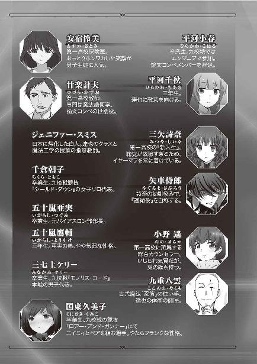

| 魔法科高校の劣等生(22) 動乱の序章編〈下〉 (電撃文庫) | |
| 佐島 勤 | |
| 株式会社KADOKAWA (2017) | |
本書（電子版）に掲載されているコンテンツ（ソフトウェア／プログラム／データ／情報を含む）の著作権およびその他の権利は、すべて株式会社ＫＡＤＯＫＡＷＡおよび正当な権利を有する第三者に帰属しています。
法律の定めがある場合または権利者の明示的な承諾がある場合を除き、これらのコンテンツを複製・転載、改変・編集、翻案・翻訳、放送・出版、公衆送信（送信可能化を含む）・再配信、販売・頒布、貸与等に使用することはできません。



［１］
二〇九七年四月十四日、横浜、日本魔法協会関東支部で開催された十師族及び師補十八家の若手を集めた会議は、予定どおり正午前に終わった。
何の実りも無く。
閉会が告げられ、真っ先に会議室を後にした達也は、
「四葉殿、待ってください！」
背後から自分を呼び止める声に立ち止まり、振り向いた。
達也の名は、「四葉」ではない。しかしそれを理由にして自分に向けられた言葉を無視するような、子供じみた真似はしない。
「七草さん、何か？」
だからといって十師族の流儀に従い「七草殿」と呼ぶのではなく、達也は「七草さん」と普通に反応した。
追い掛けてきた七草智一は、焦りを隠し切れない声と表情で達也の「何か」という問い掛けに答える。
「この後、ご出席いただいた方々にささやかなお食事をご用意しています。四葉殿も是非ご一緒していただけませんか」
その予定を、達也は当然知っていた。
「すみません。先程も申しましたとおり、この後、外せない用事があるのです」
だから会議室を後にする際「用がある」と、わざわざ申告してきたのだ。
「それ程長い時間、お引き留めはしませんが......」
「せっかくのお誘いですが、あいにく予定が詰まっておりまして」
智一が自分を引き留めたい気持ちは、達也にも理解できる。だが彼にも都合があった。達也は決して、智一に嫌がらせをしているのではない。
「七草さん、失礼します」
「司波様」
智一へ一礼した達也に、今度は若い女性の声が飛ぶ。
「はい、何でしょう」
その女性は、魔法協会の職員だった。彼女は智一の姿を認めて躊躇する素振りを見せたが、すぐに事務的な態度を取り繕った。
「屋上にお迎えのＶＴＯＬが到着しています」
「屋上に？ 分かりました」
迎えが来るとは聞いていなかったが、あれこれ考えるより見に行った方が早い。
達也はもう一度智一に会釈して、先導する事務員の背中に続いた。
屋上に駐まっていたのは、主翼の中にティルトローターを組み込んだ小型ＶＴＯＬだった。パイロットを除いた定員が六名の小型機だ。
ＶＴＯＬの横にはダブルのスーツを着た青年が立っており、達也に向かって恭しく一礼してみせる。
「達也様、どうぞお乗りください」
話し方も申し分なく丁寧だ。彼のことを「達也様」と呼んだから四葉家の人間だろう。間違いなく初対面だが、達也は青年の素性に心当たりがあった。
「初めまして。既にご存じのようですが、司波達也です」
「おお、これは誠に失礼しました。花菱兵庫です。何卒よろしく、お見知りおき願います」
大袈裟な身振りで謝罪の意を示した青年を前に、達也は心中密かに頷く。この青年は彼が推測したとおり、花菱執事の息子だった。
花菱執事は葉山執事に次ぐ四葉家の使用人ナンバーツー。戦闘行為を伴う非合法活動の人員、装備両面を取り仕切っている人物だ。彼の長男は身元を偽ってイギリスのＰＭＳＣ（民間軍事会社）で武者修行をしていると聞いていたが、既に帰国していたようだ。
「本日は私めが達也様と深雪様をご案内する大役を仰せつかっております。まずは機内へ」
「分かりました。よろしくお願いします」
達也は四葉家から支給されている電子キーでＶＴＯＬの後部ドアを解錠し、中に乗り込んだ。身元確認の為の手順だ。彼は招かれた自分が鍵を開けたことに違和感を懐かなかったし、花菱兵庫は当然という表情で達也が開けたドアを丁寧に閉めた。
花菱兵庫が操縦するＶＴＯＬは調布に新築された十階建てのビル屋上に設けられたヘリポートに着陸した。三階までがオフィス用、四階から十階までが居住用になっている複合ビルだが、達也の記憶には無い建物だ。言うまでもなく、ここが目的地ではない。
ローターが停止し風が収まった直後、ペントハウスから三つの人影が出てきた。少女が二人と、三十代の女性が一人。達也はこのビルに立ち寄った理由を充電の為と考えていたが──彼が乗っているＶＴＯＬは電動式だ──どうやらそれは勘違いだったようだ。
達也は内側からドアを開けて、背が高い方の少女が乗り込むのに手を貸した。
「ありがとうございます、達也様」
二人の少女は深雪と水波だ。予定では家で達也の帰宅を待つことになっていたのだが、彼女たちも本家からの迎えに、連れてこられたのだろう。
「どういたしまして。待たせてしまったか？」
「十五分程です。待合室の居心地は悪くありませんでした」
どうやらあのペントハウスは、ヘリポート利用者の休憩所になっているらしい。
「そうか」
「達也さま。お待たせしました」
頷いた達也に言葉を返したのは水波だった。深雪に続いて機内に乗り込んだ水波が、ドアをロックして何時でも出発できると申告したセリフだ。
「花菱さん、お願いします」
「かしこまりました」
達也が水波に目で頷き、花菱に声で合図する。水波が驚きの表情を見せたのは、彼女も兵庫の顔を知らなかったからだ。
兵庫の方はといえば、水波のような反応は四葉家に戻ってきたここ数日で見慣れている。水波に対して特に自己紹介も何もせずＶＴＯＬ機を発進させた。
達也たちを乗せた小型ＶＴＯＬは四葉家のある隠れ里に直接着陸するのではなく、小淵沢駅に近い、山裾を削って整地したヘリポートに降りた。
「こちらへどうぞ」
兵庫が達也たち三人を管制ビルに案内する。達也はビルで車に乗り換えて本家に向かうと考えた。この予測は間違いではなかったが、彼が予想した経路でもなかった。
管制ビルを通ってヘリポートの外に出るのではなく、職員用のエレベーターに乗り込む。
訝しげな視線を集める中、兵庫は古風なディンプルキーで非常用の制御盤を開けた。
連動して、エレベーターのドアが閉まる。
静脈認証用のパネルを手前に倒して兵庫が右手を置く。一瞬のタイムラグの後、達也たちを乗せたケージは下降を始めた。
「随分降りるんですね......」
深雪が少し不安げに、達也へと話し掛ける。
「目的のフロアは地下八十メートルになります」
そう答えたのは、兵庫だ。彼がそう言うのとほぼ同時に、エレベーターは減速を始めた。
ケージが停止し、ドアが開く。
エレベーターホールを出ると、そこは広々とした車寄せになっていた。その先には人工の光に照らされた地下道が続いている。
車寄せには、見るからに高級そうな大型セダンが一台。その運転席に人影は無かった。
兵庫が後部座席のドアを開け、深雪、達也の順番に車内へ案内する。自分は運転席に乗り込み、助手席に水波が収まったのを確認して、兵庫は車を発進させた。
「この地下道は本村へ直通となっております。あいにく窓の外は殺風景ですが、すぐに到着しますので」
発光パネルの単調な灯りの下、黒塗りの大型セダンは公道で出し得ない、猛スピードで疾走する。兵庫の言葉どおり、ヘリポートから本家まで十分も掛からなかった。
◇ ◇ ◇
千葉家の本家道場は東京と川崎の境界付近にある。門下生には社会人もいる──というより勤め人の方が多いので、道場は日曜日の方が賑やかだ。
この正午前後の時間だと、平日は学生もいない。魔法科高校に通っているエリカがこの時間帯に姿を見せているのも、休日ならではの景色と言えよう。
総領息子の寿和を失って以来、道場には暗いムードが漂っていた。悲壮感と言っても良いだろう。エリカがいてもそれは変わらなかったが、彼女が稽古に現れると、何となく前向きな、前へ前へ駆り立てられるような雰囲気が醸し出される。そんな雰囲気作りの才能が、エリカには確かにあった。
そしてエリカが連れてきた二人の少年も、がむしゃらな空気の形成に一役買っていた。
「オリャァ！」
「グッ！」
床が激しく鳴る。何事かという視線が集中する先で、髪の長い少年が仰向けに倒れ呻いている。その少年の前で、ごつい体格の大柄な少年が大きく息を吐いた。
「侍郎、一休みするか？」
「まだまだやれます！」
侍郎が勢い良く立ち上がる。フラリとよろめきそうになったが、咄嗟に力を込めて、ダメージが無い風を装う。
「西城先輩、もう一本お願いします！」
腰が直角になるまで頭を下げた侍郎に、レオが「おぅ」と答える。
「エリカ、侍郎はこう言ってるけどよ。続けても良いよな？」
「良いわよ。て言うか、立てなくなるまで続けて」
レオが苦笑を浮かべて侍郎を見る。侍郎は大真面目な表情をエリカへと向けている。
レオは苦笑いのまま、エリカに視線を戻した。
「立てなくなる、には俺も含まれんのか？」
「下級生より先にダウンするなんて無様は、許さないからね」
「へいへい」
エリカの冗談とは思えない声と表情に、レオが肩を竦める。
そして侍郎に身体ごと向き直り、片手で竹刀を構えた。
すぐさま、侍郎が応じる。
同じ片手構えだが、得物は対照的だった。
レオの竹刀は通常の物より長い、大太刀仕様。
一方、侍郎の竹刀は脇差の長さだ。
得物の長さが絶対的な有利、不利につながるわけではない。しかし得物の種類によって戦い方に向き不向きがあるのは確かな事実だ。一般的な傾向として、間合いの長い武器の方が先制に向いている。短い刀剣は相手の攻撃を躱し、あるいは受け流して相手の懐に入るという戦法が定石だろう。
だが今回、短い睨み合いの後、仕掛けたのは侍郎の方だった。
侍郎がレオの懐に踏み込む。
無論レオも、相手の思うがままを許しはしない。侍郎が長尺竹刀の間合いに入った瞬間、右手の得物を素早く振り下ろす。
片手構えで更に間合いが伸びた一撃を、侍郎は躱しきれなかった。スピードだけでなくパワーも常人の両手構えに引けを取らない、むしろ凌駕する打ち込みを、刀身の腹に手を添えた脇差で強引に逸らす。
片手、対、両手。しかも攻撃を受け流されているにも拘わらず、レオの体勢は全く崩れなかった。体が流れたのは、剣圧に押された侍郎の方だ。
長い分、竹刀といってもそれなりに重い得物をレオは軽々と振り上げ、構えが取れていない侍郎に手加減抜きで振り下ろした。
それとほぼ同時に、侍郎の腰から模擬刀の小柄が独りでに飛び出す。侍郎が投げたのではない。彼の腰に挟まれていた小柄が宙を舞い、レオの顔目掛けて襲い掛かったのだ。
レオが竹刀を止め、刀身の根本で小柄を払う。
だが短刀より華奢な刃は、床に落ちなかった。
大太刀仕様の竹刀に比べれば針のような小柄がレオの両側面に回り込む。
そう。空を翔る小柄は何時の間にか、二本に増えていた。
レオの顔に緊張が走る。
彼は小柄を迎撃するのではなく、敢えて前に踏み込んだ。
大太刀には近すぎる間合い。まともに竹刀を振っても、有効打は与えられない。
だがこれは、剣道の試合ではない。竹刀はあくまで竹刀であって、刀として扱う義務は無い。
レオは右手一本で握っていた竹刀の腹に左手を添えた。
手槍にように、竹刀を突き出す。
侍郎は自ら転がってこれを躱した。
宙を舞っていた小柄が、糸の切れた操り人形のように床に落ちる。
侍郎の回避は、大太刀にとっては近すぎる間合いから逃れようとするものだった。
近すぎるポイントから、遠ざかる。
それは、適正な間合いを横切ることになる。
レオの野性は、その瞬間を見逃さなかった。
「せやっ！」
レオが竹刀を振り下ろす。ちょうどの間合いで襲い掛かる長尺の刀身を、侍郎は避けられず受け止めようとした。
片膝立ちで、短い竹刀の両端を持ち頭上に構える。
闘気が、竹刀を真剣と錯覚させる。
脇差の真ん中に、叩きつけられる大太刀。
レオの大太刀は、侍郎の脇差を身体ごと叩き潰した。
侍郎が仰向けに倒れる。いったんは竹刀で受けたとはいえ、レオの打ち込みを自分の竹刀ごと額に受けたのだ。ダメージは小さくない。
レオは「ヤベェ」という表情をエリカに向けた。だがエリカが厳しい視線を注いでいるのは侍郎に対してだ。
「治療、お願い」
「はい、エリカお嬢さん」
三十代の男性が小走りに駆け寄ってくる。その男性は倒れている侍郎の頭の横に膝をついて、ＣＡＤを操作した。
男性が侍郎の額に両手を翳す。
治癒魔法が発動した。
赤くなっていた侍郎の、額の腫れが一瞬で引く。治癒魔法は対象となる人体が怪我をしていない状態であると、世界を騙す術式だ。偽った結果はすぐに表れる。ただし、然程時間が経過しない内に世界は騙されたことに気付く。だから「噓」の効果が切れる前に、新たな「噓」を重ねなければならない。怪我が本当に治るまで、治ったことにしておくのが治癒魔法の本質だ。
しかし逆に言えば、魔法が効力を発揮した瞬間に、魔法を掛けられた者は、治癒魔法の効力が続く限り万全な状態での戦闘が可能になる。
侍郎はすぐに目を覚まし、身体を起こした。
「止め」
彼はすぐに手合わせを再開しようとした。だが、エリカの声に侍郎は背筋の力を抜いた。
「矢車、今日はここまでよ。これ以上は後遺症のリスクを無視できない」
「......分かりました」
十師族の護衛役としての魔法力には恵まれなかった侍郎だが、魔法に関する知識は三矢家の側近となるべき教育の結果、十分に備わっている。治癒魔法の限界も、彼は弁えていた。
「──ありがとうございました」
立ち上がった侍郎がレオに向かって一礼する。
続けてエリカにも礼をして、一歩足を引いた。
「待ちなさい。何で帰ろうとしているの。気が早すぎよ」
侍郎の意図は、エリカによって完全に読まれていた。エリカの叱責によって、侍郎の足は道場の床板に縫い付けられる。
エリカは侍郎の頭を軽く小突いて、彼に座るよう指示した。
侍郎が他の門弟の邪魔にならないよう、壁際まで下がって膝を折る。その正面にエリカが、側面にレオが、正座と胡坐で腰を下ろした。
「最後の攻撃、念動力の制御を手放さなかったら矢車が勝ってたわね」
「相討ちのタイミングだったぜ？」
いきなり結論を出したエリカにレオが反論する。
「タイミングはね」
エリカはそれを、頭ごなしに否定することはしなかった。
「でもあんたの打ち込みを矢車は脇差で受けていた。一方、あんたの方は矢車の小柄にノーガードだったでしょ？ 確実にやられたのはあんたの方よ」
レオは反論こそしなかったが、まだ完全には納得していない様子だ。しかしエリカはそれに構わず、侍郎に顔を向けた。
「矢車は重い物が動かせないからって理由で、自分の念動力を大したことないと思っているみたいだけど。百グラムくらいの小さな刃でも、急所に刺されば人は簡単に死ぬ。魔法防壁を全方位に展開できる魔法師は少ないし、防御魔法をずっと使い続けられる魔法師はもっと少ない。矢車のＰＫは牽制の手段として効果的なだけじゃない。敵に止めを刺せる、使える武器なのよ。あんたはまず、そこを理解しなきゃならない」
「理解しています」
侍郎は間髪入れずエリカにそう答えた。だが反射的に言い返しただけで、自信を持ってそう答えたわけではないのが横で聞いていたレオにも分かった。
言うまでもなく、正面で目を合わせているエリカを誤魔化せるはずはない。
「じゃあ、理解するんじゃなくて信じてあげなさい。自分の、力を」
エリカのこの言葉に今度は反論できず、侍郎は奥歯をグッと嚙み締めた。
彼女に言われるまでもなく、侍郎は自分の力を、自分自身を信じていた。自分には詩奈の盾になる力があると信じて修練を積んできた。
だが彼に突きつけられた現実は、力不足。
一度裏切られたものを、もう一度信じる。それは、容易なことではなかった。
◇ ◇ ◇
横浜の魔法協会関東支部からおよそ一時間。予定していた半分以下の時間で、達也は四葉本家に到着した。
「深雪様、達也様、奥様がお待ちです。どうぞこちらへ」
本家についた達也を、葉山が直々に出迎える。葉山は四葉本家で働く使用人のトップで、かつ当主である真夜の腹心だ。次期当主とその婚約者という地位が肩書きだけのものではないと示す応対だった。
葉山に先導される深雪の背後には水波が、達也の背後には兵庫が続いている。水波はともかく兵庫に対して葉山が何も言わないことに、達也は意外感を覚えた。兵庫は単に迎えの操縦士を務めただけではなかったのだろうか。
その問いを発する機会が無いまま、達也は食堂に案内された。年末に候補者を集めて、深雪が次期当主に指名された部屋だ。
新発田勝成。津久葉夕歌。黒羽文弥と亜夜子の双子の姉弟。そこには、大晦日と同じメンバーが顔を揃えていた。ただ前回と違い、既に四葉家当主・真夜が席に着いている。
「お待たせしてしまい、申し訳ございません」
「遅れたわけではないから、謝罪は不要ですよ。まずは御席に着きなさい」
達也の謝罪に、鷹揚な態度で真夜が答えた。
「恐縮です。失礼します」
達也が頭を下げ、それに合わせて深雪も一礼する。
達也が深雪の椅子を引こうと彼女が座る席に目を向けたが、そこには既に水波がスタンバイしていた。達也の眼差しに目で頷いて、深雪がまず腰を下ろす。
達也の椅子は兵庫が引いた。もしかしたら本家は、兵庫を自分の下に付けようと考えているのかもしれない。そんな思考が達也の脳裏を過った。
しかし今は、兵庫の存在に気を取られている場合ではない。達也は意識を真夜に集中した。
真夜が、自分の背後に移動した葉山に目を向ける。
それに応えて、葉山はいつの間にか手にしていたハンドベルを振った。
ベルの残響が消えてしまう前に、まるで待ち構えていたようにワゴンを押したメイドが入ってくる。
ランチには既に遅すぎる時間だが、達也たちが何も食べずに本家へ直行すると察していたのだろう。お茶請けとしてもおかしくない種類の軽食が達也と深雪の前に並べられた。
昼食は水波も摂っていない。このまま深雪の後ろに立たせておくのは可哀想な気もしたが、ここで食事をしに行けと言うのは水波の職業意識に対する侮辱になる。それを理解している達也は、真夜の許しを得た上で軽食とお茶に手を付けた。深雪も、兄に倣った。
もちろん二人とも、食事にのみ専念するような、無邪気な真似はしない。真夜や夕歌、亜夜子が振ってくる世間話にも如才なく応える。そうして、出された量の割には時間を掛けて食事を終えたところで、真夜の纏う雰囲気が変わった。
達也と深雪も、居住まいを正す。
「では......西果新島の件から聞かせてくれるかしら」
「はい」
真夜の求めに応じて、達也が口を開く。達也は沖縄本島、久米島、そして人工島とその沖合で起こった出来事を順番に、かつ簡潔に説明した。
「オーストラリア軍の工作員、ジェームズ・Ｊ・ジョンソン大尉とジャスミン・ウィリアムズ大尉は巳焼島に移送された模様です」
「その二人についてはこちらでも確認が取れているわ。ご苦労様」
巳焼島は三宅島の東五十キロの海上に、二〇〇一年、巳年の海底火山活動によって新しく形成された小さな島だ。『巳焼島』という名前は、隣に位置する三宅島の名前の由来の一つと言われている『御焼島』の「御」を、誕生した年の干支「巳」に置き換えて命名された。二十一世紀最初の年にできたことから『二十一世紀新島』とも呼ばれている。
二十年世界群発戦争時には国防軍の基地が置かれたこともあった。だが二〇五〇年代の度重なる噴火で基地は放棄され、現在は犯罪魔法師を収監する施設が置かれている。
実は、東道青波を通じて、この島は四葉家の私有地になっていた。名義上は都内の不動産会社の持ち物だが、その不動産会社は間に数段階を挟んで四葉家が全株式を支配している。
つまり巳焼島の監獄は、四葉家が国防軍から危険な魔法師の隔離を秘密裏に委託されている施設なのだ。真夜は、そこに送られた囚人のデータを自由に閲覧できる立場にある。達也がジョンソンとジャスミンに触れたのは、自分が彼らの移送先を確認する為という性格が強かった。
「巳焼島？ あそこは実験施設に造り替える予定ではありませんでしたか？」
ここで疑問を呈したのは、新発田勝成だった。本家の次期当主が深雪に決まり自分は分家を継ぐと決まってから、彼は防衛省に勤務する傍ら実家の仕事に当主補佐という形で携わっている。四葉家が進めているプロジェクトについても、ある程度のことは知っていた。
「問題無いわ。すぐに処分する予定だから」
真夜の回答に、勝成が軽く眉を顰める。このテーブルに同席している若者たちの中で、それが最も大きなリアクションだった。何を「処分」するのか、真夜のセリフを理解できなかった者はいない。それでいて、達也や夕歌ばかりか、深雪や文弥まで「そうですか」という表情で聞き流した。亜夜子に至っては、その部分にまるで反応しなかった。
「ご当主様。巳焼島といえば、深雪お姉様が以前『ニブルヘイム』の練習をされていた場所ではありませんか？ そこに実験施設を造るということは、その施設は大規模魔法用の屋外実験場なのでしょうか？」
亜夜子が気になったのは新たに造る実験場の方だった。彼女が言うとおり、巳焼島は深雪が中学時代に『ニブルヘイム』を修得する為の練習場に使っていた土地だ。
当時からあの島には危険魔法師の監獄があった。しかしその用途に使っていたのは島の西端の、ほんの一部だ。度重なる海底火山活動で、溶岩原からなる島の面積は八平方キロにも及んでいる。東京の国立市とほぼ同じ面積だ。広域冷却魔法の練習をする場所は十分にあった。
「まだ最終決定ではないのだけど......そうね、貴方たちには言ってしまっても構わないかしら」
真夜はもったいぶっているのではなく、本当に迷っている様子だ。
「ここの施設も随分老朽化しているでしょう？」
真夜のセリフに、達也を含めた一同が頷く。四葉家が使っている施設は基本的に、第四研から引き継いだ大戦中の物だ。補修や改修は適宜行っているとはいえ、基本設計が時代遅れになってきていることは否めない。
「でもだからといって、今ある機器を壊して新しい物に交換するのも、色々と不都合があるのよ」
今度は、達也と勝成だけが頷く。大戦中の設備は再調達困難な物も少なくない。全面的にリニューアルしてしまえば、幾つかの分野で研究の継続性が失われてしまう恐れがある。
「だからいっそのこと、巳焼島に新しい実験施設を造ろうかと思って」
「受託している監獄を廃止することについて、国防軍の承諾は得られているのでしょうか？」
質問したのは夕歌だ。彼女は勝成と違って、この計画を知らされていなかった。
「表向きはしばらく続けるわ。新しく造る施設も、名目は国防軍の研究所だし」
「国防軍の研究所の名目で造った施設を四葉家の物にするのは問題になりませんか？」
「その点は話がついています」
どう話がついているのか説明する気は無いようで、真夜は夕歌に向けていた視線を達也の方へ移した。
「それより今は、達也さんの報告の続きを聞きましょう。『ゲートキーパー』だったかしら。達也さんが編み出した、魔法師を無効化する魔法。あれは貴方以外の魔法師にも使えるものなのかしら？」
「魔法式を改良しなければなりませんが、精神干渉系魔法に適性がある魔法師ならば、原理的には使えるはずです」
真夜以上に、夕歌と文弥が強い関心を見せる。この二人は現存する四葉一族の中でも、特に精神干渉系魔法の適性が高い。技術的にはまだまだ親の世代に及ばないが、素質ならばこの二人が一族中で一、二を争うだろう。
「コード化はできていて？」
「持ってきています」
コード化とは、魔法を起動式で記述することを指している。新しい魔法は多くの場合、魔法師が感覚的に創り上げる。それを起動式の形で論理的に記述し直すには専門的な技術が必要で、魔法技能を共有する上でのボトルネックになっているのが現状だ。
だが達也の場合は起動式から新魔法を開発することもある程で、コード化に苦労することは無い。それを真夜も知っているから、起動式ができているという前提で提供を促したのだった。
「そう。後で葉山さんに渡しておいてくれる？」
「承知しました」
「夕歌さん。葉山さんから起動式のコピーを受け取ってください」
「分かりました」
「ゲートキーパーの改良は津久葉家に任せたいと思います。達也さん、良いですね？」
「はい、構いません」
最初から達也に『ゲートキーパー』を秘匿する気は無かった。自分や深雪のような想子保有量が桁違いに多い魔法師にとっては害になり得ないと分かっているからだ。無差別に公開する気も無かったが、四葉家内部では共有するつもりでいた。
しかし達也には精神干渉系に対する適性が無い。彼は別種のスキルでゲートキーパーを実行している。精神干渉系魔法として汎用化するには、彼は不向きだ。その点、精神干渉系魔法の使い手が多い津久葉家に術式の汎用化を任せるのは合理的。そう考えて達也は頷いた。
文弥が少し残念そうな顔をしたが、達也以外からも異議を唱える声は上がらなかった。
沖縄の件はこれで一段落と考えたのか。
「さて......」
紅茶をゆっくりと一口飲んで、真夜は話題を変えた。
「それでは、今日の会議の顚末を聞かせてもらえる？」
「はい」
社会に対する魔法師の貢献を世論に訴える為、深雪を広告塔にしようとした件に達也が言及したところで、文弥と亜夜子から憤慨している雰囲気が伝わってきた。
「私たちも随分親しみを持たれるようになったんですね。そろそろ世間に対して本気を欠片でも見せた方が良いのではないでしょうか」
皮肉っぽくそう言ったのは夕歌だ。なお彼女が言う「世間」とは所謂「魔法界」、魔法師コミュニティの「世間」のことである。
「好き好んで警戒されることもあるまい。迎合する必要はなおさら無いが」
夕歌のセリフに素っ気無く応じたのは勝成だ。方向性は違うが、気分を害しているのは彼も同じだった。
「達也さん、四葉家は貴方の判断を支持します。深雪さんを利用しようとする企みは今後も全て、無視していただいて結構よ」
真夜の声には苛立ちも怒りも存在していない。ただ彼女の言葉には、誤解の余地も無かった。
「他の二十七家と対立しても構わないと？」
達也の念押しにも、
「ええ」
真夜は迷わず即答する。真夜はもしかしたら、七草智一の、ひいては七草家の思惑を事前に知っていたのかもしれない。
「無視するだけで構わないのですか？」
文弥が過激な質問を口にする。実力で反撃しなくても良いのか、という意味だ。
「攻撃を受けたら大人しくしている必要はありませんよ」
真夜の回答は、こちらから先に手出しすることを禁じるものだった。しかし真夜の無視方針、それ以前に本日の会議における達也の非協力的言動は、挑発と受け取られても仕方がないもの。事実上、実力行使を容認するものと言える。
「ただ、油断はしないように。分かっているとは思いますが、私たちは無敵ではありません。四葉の魔法師が他家の魔法師に対して絶対的に勝っているということはないのです」
表情にこそ出さないものの、全員が「今更言われるまでもない」と考えたことは想像に難くない。ただ「自分たちが負けるはずはない」という驕りが誰の心の中にも全く無かったとは言い切れないだろう。
「特に十文字家と十山家には要注意です。それと、九島光宣には」
その本音が反映されているのかいないのか。真夜の言葉に訝しげな表情を返さなかったのは達也と勝成だけだった。
「九島光宣......第二高校の二年生ですね。それ程に手強い相手なのですか？」
「去年の秋、周公瑾を仕留める際に手を借りましたが、確かに警戒を要する相手です」
夕歌の疑問に達也が答える。それに強く意外感を示したのは、夕歌ではなく勝成だった。
彼は周公瑾の件に関する報告書を読んで、光宣の協力については知っていた。確かに、高い戦闘能力を持つ魔法師だと評価していた。
おそらく、夕歌や文弥のレベルでは危ないだろう。
だが、自分を手玉に取った達也が「警戒を要する」と明言する程の相手とは、勝成は考えていなかった。
しかし、あからさまに疑問を呈することはない。光宣の実力を疑うことは、真夜の言葉を疑うことと同義だからだ。一度目は許されても、二度目は不興を買う。それが分からない勝成ではなかった。
ただ、だからこそ疑問は解消されないまま、彼の内でくすぶっている。
「十文字家の実力は横浜事変で拝見しましたが、十山家も同等の力を持っているのですか？」
深雪が話題を変えたのは、余計なことを口走りそうになっている勝成を制止するという側面もあったのかもしれない。
「第十研の表向きの研究方針は『仮想構築物を生成する領域魔法』ですが、真の目的は中央政府の最終防壁となる魔法師を創り出すことでしたからね。その製品である十文字家と十山家は、他の二十五家とは一線を画する戦闘力を保有しています」
二十五家というのは、真夜の初歩的な計算間違い、ではない。二十八家の内、十文字家、十山家、そして四葉家は別格という認識が自然に表現されたセリフだった。
「中央政府、ですか？ 『首都の最終防壁』ではなくて？」
第十研の研究成果を言い表す時、「有事の際、十文字家の魔法師は首都の最終防壁となるだろう」というフレーズがよく使われる。十文字家の魔法師が控えていれば、首都が直接攻撃を受ける事態になってもそれを防ぎきることができる、という意味だ。深雪の疑問は、これを踏まえたものだった。
十文字家の多重防壁魔法は歩兵相手ではなく、機動兵器や航空戦力、飛翔体兵器を相手にした時、その真価を発揮する。大口径機関砲や大型爆弾に止まらず、極超音速質量弾や──使用を事実上禁じられているが──戦術核さえも無力化するだけの性能を誇る強固な魔法障壁。
首都圏全域をバリアで囲う必要は無い。軌道や射線に合わせてピンポイントに防壁を形成する。爆弾であれば逆にそれをバリアで包んで爆発を封じ込める。それだけの精度とスピードとパワーを持っているのが十文字家の魔法師だ。
その能力特性は「都市に対する攻撃を防ぐ」ものであり「首都の最終防壁」の名に相応しい。しかし第十研の真の目的は「中央政府の最終防壁」と真夜は言った。それが単なる言葉の文でないならば、十山家に与えられた魔法は十文字家のものとは違うということになる。
「ええ。深雪さんは知らなかったかしら。十山家の魔法は人間を守るものなの」
「私も存じませんでした。十山家の魔法は、個人用なのですか？」
夕歌の問い掛けに、真夜は悠然と首を左右に振った。
「個人用ではなく、複数の人間に対して、個々に防壁を形成する。それが十山家の魔法です」
「同時照準ですか？ それともマルチキャストでしょうか？」
「そこまでは分かっていないわ」
性急な感もある文弥の質問にも、真夜は笑顔で答える。
しかし、これ以上真夜に甘えるのは危険だと、横で聞いていた達也は感じた。
「分かりました。十文字、十山、そして九島光宣には特に注意して対応します」
彼は従順に頭を下げてみせることで、会話の流れを断ち切る。
達也と同じ危うさを覚えていたのか、勝成は十山家の魔法について話を蒸し返したりはしなかった。
「しかし、対決姿勢一本槍でよろしいのですか？ 深雪さんを広告塔に、などという企みを認めるわけにはいきませんが、反魔法主義運動に対して他家との協調を放棄してしまうのも得策とは思えません」
その代わり、非宥和方針に対して懸念を示す。
「あちらがこれ以上何もしてこなければ、対決も起こらないと思いますけど......。同時に、向こうから頭を下げてこない限り、協調などあり得ないのでは？ 相手は本家の次期当主を利用しようとしたんですから。それがけじめというものでしょう」
夕歌のセリフに、勝成が呆れた表情を浮かべる。
「夕歌さん......。どうして君はそうも好戦的なんだ。けじめを求めるのは結構だが、それで孤立するようなことになれば収支は赤字だろう」
「そうでしょうか？」
勝成の大人な意見に異議を唱えたのは、夕歌ではなく文弥だった。
「社会から孤立するのは致命的だと思いますが、魔法師の社会で孤立したからといって我々に実害は無いのでは？ しかも今問題になっているのは二十八家という、魔法師コミュニティの中のごく一部に過ぎない部分の、更にその内部における話でしょう。なおさら孤立を恐れる必要はありません」
文弥の主張は本質を突いていた。若年からくる経験の無さが逆に、思考を惑わす枝葉末節を視界から取り除いたのかもしれない。
四葉家にとって文明社会の産物を提供する「社会」は不可欠なものだが、魔法技能を提供する存在は、自分たちだけで間に合っている。たとえ世界最強の魔法師部隊を自認するＵＳＮＡのスターズと事を構えても、単独で自衛する実力が四葉家にはある。
「いざという時は他のナンバーズと全面戦争になっても、本家と分家の総力を挙げて達也さんと深雪さんを全面的にバックアップすべきです」
「私の指示は変わらないわ。四葉家の次期当主を御神輿に仕立て上げようとする企みは、全て無視しなさい。攻撃を受けた場合、自分の判断で反撃して構いません」
文弥の意見を支持したからかどうかは分からないが、真夜はそう言って、この問題に関する議論を終わらせた。
◇ ◇ ◇
肩を上下させ、ゼェゼェと荒く息を吐く。床を踏みしめる足も、最早覚束無くなっている。それでも瞳に宿した闘志の光だけは消さずに、侍郎はエリカと向かい合っていた。
彼の両眼は、エリカを睨んでいると言うより、見詰めている。
エリカの唇が笑いの形に弧を作った。
次の瞬間、彼女の姿が消える。
侍郎の腰から模擬刀の小柄が飛ぶ。
カン、という乾いた音が侍郎の左側面で二度、続いた。
侍郎が右に移動しながら身体を左に向ける。
彼は、右手に握った脇差の長さの木刀を、顔の前に翳した。
その右手首に、エリカの木刀が添えられている。
「結構、様になってきたじゃない」
エリカが木刀を下ろすのに合わせて、侍郎も構えを解いた。
身体を打たれた痛みはない。レオとの試合稽古が終わった後、引き続き行われたエリカの指導は寸止めによるものだった。
一種の引き立て稽古と言って良いだろう。エリカは、侍郎の技術では追いつかないぎりぎりの水準を見極めて攻撃を仕掛け、侍郎はＰＫを牽制に使うことでエリカの動きを停滞させ防御、反撃の機会を作る。その繰り返しだ。
実際に打たれることは無いから、治癒魔法が必要になる怪我はしない。だが常に余裕がない動作を強いられる所為で、侍郎は全身の筋肉が痙攣を起こしかけていた。
「じゃあ、今日は本当にお仕舞い。クールダウンに手を抜いちゃだめよ」
「......ありがとうございましたっ！」
疲労の余り舌が回らないのか「ありぃしたっ！」と聞こえる挨拶と共に、侍郎が頭を下げる。
エリカの気配が道場から消えた。シャワーを浴びに行ったのだろう。
侍郎の身体が、腰を抜かしたように、床に落ちる。胡坐の姿勢で懸命に酸素を貪る侍郎を見下ろしながら、レオはエリカのことを考えていた。
侍郎に対するエリカの指導は、彼女らしくないものだった。レオには何処がどう違うと指摘することはできなかったが、少なくとも『薄羽蜻蛉』を伝授される際に自分が受けた指導とは質が違っていた。
エリカは本気で侍郎を強くしようとしている。技ではなく、強さを与えようとしている。
少なくともレオにはそう見えている。
それは、いつものエリカらしくないように、レオには思われた。
レオが千葉道場を訪れたのは、侍郎の稽古相手を頼まれたからだ。──「あれは頼むというより半分以上強制だ」とレオは思っているが。それはとにかく、侍郎の稽古が終わった以上、彼がここに留まり続ける意味は無い。レオはまだ立ち上がれない侍郎に一声掛けて、弟子が使うシャワールームに向かった。
以前、レオは騙されて、エリカが使用中の浴室に案内されたことがある。あの時はエリカのバスタオル姿を目撃した代償に、地獄の釜も生温いと思わせられるしごきを受けた。多少「ラッキー」と思わないでもなかったが、それ以上に気まずさがいっぱいで「もう二度と繰り返さないぞ」とレオは心に誓っている。
昔は「汗をかいたら水浴び」で済まされていた剣術道場も、現代ではお湯の出るシャワーが必須だ。大所帯の千葉道場は完全個室タイプのブースを十室並べたシャワー室を備えている。問題は男女の別がないことだが──男性の門弟が圧倒的に多い所為だ──更衣スペースもついている個室タイプのシャワーブースには鍵が掛かるので、のぞきや痴漢の心配は無い。それに女性の門弟は希望すれば母屋の浴室を貸してもらえるので、道場のシャワールームは実質的に男性用となっていた。
ブースは一つだけ使用中だった。特段気に留めず、レオは一番手前のブースに着替えを詰めたバッグを持って入る。
特に拘りが無ければ自動モードで三分だ。立っているだけで、全方位から吹き付けるシャンプー兼用の液体ソープとシャワーが汚れと汗を洗い流してくれる。頭皮を指で、顔を掌で擦る以外は機械に任せて、レオはシャワーを終えた。
さすがに身体を拭くのと服を着るのは自分でやらなければならない。それも含めて、彼は五分でブースを出た。
シャワーブースの前は壁一面の鏡と、簡単なドレッサーになっている。普段は髪を拭きっぱなしにするレオだが、今日は気紛れにドライヤーを手に取った。
今の彼はタンクトップにハーフパンツという格好だ。ジャケットは道場のロッカーに置いてきている。現在は四月半ば、外に出るには肌寒い格好だが、空調が効いているシャワー室の中はむしろ暑いくらいだった。
多分、魔が差したのだろう。レオは鏡に向かって力こぶを作った。太く逞しい二の腕は、少年のプライドを満足させるに十分なものだ。
気を良くしたレオは、右腕だけだった力こぶを両腕に作った。胸を張り、左右の腕を肩の高さに上げて肘から先を上に曲げる、「フロント・ダブル・バイセップス」と呼ばれる最もポピュラーなポーズだ。
続けて両手を腰に当て、肩を前に絞るようにして背中を広げる「フロント・ラット・スプレッド」。発達した広背筋が、見事な逆三角形のシェイプ（Ｖシェイプ）を作り出す。
肘を曲げたまま両腕を身体の前に出し、やや前傾姿勢で首の付け根の筋肉（僧帽筋）を膨張させる「モスト・マスキュラー」。
レオは再び右腕だけで力こぶを作った体勢に戻り、自分の腕を見下ろして満足げに息を吐き出した。
「......あんた、何やってるの？」
「うぇっ!?」
迂闊なことに、レオは声を掛けられるまで、鏡に映るエリカに気づいていなかった。
「しかも、ドライヤーを持ったままでさ」
赤面したレオが顔を背ける。
恥ずかしいところを見られた、という思いもあったが、それ以上に──
「お、おま、なんて格好してるんだよ!?」
鏡に映ったエリカのあられもない姿を、レオは正視できなかった。
バストをちょうど隠す長さしかないタンクトップ。
太ももの付け根までむき出しのショートパンツは、スパッツと見紛う程にピチッとしている。
見事にくびれた腰も、引き締まった腕と脚も、ピンクに上気した胸元も全てむき出しだ。
「はぁ？ シャワー浴びたばっかなんだから、このくらい普通でしょ。下着もちゃんと着けてるわよ」
「そ、そういうこっちゃねぇ！ な、何でお前がここに......！」
「良いでしょ、別に。母屋に行くのが面倒だったの」
本当に面倒臭そうにそう言って、エリカはレオから一人分間を空けた椅子に座り、ドライヤーを手に取った。
「あんたもさっさと髪を乾かしたら？ 今の奇行は黙っててあげるからさ」
「い、いや、お先に！」
レオは放り出すようにしてドライヤーを置き、転びそうになりながらシャワー室を後にする。
エリカはレオの後ろ姿を見送って肩を竦め、念入りに髪を乾かし終えると、タンクトップ＆ショートパンツの上にチュニックを着て自分の部屋がある離れに向かった。
◇ ◇ ◇
お茶会形式をとった達也による報告会の話題は、『トゥマーン・ボンバ』と思われる攻性魔法に移っていた。
「では達也君にも術者の存在は知覚できなかったということですね？」
「ええ」
勝成の質問に、達也が肯定の返事を返す。
「その魔法がトゥマーン・ボンバだとすると......」
勝成は少し間を取って、
「やはり、新ソ連は超遠隔照準補助システムを実用化しているということでしょう」
断定的な推論につなげた。
「超遠隔照準補助システム......マテリアル・バーストに使うサード・アイのような？」
夕歌の問い掛けに、勝成が頷く。
「推測される魔法の性質上、サード・アイのような精密照準は必要ないだろう。その一方で、無数の魔法式を複写し、それが同時に発動するような変数の設定は、一人の魔法師の演算能力で賄いきれるものではないように思われます。演算補助の機能を持つ大型コンピュータを組み込んだ複合システムを使っているのではないでしょうか」
最初の一文以外は、真夜に向けたセリフだ。
「そうですね。達也さんはどう思う？」
「合理的な推測だと思います。付け加えるならば、その全ての機能を統合した大型ＣＡＤで、通常ならば魔法師が入力する変数までもカバーした起動式を作成し、魔法師の負担を軽減しているのではないかと」
「魔法師が起動式を読み込むだけで魔法が発動されるということ？」
「起動式の読み込みすら、自動化しているかもしれません」
「それで本当に魔法師の負担を軽減したことになるんですか？」
真夜と達也の問答に、夕歌が疑問を挿む。
「起動式の読み込みすら自動化されて魔法が発動するとすれば、魔法師が自分の限界を超えた魔法を強制される可能性もあるわけですよね？」
「自分の処理能力を超えた魔法は発動しませんよ。『ブースター』を使えば別かもしれませんが」
夕歌の問いに答える達也の口調に淀みは無い。
「ブースターというと、香港マフィアが供給していた『ソーサリー・ブースター』のことですか？ あれを作っていた組織は壊滅したんじゃなかったかしら」
「製法が失われたわけではないでしょう。まあ、全ては憶測でしかありませんが」
「そうね」
夕歌はまだ何か言いたそうだったが、真夜が相槌を打ったことで引き下がった。
「魔法の仕組みにも興味はあるけれど、それより差し迫っては......」
真夜はそこで言葉を切って、「分かるかしら？」という視線を深雪に向けた。
次期当主に対する教育という意味合いだろうか。
「急を要する課題は、トゥマーン・ボンバと思われる魔法を、どう防ぐかだと思います」
幸い、昨日の夜に達也と同じ話をしたばかりだったので、深雪は答えに悩まなかった。
真夜が良くできましたという表情で頷く。彼女は深雪の答えが達也の受け売りであることを知らなかったが、仮にカンニングで得た答えであっても気にしなかったに違いない。
「酸水素ガスを生成して爆発させるあの魔法が、トゥマーン・ボンバかどうかは取り敢えず横に置いておきましょう。深雪さんならあの魔法をどう防ぎますか？」
これも──昨晩ではなくここに来るＶＴＯＬ機の中でだが──達也からレクチャーを受けていた。
「発動のタイミングを合わせられれば、『凍火』で阻止できると思います。ただ、肝心のタイミングを摑むのが相当困難だと思われますが......」
凍火は対象物の保有する熱量を一定レベル以下に抑制して燃焼を阻止する魔法。トゥマーン・ボンバが熱を加えること無く水素と酸素を結合させて爆発を引き起こす魔法であっても、その結果として熱が発生する以上、熱量の増加を禁じる凍火で阻止できる理屈になる。
「なる程。勝成さんならどうです？」
「そうですね......。攻撃の規模にもよりますが、『密度操作』で生成直後の水素と酸素を分離すれば魔法を不発に終わらせることができると思います」
「文弥さんはどう考えます？」
「僕には障壁を張って耐えるくらいしかできないと思いますが、姉の『極散』ならば魔法の発動を妨害できると思います」
次々と提示される無害化手段に、楽観的な空気が形成されようとしていた。
「密度操作による無害化も極散による発動阻止も理論的には可能ですが」
そこで達也が警告を投げ込む。
「問題は、深雪が言ったように、相手の魔法にタイミングを合わせられるかどうかです。あの高速展開される連鎖的魔法式複写、自分は便宜的にチェイン・キャストと呼んでいますが、その完成前に後出しでこちらの魔法を完成させるのは、相当困難ではないかと思われます」
「ですが、トゥマーン・ボンバと仮定される魔法には攻撃範囲と同じ規模の広がりを持つ水が必要なんでしょう？ 海上や湖の上ならともかく、陸上ならば事前に霧や水溜まりを作り出さなければならないのでは？ それである程度予測は可能だと思いますけど」
夕歌の口調は、今一つ本気で主張しているとは思えない節があった。だが達也は、余計なことを言わずその意見を否定した。
「自分がこの魔法の術者なら、雨の日を狙います。中東の砂漠地帯ではなく日本です。機会を見出すのは難しくないでしょう」
夕歌が達也に向かって肩を竦めるような仕種を見せる。
彼女にどういう意図があるのか、あるいは何も考えていないのか、達也には分からない。
達也は一瞬だけ悩んで、気にしないことにした。
「繰り返しになりますが、チェイン・キャストは極めて高速です。確実にタイミングを合わせられるのでなければ、障壁魔法で可能な範囲だけでも防御した方が良いでしょう」
障壁魔法というフレーズに、達也と深雪を除く列席者の目が何となく深雪の背後へ向く。
そこに無言で控えている水波が、五人分の視線を浴びてたじろいだ。
◇ ◇ ◇
自宅に戻ったレオは、自分の部屋に入ってすぐ、ヴィジホンに向かった。帰りのキャビネットの中でずっと悩んでいたことに結論が出ず、誰かに相談したいという気持ちが抑えられなくなっていたのだ。
長めの呼び出しコールの後、ヴィジホンの画面が明るくなる。そこに映し出されたのは、和風の書斎だった。部屋の主が高校生であることを考えると「勉強部屋」の方が妥当かもしれないが、天井まで届く本棚に今時珍しい紙の書物が詰まっている光景には、「書斎」という表現が最も相応しい。
『レオ、電話を掛けてくるなんて珍しいね』
ヴィジホンの画面に登場したのは幹比古だった。
「おう、幹比古。今、良いか？」
『......どうしたの？』
レオには珍しい沈んだ表情に、幹比古も顔色を変える。
「ちょっと、意見を聞きたいことがあってな......」
ディスプレイ越しにシリアスな空気が形成されようとしていた。
しかしその時、思い掛けないアクシデントが起こる。
『吉田君、お風呂場を......あっ、ごめんなさい』
幹比古側のマイクが、遠くから──おそらく、書斎の出入り口から──彼に掛けられた少女の声を拾った。
それだけではない。レオが見ているディスプレイには、ひょっこり顔を出した美月の姿が小さく映っていた。
「すまん！ 邪魔しちまった！」
『待った！ レオ、誤解！ 誤解だよ！』
慌ててヴィジホンを切ろうとするレオを、もっと慌てている幹比古が制止する。
「......別に、誤魔化さなくても良いんだぜ？ 家に呼んでるからって、い、いかがわしいことをしてたなんて思っちゃいねえし」
『い、い、いかがわしいことって何だよ!?』
「そ、そりゃあ、あれだ。男と女が......」
『そんなことするわけないだろ！ 柴田さんに失礼じゃないか！』
「だからそんなことをしてたなんて思ってねえって！」
『吉田くん、私が何か......？』
レオと幹比古の混乱が極に達しようとしたその時、いったん姿を消していた美月が再びドアから顔を見せた。
ただ前回と違って、画面に登場したのは美月だけではなかった。
『美月ぃ、何時まで掛かってるの？』
今度は顔だけでなく完全に入室した美月を追い掛けて、別の少女が背景に登場した。
その少女の顔に、レオは見覚えがあった。レオと同じクラスの女子生徒で、美術部に所属していたはずだ。
『あっ。吉田くん、電話中か。だったら氷像は後回しにして別の作業を進めるよ。時間は限られているんだから』
その女子生徒が美月の腕を引っ張って連れていく。
「......もしかして、美術部の連中が来てる？」
美月たちの姿が画面から消えるのを待って、レオは遠慮がちに訊ねた。
『そうだよ。柴田さんと二人っきりというわけじゃないんだ。おかしなことになんて、なるはずがないじゃないか』
それって二人っきりだったらそういう展開もあり得るということか？ とレオは思った。
だが、これ以上失礼なことを口走らない、という分別はあった。
「悪い」
『......良いよ、もう。それで、僕に意見を聞きたいって何？』
下世話な誤解で不愉快な思いをさせた後で相談を持ち掛けるのは、正直なところ気が引けた。だが、自分の内に抱え込んでおけるのであれば、最初から電話を掛けていない。
「ああ。大したこっちゃないんだが......」
『うん』
「最近エリカのやつ、おかしくねえか？」
『エリカが？ 何かあったのかい？』
「何かあったって程じゃないが......実は今日、エリカん家の道場に呼ばれてたんだ」
『道場に？』
「ああ。一年生をしごくから手を貸して欲しいって言われてよ。エリカには薄羽蜻蛉を教えてもらった借りもあるし、あいつが目を掛けている一年生ってのにも興味があったからな」
『エリカが目を掛けている一年生って......もしかして、矢車君のこと？』
「幹比古、侍郎のことを知ってるのか？」
『入学式の後に少しね......。エリカが矢車君に稽古をつけてるって噂、本当だったんだ。それで？』
「エリカがよ......手取り足取りって感じで教えてたんだ」
『......珍しいね』
技は盗め、教えてもらえるなんて思うな、というエリカの方針を知っている幹比古は、レオの言葉に少なからぬ驚きを覚えていた。
「俺の時も異例だって言われていたらしいんだけどよ。侍郎に対する教え方は根本的な部分が違うんだよな。技を教えようとしているんじゃなくて、強くしよう、強くしてやろうって考えで臨んでいるような感じなんだよ」
『それは確かに......何というか、エリカらしくないね』
画面の中の幹比古が、難しい顔になっていた。レオより付き合いが長い分、違和感も強いに違いない。
「............その後、シャワールームで鉢合わせになったんだけど」
『............それで？』
逡巡を押し切って口にしたセリフに、長い間を置いた合の手が返る。
レオも幹比古も、不自然なくらい生真面目な表情を浮かべていた。
「シャワールームっていっても、道場のだぜ。門弟が普通に使っているやつだ」
『......ああ、うん。それで？』
「シャワーの後、エリカのやつ、短いタンクトップとショートパンツ姿で出てきやがったんだ。へそも丸出しの、ほとんど水着みたいな格好で」
『レオ、良く無事だったね......』
幹比古がブルッと身体を震わせたのは、武者震い、ではなかったはずだ。
「幹比古もそう思うか？」
『えっ、どういうこと？』
思い掛けない返しに幹比古は目を丸くし、カメラ越しに見たレオの深刻な表情に、彼の瞼は大きく見開かれたまま固定された。
「今日は、あいつの裸や下着姿を見たわけじゃない。だけどよ、風呂上がりのあちこちむき出しになっている格好を男に見られて、全然動揺しないってのはおかしくねえか？ 気にしないふりじゃなくて、あいつ、本当にどうでも良いみたいな感じだったぜ？」
『それは......レオの勘違いじゃないか？ エリカって、そういうとこ、割と普通だよ？』
「俺もそう思う。だからおかしいんじゃねえか」
『............』
レオの指摘に、幹比古は否も応も返せなかった。それは、事態が思ったよりも深刻かもしれないことに、今更ながら気づいたからだった。
「あいつ、実は無理してねえか？ 兄貴が亡くなった後、平気そうな顔をしてたけど、本当は辛かったんじゃないか？」
『それはそうだと思うけど......。それとエリカの様子がおかしいことと、どう関係しているって言うんだい？』
「単なる勘だけどよ......仇を討とうとしているんじゃねえかな？」
『仇って......寿和さんの？』
幹比古の反問に、レオは無言で頷く。
『でも誰に？ 寿和さんを殺したのは箱根テロの一味で、実行犯はもう死んでいるんだろう？』
世間的には、箱根テロ首謀者の行方はまだ摑めていないことになっている。だが長男を殺された千葉家には、差し障りがない範囲で真実が伝えられていた。レオと幹比古も、他言しないことを条件に事件の概要を教わっている。
「達也に......じゃないか？」
『えっ!?』
意外すぎる意見に幹比古は絶句してしまう。しかしそれは一瞬のことで、彼はすぐに、反論を口にした。
『達也は悪くないじゃないか。確かに寿和さんを動けなくしたのは達也かもしれないけど。達也は寿和さんを邪法から解き放ったんだ。千葉家の人は、達也に感謝しているはずだよ』
「幹比古、そいつは理屈だ。感情ってやつは、いつもいつも理屈どおりに片付くものじゃねえだろ？」
再び幹比古が言葉を失う。
「とはいえ、俺もエリカが達也を殺そうとしているなんて考えちゃいねえよ」
『物騒なことをいわないでくれよ......！』
「すまんすまん。俺が幹比古に訊きたかったのは、エリカが意固地になってんじゃないかってことだ。どう思う？ 何と言っても俺たちの中じゃ、お前が一番あいつとのつきあいは長いだろう？」
『意固地......？』
「何て言ったら良いのか......。達也からどうしても一本取りたいっていうか......。達也の鼻を明かす為なら女らしさも捨てる、みたいな」
『......それは考えすぎだろ？』
幹比古が呆れ顔で呟く。だがその直後、彼は「いや」と言いながら首を小さく横に振った。
『そこまで極端なことは考えていないと思うけど......全くの思い過ごしとは言えないかもしれないね』
今度はレオが無言でカメラ越しに幹比古を見詰める。
『しばらく、エリカから目を離さないようにしよう』
「ああ、そうだな」
そう言ってレオはふと失笑を漏らし、肩を竦めた。
「まぁ、エリカの方が何かと俺をこき使うつもりみてえだから、こちらに選択の余地は無いんだろうけどよ」
画面の中の幹比古が、フッと優しい笑みをこぼす。
『良いコンビだよ、君たちは』
「止してくれよ」
レオは心底嫌そうに顔を顰めた。
◇ ◇ ◇
七草家に招待された光宣は、遅めの昼食に加えて晩餐にも招かれることになった。
「お兄さんにはご連絡しておいたから」
「ありがとうございます、真由美さん」
「帰りはヘリで送らせるね」
「ありがとう、香澄さん。お言葉に甘えさせてもらうよ」
そう言って、光宣は少し不安げに視線をさまよわせた。
「どうしました、光宣くん。気を遣わなくて良いんですよ」
「いや、そういうわけじゃ......泉美さん、その、お父様は？」
既にカトラリーのセッティングは完了している。──光宣、真由美、香澄、泉美の四人分。弘一の席は用意されていない。
昼食のテーブルにも、弘一はいなかった。光宣としては、ゆっくり話をしたいとは思わないが、きちんと挨拶しておきたかった。
「それが、いつの間にか出掛けてしまったみたいなの」
光宣の問いに、訊ねられた泉美ではなく、使用人に確認を取っていた真由美が答える。
「晩ご飯は兄と一緒に外で済ませるらしいわ。ご挨拶もせずに、ごめんなさいね」
「いえ、僕の方こそ。お邪魔してすぐ、ご挨拶すべきでした」
「泉美ちゃんも言ったけど、そんなに気を遣わなくて良いのよ。光宣くんは私たちのお客様なんだから」
「はは......ありがとうございます」
光宣が気を抜いた笑いを漏らす。彼がこんな笑い方をするのは──こんな風に肩の力を抜いているのは珍しかった。
光宣は普段、気を張って生活している。
卓越した魔法力と、すぐに寝込んでしまう病弱な身体は、期待に応えられない辛さを光宣に植え付けてきた。
人並み外れた頭脳も、他人の目を無理矢理釘付けにする暴力的な美貌でさえも、彼にとっては重圧だった。
才能はあるのに。
実力はあるのに。
健康な身体だけが無い所為で、担うべき責任を果たせない。──光宣はそういう風に自分を追い詰めていた。
果たすべき役割を、果たせない。
その後ろめたさが、周囲に遠慮する生き方を光宣に刷り込んでいた。
七草家の姉妹といてリラックスできるのは、まず何より、光宣の美貌に無関心だからだろう。
久しぶりに会って、彼を単なる知り合いと見てくれる眼差しに、光宣は驚きながらも感謝していた。
以前からこの傾向はあったが、ここまで自然ではなかった。それが何故か、光宣には分からない。彼と同質で、より完成された深雪の美貌を見慣れているからだという理由は、彼には分からないことだった。
それは仕方がないことだ。光宣が深雪に持っている印象は、あくまで「卓越した魔法師」であってその美しさは二の次だった。それに、深雪の身近にいる人間が光宣の顔に強い関心を寄せないかというと、決してそんなことはなかったからだ。
連想で、光宣は「深雪の身近にいながら自分の顔を凝視していた少女」を思い出した。
思わずクスリと笑いが漏れる。寝ている自分の前から、顔を赤くして走り去った水波の姿を思い出して。彼女のことを思い出しても、不快感は湧いてこなかった。
異性が向ける強い眼差しは、光宣にとって息苦しく、時に鬱陶しさすら伴うものだ。そのはずなのに、水波のことを思い出すとほのぼのとした気分になる。
可愛い、と感じてしまう。
それは光宣にとって、初めてのことだった。
「......光宣くん、どうしたんですか？ 何だか楽しそうですよ」
「あっ、すみません。ちょっと思い出し笑いを......」
光宣の頰が、少し赤みを帯びる。自分が水波のことを思い出して笑っている顔を泉美たちに見られたのは、二重の意味で恥ずかしかった。
「そういうとこ、光宣も普通の男の子だね」
ニコニコ笑いながら香澄が言う。自分のことを「普通」と言ってくれる彼女たち姉妹が、光宣には新鮮で心地良かった。
「......それで、怪我をした生徒は治ったの？」
夕食は当たり障りの無い話題でスタートしたが、残念ながら世間話だけでは済まなかった。以前から気になっていて、どうしても確認したかったのだろう。二月、下校中に人間主義者の襲撃を受けて重傷を負った二高生の容態について真由美が訊ねる。
「幸い、全員後遺症も残らず、完治しました」
「良かった......」
泉美が大きく胸を撫で下ろす。彼女も、怪我をするようなことにはならなかったとはいえ、反魔法主義の狂信者に襲われている。二高生の怪我も、他人事ではなかった。
「人間主義者の方はどうなの？ こちらが罪に問われることはなかったんでしょ？」
香澄の質問に、光宣は躊躇いを含んだ微笑を浮かべた。
「それは大丈夫。怪我の具合を見て、魔法の行使も正当防衛に当たると判断してもらえた」
「まあ、当然と言えば当然か。それで、向こうは捕まったんだよね？」
二高生が正当防衛なら、人間主義者には厳しい求刑があったはず。そう考えた香澄の、期待のこもった眼差しを前にして、光宣の表情が申し訳なさそうに曇った。
「襲撃犯人は......薬物による心神喪失状態だったという診断が下りて、結局不起訴になった」
「何それ！ 二高生は下手したら命に関わる怪我だったんだよ！ 凶悪犯罪には心神喪失による免責が適用されないんじゃなかったの!?」
「......僕も人伝に聞いた話だけど、二高生は魔法師だから一般人に襲われても、普通なら大した怪我にはならないだろうって。実際に後遺症も残らなかったし、凶悪犯罪には当たらない......そうだよ」
「被害者が魔法師だから、加害者は罪にならないってこと!?」
「私たち魔法師と一般国民との間では、法は平等に適用されないということですか」
憤慨する香澄に続いて、泉美が皮肉げに言い捨てる。
妹の過激な物言いを、香澄だけでなく真由美もたしなめなかった。
「そうですね」
光宣も同感だった。いや、この件に関しては彼の方が、泉美より強い憤りを覚えていた。
「こんなことがまかり通るのなら、人間と魔法師の共存は不可能なのかもしれません」
その呟きは、七草姉妹の耳に届かなかった。
もしこの場で、彼の絶望を彼女たちが知り得ていたなら、未来は何かが変わっていたかもしれない......。
◇ ◇ ◇
達也たちが東京に戻ったのは、午後八時前だった。戻った場所は往路にも使った調布のビル屋上。達也、深雪、水波に、勝成、琴鳴、奏太の三人を加えた合計六人が小型ＶＴＯＬからヘリポートに降りる。
「達也様、本日はこれにて失礼致します」
「花菱さん、ありがとうございました」
「もったいないお言葉です。私のことは、どうぞ兵庫とお呼びください、それではまた、改めてご挨拶にうかがいます」
何の挨拶に来るのか少し気になったが、達也はそれを兵庫に訊ねず、離陸するＶＴＯＬ機を見送った。
「達也君、深雪さん」
勝成の声に達也が振り返る。深雪はその前から、勝成たちに警戒の眼差しを向けていた。
「お二人は、このビルのことを聞いていますか？」
勝成も琴鳴も奏太も、深雪の視線に込められた疑いの念を気にした様子は無い。勝成は事務的な礼儀正しさを以て達也たちに問い掛けた。
「察するところ、四葉家の持ち物のようですが」
達也の答えに、勝成は「半分正解」という表情で頷く。
「このビルは東京における、四葉家の本部として建てられました」
「以前、そのような計画があることはうかがっていました。ここがそうなのですね」
「マンション部分は全て、四葉の関係者が入居します。戦闘員の一時的な宿舎としても機能します」
「なる程。だからこんな、要塞みたいな造りになっているんですか」
このビルは広い敷地の中央に建っている。堀の代わりに警備装置が幾重にも張り巡らされているのは、想像に難くない。
三階までのオフィス部分には窓が全く無く光ファイバーで採光する構造になっている。四階以上の居住用部分もベランダが広く取られており、外から室内を窺うことは困難だ。上の階まで完全につながっている転落防止柵は中から外に飛び出ることを防ぐ目的では無く、外からの侵入を阻止するのが目的だろう。雨戸の代わりに装甲板が用意されているかもしれない。
「私たちも近日中に、ここへ引っ越します」
「そうですか」
勝成のこの言葉は、それ程意外でもなかった。これだけ大がかりな物を造ったのだ。分家の次期当主が居を定めるのは、いろいろな意味で合理的と言える。
「そして達也さんたちもここに転居していただくことになります」
しかし、勝成に替わって琴鳴が告げたこのセリフは予想外のものだった。
「個人用の研究施設も、今より充実した物が用意されているから何も心配する必要は無い、とのことです」
「叔母様がそう仰ったのですか？」
意表を突かれた達也の代わりに、深雪が琴鳴に訊ねる。
「はい」
「確かにお伝えしましたので」
頷く琴鳴に続いて勝成がそう付け加え、奏太を含めた三人はビルの中に入っていった。
自宅のリビングに腰を落ち着けた達也と深雪がまず話題にしたのは、勝成たちに告げられた転居のことだった。
「お兄様は、ご存じでしたか？」
ずっと気を張っていた反動だろう。深雪は何の躊躇いも無く達也のことを「お兄様」と呼び、引っ越しのことについて訊ねる。──深雪の中で達也が「達也様」になるには、まだ時間が掛かるようだ。
「四葉家の東京拠点に移らなければならないようなことは、聞いた憶えがある。だが、まだ先のことだと思っていた」
深雪に問われ、達也は自分にとっても予想外だったことを白状した。
「多分叔母上は、俺たちの身の安全を図る必要を感じているのではないかな」
「何者かが、わたしたちを狙っているということですか？」
ちょうどお茶を持ってきた水波の顔が、緊張の色を帯びる。
「もしかしたら、そうなのかもしれない。だが俺はそれより、今後四葉家の関係者が害意に曝されるリスクに備えているように思われる」
「叔母様は他の二十七家と敵対することをお考えだと？」
「二十七家に限らない」
「それは......政府を相手にするということでしょうか？」
深雪の声から余裕が失われる。
「いや。政府も一枚岩ではないから、国家権力と全面的に対立するという事態にはならないだろう。もしそんなことが起こるとすれば、引き金を引くのは叔母上ではなく俺だ」
「お兄様......」
不安を露わにして縋り付いてくる深雪の手を、達也は優しく撫でた。
達也の袖を握っている深雪の指が、少し緩む。
「叔母上には日本政府と対立する意思は無いと思う。だが国防軍と対立する可能性は、ゼロではない」
再び深雪の指に、力がこもった。
達也が「大丈夫」と言うように笑い掛け、深雪の髪をそっと指先で梳く。
「全面的な武力衝突というようなことにはさせないから安心してくれ」
「──それを聞いて、深雪は安堵しました」
いつものように、深雪が達也へ甘えてもたれ掛かる。
それを見て、水波は居たたまれなさを覚えるのではなく、不安が薄れていくのを感じた。
［２］
二十八家の若手を集めた会議の翌日、三矢家は厄介な客を迎えた。
来訪者の名は、十山つかさ。国防陸軍の女性下士官で、軍の名簿には『遠山つかさ』で登録されている。対外的に『遠山』を名乗っているのではなく、本名として届け出られているのだ。
これは単に就役上のルール違反というだけでなく歴とした犯罪行為だが、それを咎める者はいない。十山家の力を利用するに当たって身元を隠すのは、軍の方針だからだ。十山家の魔法はその性質上、権力者により秘匿されていた。
市民にその存在を知られず、政府要人の為にいざという時使える状態にしておくことが、権力者により求められているのである。
一方、三矢家は第三研の管理・運営という十師族としての仕事以外に、兵器ブローカーを営んでいる。魔法師としてではなく武器商人として世界の暗部につながっているという、裏の顔を持つ。
三矢家は力ある魔法師の家系として例外的に、政府の暗黙の了解の下で外国勢力と交渉が有り、密かに国外へ出掛けることも少なくない。そうやって三矢家が仕入れる情報は、国防軍にとって有益だ。また、外国の武装勢力へ密かに兵器を供給し、日本政府にとって望ましい軍事行動を促す工作窓口としても機能している。
三矢家と国防軍はギブ・アンド・テイク、と言うより、軍の方が大きな利益を得ている関係だ。それでも国防軍の共犯者であるという一事を以て、三矢家は軍の意向を斟酌しなければならない立場にある。魔法師と政府は、対等ではないのだ。
つかさは同じ二十八家の魔法師だ。十山家は十師族に選ばれたことがないから、二十八家内の序列では三矢家より下になる。だが国防軍の中枢と深くつながっている遠山つかさを、三矢家は疎かに扱うことができない。それどころか、多少の無理なら聞き入れなければならないのが、三矢家と国防軍とつかさの関係だ。詩奈とつかさが顔見知りというのも実のところ、三矢家が十山家に便宜を図らなければならないという関係性の副産物だった。
当然の心情だろうが、十山家との関係の実情を知っている三矢家の大人たちは、つかさに対して好意的ではない。それはつかさ本人にも分かっていたが、彼女は自分が好かれていないことを全く気にしていなかった。
「お忙しいところすみません」
「いえ、お気になさらず。それで本日はどのようなご用件ですか」
つかさの形式的な挨拶に対し、当主の三矢元が性急に用件を訊ねる。「早く用事を済ませて帰れ」と言わんばかりだ。同席している長男の元治が父親に咎めるような視線を向けるが、元は気づいていない。彼は意識をつかさに集中していた。
「昨日の会議のこと、うかがいました」
しかしつかさには、話を手早く終わらせるつもりは無いようだった。
「......そうですか」
元が仕方無く、という声音で相槌を打つ。
「十山さんもいらっしゃるかと思っていたのですが」
このまま父親に任せていると喧嘩になる。そう感じた元治が、横から多少は愛想の良い声で口を挿んだ。
「家のことは弟に任せていますので」
つかさが型どおりの愛想笑いで、答えになっていない答えを返す。
「それで、昨日の会議が何か？」
元治も十山家の事情は承知しているので、その答えをスルーして話の続きを促した。
「たいそう和やかな雰囲気の中、皆さん親睦を深められたようですね」
「ええ、おかげさまで」
「ただ残念なことに、最後の方で協調ムードを乱された方がいらっしゃったとか」
「......そんなに深刻な雰囲気ではなかったですよ」
「そうですか？」
元治が返した無難な答えに、つかさは冷ややかな眼差しで応じた。
「四葉家の方は会食にも参加されなかったとか」
「先約のご用事があったようです」
元治が達也を弁護しているのは、十山家と四葉家の争いに巻き込まれるのを避ける為だ。達也が魔法師の結束を乱しているという結論になれば、三矢家としてもそれに対処しようとするつかさに協力しなければならなくなる。
だがそれは、無駄な努力だった。
「司波達也さんの非協調的な態度については、我々も懸念しております」
つかさの結論は、最初から決まっていた。
「我々というのは、国防軍ですか？」
「そうです。私どものセクションとしましては、司波達也さんが治安維持の妨げにならないかどうか、テストしてみる必要を感じています」
「司波達也殿は軍人ではありません。国防軍に、そんな権限は無いでしょう。無論十師族にも、十山家にも四葉家の人間をテストする権限など無いはずだ」
聞き捨てならないと感じたのか、それまで息子に話を任せていた元が口を挿む。
しかしその程度の正論で、つかさは畏れ入らなかった。
「権限はありませんが、テストはできますでしょう？」
つかさが元に、にっこり笑い掛ける。その笑顔には、少しも心がこもっていなかった。
「......それで十山さんは、我々に何をお求めなんですか」
どうやらつかさの悪巧みの片棒を担がされるのは決定事項のようだ。そういう諦めを含んだ元の問い掛けに、つかさは愛想笑い──愛想だけの笑い──を崩さないまま答えた。
「私たちの演習に、詩奈ちゃんを貸していただきたいんですよ」
顔色を変えた元の機先を制すように、つかさが話を続ける。
「演習といっても、何も危ないことはありません。それに、詩奈ちゃんの同意はもらってあります」
「何時の間に......」
元治が呆然と呟く横で、元が忌々しげに舌打ちする。その程度の無礼はどうでも良いという気分に、元はなっていた。
「どうせ私に拒否権は無いんでしょう」
「そんなことはありません。私は三矢さんに、快く協力していただきたいと思っています」
白々しいと言う以外に表現のしようが無いつかさの言い種に、元はもう一度舌打ちした。
それは、屈服の表明に他ならなかった。
◇ ◇ ◇
一高は、放課後を迎えていた。
達也はいったん生徒会室に顔を出した後、深雪に断ってロボ研のガレージ横に来ていた。
見回りではない。ピクシーのメンテナンスにロボ研の部室を借りることもあるが、今日の用事はそれでもなかった。
「先輩、こんなところにわざわざすみません」
彼は七宝琢磨からの呼び出しに応じて、ここに足を運んだのだった。
「いや。内密の話があるのだろう？」
「内密と言いますか......。会長のお耳には入れたくないことでしたので......」
「聞かせてくれ」
言い淀む琢磨に、達也は続きを促した。
「昨日、先輩がお帰りになった後のことです」
「会食の席でのことだな。察するところ、俺の悪口で盛り上がったか」
「いえ、決して盛り上がってなどは......」
つまり、達也を悪し様に言う向きはあったということだ。
「先輩は、ご自分の発言が他の参加者の不興を招くと分かっていて、敢えて会議の空気に逆らったんですよね？ 何故そんな、ご自分が不利になるような真似を？」
達也には、琢磨の質問に答えなければならない義務は無い。義理も無かった。
「強者が弱者に媚びても、弱者を脅かす力自体を捨てない限り弱者の恐怖は消えない」
だからこれは達也の気紛れ、あるいはわざわざ忠告に来てくれた後輩に対する返礼だ。
「......我々が魔法師である限り、一般市民から恐れられ妬まれるのは避けられないということですか？」
「魔法師でない人々が、魔法師を必ず妬むとは限らない。だが、恐れられることは避けられないだろう。俺たちは丸腰の人々の中で、常に銃をぶら下げているようなものだからな」
「......だから、社会に向けたアピールに反対したんですか？ 効果が無いから？」
「あの場で異議を申し立てたのは、四葉家次期当主を矢面に立たせようという思惑が見え透いていたからだ」
「矢面に立たせるなんてつもりは無かったのではないかと......確かに、議論の誘導の仕方があからさまだとは思いましたが」
琢磨が取り敢えずといった感じで、誰に対するものか分からない弁護を口にする。ただ七草家の智一のやり方に対しては、以前の経緯もあってか批判的な一言を付け加えた。
「七宝。お前にも分かっていると思うが、こちらが善意を向けても、相手から善意が返って来るとは限らない」
「それは......そうでしょうね。理解できます」
「魔法師が魔法師でない人々に善意で奉仕したとしても、全員がそれに感謝するとは限らない。嫉妬が積み重なり、敵意となって燃え上がる可能性は、ペシミストの悪夢ではないと思う」
「悲観的すぎる思い込みではないと？ しかし、そんなことが......」
考えすぎではないか、と琢磨は言おうとした。だが、そのセリフは口の中で溶けてしまう。あり得ない、と否定するのは、自分に対する誤魔化しだと琢磨は途中で気がついてしまった。
「確かに俺の婚約者が広告塔になってアピールすれば、一定の成功は見込めるだろう。何と言ってもあの美貌だ。広告における『３Ｂの法則』を持ち出すまでもなく、美女というのはそれだけで強い求心力を持つからな」
３Ｂの法則とは、広告に美人（Beauty）、赤子（Baby）、動物（Beast）を使うと人目を引きやすく、好感を得やすいという経験則だ。特に美人に関するならば、広告に限ったことではない。男性は一般的に美女に弱く、女性は一般的にハンサムに弱い。深雪のような、趣味嗜好を超越した美貌ならば、異性ばかりか同性にも強い影響を及ぼすに違いない。
「だが宣伝活動の効果が高ければ高い程、それを疎ましく思う頑固な者たちが存在する。この場合は狂信者と言って良い。もし七草家の思惑どおりに事が運べば、狂信者のターゲットになるのは深雪だ。そんな見え透いた計略を認めることはできない。議論に応じることすら論外だ」
「......先輩のお考えは、何となく分かります。ですが、それをあの場で仰れば良かったのではありませんか？ 何の説明も無く喧嘩別れするのは、まずかったと思いますが」
「七宝の意見には一理ある」
あくまでも一理。達也もその程度のことは考えた上で、あのような行動を取ったのだ。
「だがあの場で七草家をやり込めてしまったならば、より強い反感を招いていただろう。あれならば、俺を悪者にすることで七草家も面目を保つことができる」
琢磨が無言で瞬きする。彼には思いも寄らない視点だった。
「俺は、魔法師が社会に対して自らの貢献をアピールすること自体に反対しているわけじゃない。ただそれに伴うリスクを見据えるべきだと考えているだけだ。過激派は自分たちが社会に支持されていないと自覚した時、破滅的な行動に出る。自爆してでも、自分たちにとっての悪を抹殺しようとする」
「悪......ですか？」
「ここに異質な強者がいたとする。異質であるが故に、自分たちの庇護者に祭り上げることもできない強者だ。何時危害を加えられるか分からない。それに対して、自分たちは抵抗できない。その相手が、自分たちを実際に害そうと考えているのかどうかは関係ない。ただ自分たちを危うくする可能性があるというだけで、人はその存在を排除したいと願うのではないか？ その存在に名前を付けるとすれば、『悪』になると思うが」
「その『悪』が......反魔法主義者にとっての魔法師ということですか？」
「俺にはそう思われる。魔法師が絶対的な強者と言うつもりはないが、暴力において優れているという点では確かに強者だろう。そして、弱者は強者を信用しない。それはおそらく正しい。強者は弱者を、何時でも蹂躙できるのだから」
「だから弱者は、強者を悪として否定しようとしたがる......？ 何時蹂躙されるか分からないという恐怖から逃れる為に？」
そして深雪がその「悪」の象徴にされるのを達也は忌避した、ということだろう。ここまで説明されて、琢磨はようやく、達也が何を懸念したのか理解できたような気がしていた。
「弱者の横暴に迎合しても事態の解決にはならない。こちらが強者である限りは。対立を解消する為に、こちらが強者であることを辞めるのも無理だ。魔法は魔法師に生来備わった力。魔法師は、魔法という力を捨てられない」
「先輩は......魔法師と魔法師でない人々が共存することは、不可能だと考えているんですか？」
「共存を望まない相手との共存は、困難を極める」
トートロジーじみた答えを残して、達也は去って行く。
しかし琢磨は、達也に誤魔化されたとは感じなかった。
◇ ◇ ◇
日はすっかり西に傾き、もうすぐ下校時刻となる。部活を終えたレオは、小腹を満たす為カフェに向かっていた。
途中で顔見知りと挨拶を交わし──顔が広いレオは二、三年生の三分の二以上と知り合いである──ＩＣタグのついた食券と引き換えに自動化されたカウンターでサンドイッチを受け取る。飲み物はタダの水だ。空いているテーブルを探してカフェテリアを見回した彼は、最近何かと縁がある一年生を見つけた。
「侍郎、相席しても良いかい？」
「西城先輩！ どうぞ」
空になったコーヒーカップを見詰めて物思いにふけっていた侍郎は、声を掛けられてようやくレオに気づいたようだ。少し慌てた口調で応えた侍郎に「邪魔するぜ」と言葉を返し、レオはその正面に腰を下ろした。
「誰か待ってんのか？」
「ええ、詩奈を」
答えを聞いて、レオは「訊くまでもなかったか」と思った。侍郎の事情は、稽古相手を務めるに当たり教えられている。一高に入学する直前、ボディガードを首になったことも。
レオはそんなことで気まずく感じたりしないが、取り敢えず話題を変えることにした。
「今日もエリカにしごかれたのか？」
「ええ、まあ......」
目に見える所に怪我はしていないが、注意して観察すると侍郎はかなり消耗している。こんなことで帰り道に何かあったら幼馴染みを守り切れるのかと心配になる程だったが、これは余計なお世話だろう、とレオは思い直した。侍郎を護衛から外したということは、当然代わりがついているはずだ。責任を取るべきはその者たちであって侍郎ではない。再び侍郎が、詩奈の守護役に返り咲くまでは。
「ありがたいことです。ご自分の修行もあるでしょうに、俺みたいな未熟者の為に......」
「そんなことを気にする必要は無いと思うぜ。あいつは好きでやってんだろうからさ」
「そのとおりだけど、あんたに言われるとなんかむかつく」
「おわっ!?」
いきなり噂話の当人に声を掛けられて、レオの腰が椅子から浮いた。
エリカはレオの背後から近づいてきた。侍郎の席からは彼女の姿が見えていたはずだ。それにも拘わらず、侍郎もレオに負けず劣らず驚いている。
「気配を殺して忍び寄んなよ！ オメエは忍者か！」
「気配を消す技は忍者の専売特許じゃないわ。近接戦闘のフロントアタッカーには、この程度、必須技能よ」
「絶対噓だろう、それ......」
ずるずると椅子から滑り落ちながらレオが呻く。その脱力系コミカルな仕種に、エリカの背後でクスクスと笑い声が漏れた。
「おう、美月もいたのか」
「私は今来たところですよ」
レオの向かい側で、侍郎がそわそわし始める。面識が無い三年女子の登場で、居心地が悪くなったのだ。
「侍郎」
逃げだす構えを見せた侍郎に、「後の先」を取ったエリカの足止めが突き刺さる。
「この子は柴田美月。私たちと違って平和的な魔法科高校生なんだから、ヤバいことに巻き込んじゃダメよ」
「しませんよ、そんなこと」
思わず立ち上がり、抗議する侍郎。そこでハッと、自分がすべきことに気づく。
「あの、初めまして。矢車侍郎です」
侍郎が背筋をピンと伸ばしたまま、腰だけを曲げて上半身を倒す。
緊張に堅くなっていることが分かり易い一礼に、美月が声に出さずクスッと笑う。
「柴田美月です。よろしくね」
ほのぼのとした優しげな雰囲気が、何となく詩奈を連想させる。侍郎はそう感じた。
「......矢車、何赤くなってんの？」
「あ、赤くなってなんかいません！」
「ダメよ。美月はミキの彼女なんだから」
「エ、エリカちゃん!?」
「僕の名前は幹比古だ」
慌てふためく──今更な感もあるが──美月の言葉にかぶせて、たった今、カフェに姿を見せた幹比古が定番のセリフで割り込んできた。
「......で、僕がなんだって？」
たくさんの人が雑談している中でも自分の名前だけは聞こえるというカクテルパーティー効果で「ミキ」という部分だけは聞き取ったが、それ以外は何を話しているのか分からなかったのだろう。口では否定しても、意識の底では「ミキ」というあだ名を受け容れている証拠だ。
幹比古の問い掛けにニヤリ、と笑ったエリカを、
「何でもないんです！」
美月の叫びが遮る。
「し、柴田さん？」
「あっ......」
呆気にとられる幹比古と、赤面する美月。
顔を見合わせて固まった二人に、エリカは肩を竦め呆れ気味の笑みを漏らした。
「ミキ。風紀委員会の委員長が、こんな所でサボってて良いの？」
ここで美月に追撃を掛けるのは悪趣味だと思ったエリカが、自分から話題を変える。
幹比古は顔を顰めたものの、エリカの狙いは理解したようだ。
「もうすぐ下校時刻だし、一服するくらい良いじゃないか」
このセリフも言い返すというより、軽く流すという感じの口調だ。
「おっ、余裕だねぇ......。風紀委員会にとっては春の修羅場、新入部員勧誘週間だっていうのにさ」
「今年は去年に比べてグッとトラブルが減っているからね。僕たちも楽をさせてもらっている」
「そうなんですか？」
ようやく顔の赤みが引いた美月が意外そうに訊ねた。彼女は表に出て新入生を奪い合うのではなく、勧誘部隊が連れてきた入部希望者の応対を担当しているので、今年の争奪戦がどういう状況になっているのか分かっていないのである。
「深雪のご威光じゃない？ たとえ四葉家の名前が無くても、深雪がただ者じゃないってことは入学式で新入生にも分かっただろうからね～」
人の悪い笑みを浮かべているエリカの隣で、幹比古がつられたような苦笑を漏らした。
「それとやっぱり、達也が目を光らせているからじゃないかな。どんなに羽目を外していても、達也が姿を見せると勧誘している二、三年生の目がそっちに向くんだよね」
「達也さん、別に怖い人じゃないと思うんですけど......」
美月の疑問に、幹比古が「そうだね」と頷く。
「達也は別に、威圧的な態度を取っているわけじゃない。でも、無視できないんだ。存在感って言うのかな......？ とにかく、みんなから一目置かれているって感じだよ」
「司波先輩って、どういう方なんですか？」
逃亡に失敗し、邪魔にならないようにと考えたのか黙って座っていた侍郎が、突然そう訊ねた。入学式の日、達也に痛い目を見せられた侍郎だが、彼はそれを恨んではいない。達也に対し何か含むところがあって為人を訊ねたのではなかった。ただ、生徒会で詩奈の身近にいる男子生徒がどんな人物なのかを侍郎は知りたかっただけだ。
その質問は幹比古に対してではなく、この場にいる全員に宛てたものだ。四人の三年生は顔を見合わせ、誰が答えるかアイコンタクトで話し合った。
「優秀だよ。魔法の専門知識は既に大学レベルを超えていると思う」
その結果、まず幹比古が、
「強いわ。学校でやる実技は威力も規模も大したことないけど、実戦になれば強い。それに何か、底知れない力を隠している気がする」
続いてエリカが、
「達也の強さは魔法だけじゃねえな。俺も腕っ節には自信があるが、達也とやり合うのは御免だ。立っていられる気がしねえ」
レオが、次々に答える。
「あの、本当に怖い人じゃありませんよ？ 紳士的で、横暴なところもありませんし」
他の三人が言い過ぎだと思ったのか、美月がここにいない達也を弁護するようにそう言って、
「でも矢車くんが知りたいのはそういうことじゃありませんよね？ 何を訊きたいんですか？」
逆に、侍郎に訊ねた。
問い返されるとは思っていなかったのか、侍郎はその質問に答えることができない。あるいは、自分が何を知りたいのか分かっていなかったのかもしれない。
「性格や気性について知りたいのなら──」
助け船を出したのは、エリカだった。
「何を優先すべきか迷わない人よ。自分の中で優先順位が決まっていて、脅されてもすかされても、泣き落としでも色仕掛けでも、それは動かない。動じない。ある意味では誰よりも信頼できるけど、別の意味では誰よりも薄情な男だわ」
レオと幹比古が鼻白む。美月が「エリカちゃん......」とたしなめるように声を掛けたが、それこそ今自分が口にした人物像のように、エリカは動じなかった。
「達也くんの最優先は深雪。これは動かせない事実よ。深雪一人とあたしたち全員の命、どちらかしか助けられないとしたら、達也くんは迷わず深雪を選ぶでしょうね」
「おい......」
「エリカ、それはちょっと......」
レオと幹比古が反論しようとして言葉に詰まる。
言い方はともかく、エリカの意見が正しいことは二人にも分かっているのだ。
昨日、十師族の若手を集めた会議で何が起こったのか大凡のところを聞いている侍郎は、「だから司波先輩はあんな暴挙に及んだのか」と無言で納得していた。
◇ ◇ ◇
帰宅途中の個型電車の中、侍郎はエリカたちからカフェテリアで聞いたことを詩奈に話して聞かせた。
「へぇ、昨日の先輩の態度には、そんな理由があったんだ」
若手会議のことは、詩奈も侍郎と同じくらい知っている。いや、本来は「侍郎が詩奈と同じくらい」と言うべきか。侍郎の知識は会議に出席した三矢家の長男が詩奈を含めた弟妹に説明しているのを、横で聞いていて仕入れたものだ。
「だったら仕方無いね」
侍郎の話を聞いた詩奈の感想はこれだった。
「仕方無い？」
侍郎には、何故そういう結論になるのか理解できなかった。
「自分の愛する婚約者を晒し者にしたくなかったんでしょう？ 当然の心理だと思うけど」
「十師族として魔法界の為には必要な貢献......とは考えないのか？」
質問の途中で詩奈が機嫌を傾けていくのが分かったので、侍郎はセリフを中断しようかとも考えたが、結局最後まで言い切った。ここまで言ってしまえば中断する意味は無いとすぐに気づいたからだ。
「何それ？ 気持ち悪い」
侍郎限定で発動する、詩奈の毒舌が狭い車内で炸裂した。
「き、気持ち悪いって......」
「十師族だったら見世物になるくらい我慢するべきだとか、侍郎くん、そんな風に思っていたの？ それって、アイドルだったらプライバシーを侵害されても当然とか嘯いていたレポーターと一緒じゃない」
「いや、そんなレポーターがいたのは何十年も前だから。今はそんなことを放言したら当局に呼び出されるからな。第一、今のアイドルはほとんど３Ｄアバターじゃないか」
「アバターアイドルにだって中の人がいるじゃない。それに芸能記者も口に出さなくなっただけで、心の中では今でもそう思っているに違いないんだから」
今にもムッと唇を尖らせそうな表情で詩奈が侍郎を睨む。
「......芸能記者のことは横に置いておこう。今は関係が無い話だ」
「芸能レポーターに拘ったのは侍郎くんの方でしょ」
最初に喩えとして持ち出したのは詩奈なのだが、侍郎はそれを蒸し返すような非生産的な真似はしなかった。
「司波会長の私生活を犠牲にしろなんて、昨日の会議では言われていないんだろう？ 司波先輩の対応は、少し過激じゃないか？」
「そうかなぁ。私が男子だったら、恋人にキャンギャルみたいなことして欲しくないけど」
「キャンギャルって......。水着になれとか短いスカートをはけとか、そんなことを求められているんじゃないんだし......」
「最初はそうかもしれないけど、その内似たようなことをリクエストされると思うよ。司波会長はあんなに美人なんだから」
詩奈が小首を傾げて侍郎の瞳を下からのぞき込む。
「例えば会長がタイトミニのスーツを着ているところとか、侍郎くん、見たくない？ 素足か、薄手のストッキングで」
侍郎は詩奈の問い掛けに否を返せず、言葉に詰まってしまう。
「......嫌らしい」
「詩奈が言ったんじゃないか......」
理不尽な蔑みの眼差しを前に、侍郎は何故か強く抗議できなかった。
「会長を宣伝に使うってアイデアには、魔法師としての力だけじゃなくて女性としての魅力も利用しようって思惑があるんでしょう？ だったらメディアから『視聴者が望むコスチューム』をリクエストされたら、断り切れないと思うんだ。会長のような美少女には、絶対にセクシャルな路線を求めてくるよ。むしろそうしないメディア局員は無能だと思う」
「......男はそんなスケベばっかりじゃないぞ」
「でも見たいよね？」
侍郎は非常に居心地が悪い思いをしていた。問われたこと自体、異性を相手に答えるのが難しい内容だったのに加えて、その相手が「美少女」かつ「気心が知れた幼馴染み」となると、否定も肯定も難しい。
肯定するのは恥ずかしすぎるし、否定してもすぐに噓だと見破られてしまう。──つまりは、詩奈の指摘が図星だったということだ。
「そういうことは希望者を募ってやらせるべきだと思う。十師族だからって、他人に強制されることではないはずよ。しかもそれを、自分が言い出すんじゃなくて大勢が集まっている中で何となく押しつけようとするなんて卑怯じゃないかな？ 違う？」
「......いや、違わない、と思う」
詩奈は侍郎を責めているわけではない。だが侍郎はますます居たたまれない気持ちになっていた。
「真由美さんたちのお兄さんをあんまり悪くは言いたくないけど......私は、司波先輩が間違っているとは思えないよ」
話を始める前の侍郎なら、詩奈が出した結論を予想外のものだと受け取っていただろう。だが今は、幼馴染みの言うことももっともだと感じていた。
［３］
十師族の次期当主クラスを集めた会議から二日目の朝。
早朝鍛錬を終えたばかりの達也に、たった今まで組み手をしていた八雲が声を掛けた。
「何でしょうか、師匠」
「達也くん、本格的にきな臭いことが起こりそうだ」
「きな臭いこと、ですか？」
「軍の情報部が動き出した」
「情報部が？」
達也が隠し切れない驚きと共に問い返す。
情報部が何事か企んでいるということ自体は、特に意外ではない。情報部は、陰謀を企むのが仕事みたいなものだ。
八雲が情報部の動向を摑んでいるということは、確かに驚くべきことではあっても今更それを露わにするほどのことでもなかった。国防軍の情報部より八雲の方が上手だと思わせる場面に、達也はたびたび遭遇している。
彼が驚きを隠せなかったのは、八雲が自分から、具体的な警告をしてくれたということに対してだった。
「今回は君たちを直接狙ったものじゃない。だけどいずれその影響が、厄介事となって達也くんたちに降りかかってくるだろう」
「何が起こるのかは......教えていただけないんでしょうね」
「君が動けば事態は余計に悪化する。いや、事件自体は阻止できるかもしれないが、君にとっては都合が悪いことになる」
「分かりました。手出しはしません」
あっさりとした口調で薄情な答えを返した達也に、
「じゃあ、教えてあげよう」
八雲はニヤリと人の悪い笑み向けた。
「はっ？」
「心構えは早い内に済ませておいた方が良い。今後の対策を立てる為にもね」
八雲はそう言って、達也を本堂の奥の間に引っ張り込んだ。
◇ ◇ ◇
事件は、その日の夜に起こった。
場所は幕張新都心。
ＵＳＮＡの魔法工学機器メーカー『マクシミリアン・デバイス』の日本工場が、深夜、襲撃を受けたのである。
工場は、無人ではなかった。いや、そもそも工場として稼働しているのは敷地内の建物の、ほんの一部でしかない。この工場はＵＳＮＡの工作拠点として、米軍の強い要望を受けて建設された物だった。
その米軍の秘密拠点で、ＵＳＮＡ軍統合参謀本部直属魔法師部隊『スターズ』の惑星級魔法師、コードネームに『ファースト』の称号を持つ──この称号は同一惑星のコードネームを持つ者の中で最上位であることを示している──シルヴィア・マーキュリー准尉は、心を侵食しようとする絶望と懸命に戦っていた。
「監視カメラ、完全に沈黙しました」
「ダメです。ジャミングが強すぎて、本国と通信できません」
「これ程市街地に近い所で、そんなに強力なジャミングを使っているだと？ まさか、日本軍が攻めてきたのか!?」
この拠点のコマンダーと拠点スタッフの会話を横で聞きながら、シルヴィアは自分の異能とも言える得意魔法を駆使して状況の把握に努めていた。
『こちらチャーリー・リーダー！ 既に分隊の半数がやられた！ 応援を請う！』
「本部了解。ブラボー・リーダー、チャーリーの救援は可能ですか？」
『ブラボー・リーダー、了解。ただしこちらも苦戦中だ。チャーリーと合流できるかどうかは不明！』
シルヴィアの得意魔法は『音声伝達』。
ターゲットの声を空気振動の情報として認識しこれをコピー、自分の外耳道の中で再現する。これにより距離、障碍物に拘わらず相手の声を聞き取る、通信にも盗聴にも使える一種の『遠隔聴』。
自分の声を空気振動の情報として認識しこれをコピー、ターゲットの外耳道の中で再現するある種の『遠話』。
この二つの魔法を同時に運営することで、無線通信が妨害されている中でも通信手を務められるスキルだ。
この魔法を操って、シルヴィアは迎撃に出た魔法師部隊の、指揮官というより管制スタッフの役目を務めているのだった。
「了解。デルタ・リーダー、チャーリーが応援を求めています」
『こちらデルタ・リーダー！ ここに応援が欲しいくらいだ。一体何だ、こいつらは......うわぁっ！』
「デルタ・リーダー、どうしました!? デルタ・リーダー！」
戦況は良くない。元々今回の任務に選ばれた魔法師は、戦闘の精鋭と言うには程遠い。スターズの中で戦闘要員に分類される衛星級も、今回参加している隊員は都市部におけるゲリラ戦を想定したメンバー選定で、敵の攻勢を正面から受け止めなければならない防衛戦に向いているとは言えない。
惑星級はシルヴィアを含めて後方支援や破壊工作任務向きだ。恒星級や衛星級に比べて、直接戦闘は苦手としている。
それに対して現在攻撃を仕掛けてきている魔法師は、近接対人戦闘に優れたタイプが揃っているような印象があった。使用する魔法は威力よりもスピードを重視した工程の少ないもの。携行する武器は小口径のＰＤＷまたはコンパクトライフルと呼ばれるタイプ。銃声がしないのは高性能のサプレッサーを使用しているのに加えて、消音の魔法を併用しているのだろう。もしかしたら武装一体型ＣＡＤなのかもしれない。
刀や投げナイフをメインに戦っている者も少なくない。市街地に近いからなのかもしれないが、敵は奇襲による拠点制圧をコンセプトにした部隊だった。
「──総員、脱出準備」
コマンダーが苦渋を含んだ声で拠点放棄の決断を伝える。この判断に異を唱える者は、シルヴィアを含めていなかった。
ただ、この決断は遅きに失したかもしれない。
拠点放棄の緊急手順として定められた、データの消去スイッチを押した直後、ロックされていたはずのドアが騒々しい音と共にこじ開けられた。
指揮所を守る兵士が対魔法師用の高威力携行火器、ハイパワーライフルを入り口に向かってぶっ放す。しかしその銃弾はことごとく敵兵が展開した対物障壁に食い止められた。
「馬鹿な!?」
そう叫んだのはコマンダーだったか、それとも彼に次ぐ地位の士官だったか。
そう言いたくなる気持ちは、シルヴィアにも理解できる。ハイパワーライフルは魔法師の対物障壁を撃ち抜く為に、費用と耐久性を度外視して製造された銃だ。一度の戦闘で銃身がほぼ使い物にならなくなる高価な武器だが、高コストに見合うだけの威力はある。スターズの隊員でも、ハイパワーライフルを確実に防御できると言えるのは一等星級のみ。二等星級の隊員でも態勢が十分でなければ、魔法技能を持たない一般兵の銃弾でやられてしまうこともある。
それなのに侵入してきた敵部隊は、全員がハイパワーライフルの銃弾を防御して見せた。これは少なくとも防御力に限って言うなら、スターズの一等星級に匹敵する戦闘魔法師を揃えてきているということだ。
日本軍の魔法師戦力が充実しているということは世界の軍事関係者の間で共通認識になっているし、シルヴィアは今回の作戦に先立ち、リーナから脅しのように警告されている。
それでも、意外感を禁じ得ない。
（工作任務中とはいえ同盟国の部隊に、特別な精鋭部隊を投入してきた？ それとも、これが日本軍では普通なの......？）
彼女が立ち竦んでいた短い時間に、護衛部隊は全滅した。
迎撃に出ていた部隊も、全て沈黙している。
コンパクトライフルを構えてシルヴィアたちを牽制している兵士の列を割って、若い女性兵が姿を見せた。いや、他の兵士と違って一切隠そうとしていない階級章が正しいとすれば下士官、曹長だ。
「私は国防陸軍情報部首都方面防諜部隊所属、遠山つかさ曹長です。指揮官はどなたですか？」
「私だ。ＵＳＮＡ特殊作戦軍魔法師部隊スターズ所属、ゲイリー・ジュピター中尉」
つかさの目が軽く見開かれた。『ジュピター』のコードネームは、魔法師としての能力だけでなく軍人としての実績も加味して与えられる特別なコードであることが、日本でも知られている。
「ジュピターのコードをお持ちの中尉殿には既にお分かりだと思いますが、これ以上の戦闘行為は無意味です。投降してください」
ゲイリーが口惜しげに歯を食い縛る。
「......部下の安全は保証してもらえるか？」
しかし自分たちが抵抗力を失っているのは、つかさの言うとおり、言われなくとも理解している。彼に選択の余地は無かった。
「皆さんは謂わば、非合法活動の現行犯です。捕虜としての保護を要求できるお立場でないことは理解されていると思います」
ゲイリーが何事か反論しようとした。だが、つかさがセリフを続ける方が早かった。
「しかし我々には、同盟国の軍人である皆さんを傷つけるつもりはありません。使用した銃弾も、全て特殊な麻痺弾です」
「......確認しても？」
「どうぞ」
ゲイリーの指示により、指揮所のスタッフが手近な護衛兵の状態を確かめる。シルヴィアも一番近い所に倒れている兵士の脈を取り、傷を確かめた。
つかさが言ったように、着弾箇所が打撲で腫れている以上の負傷者はいなかった。
「中尉殿、ご納得いただけましたか？」
「──ああ」
「皆さんは取り敢えず拘束させていただきますが、脱走などの敵対行動を取らない限り、近日中に本国へお帰しすることを約束します」
何故「脱走などの敵対行動を取らない限り」などという当然の留保条件をつけたのか、ゲイリーは引っ掛かりを覚えた。だが彼はそれを訊ねて、藪蛇になるのを恐れた。
「人道的な対応に感謝する」
結局ゲイリーはこう回答して、武装解除に応じた。
◇ ◇ ◇
幕張新都心の潜入拠点陥落は、その三時間後にスターズ本部の知るところとなった。
「司令官殿、シリウス少佐です」
リーナはこのバッドニュースを聞いて、すぐに司令官室へ突撃した。
「入り給え」
アポイントを取っていなかったにも拘わらず、基地司令のウォーカー大佐はリーナに即、入室を許す。
「失礼します」
室内に足を踏み入れた途端、リーナは目を見張ることになった。
そこにいるのはウォーカー大佐だけではなかった。彼の隣にバランス大佐が座っていた。
「それで少佐、何かね？」
敬礼したまま何も言えなくなっていたリーナに、ウォーカーが訊ねる。
「はっ」
取り敢えず返事はしたものの、リーナがまともに話し始めるにはもう一呼吸を必要とした。
「東京に潜入した部隊が襲撃を受けたと聞きました」
「事実だ」
かぶせるように、ウォーカーがリーナのセリフを肯定する。
「潜入部隊は全員が拘束されているものと推測します」
「それはまだ分からない。現在判明しているのは、死体が残されていなかったということだけだ」
リーナがグッと奥歯を嚙み締める。死体が無いというだけで、生存を断定できないことくらい彼女も理解している。それでも彼女は、シルヴィアたちが生きていると信じたかった。
「死体が発見されない限り、生存していると見做すべきです」
「まあ、そうだな。それで？」
リーナはここぞとばかり、腹に力を入れた。
「──小官に、彼らの救出任務をお与えください」
「スターズの総隊長である貴官が直々に日本へ赴いて、虜囚となった部隊員を救出したいと？」
一句一句、確かめるようにゆっくり発音して訊ねるウォーカーに、
「はい」
リーナは気後れせず肯定の返事を返した。
「あいにくだが、認められない」
決意の込められたリーナの眼差しにあっさり「否」を返したのは、ウォーカーではなくバランスだった。
「大佐殿！」
「少佐は簡単に救出すると言うが、一体何処から救出するつもりだ？」
「簡単とは......考えておりません！」
「すると、長期の日本滞在を希望しているのか？ それが可能な立場でないことくらい、少佐は理解していると思うが」
バランスの冷淡な視線に挫けそうになる心を、リーナは懸命に鼓舞した。
「無事救出する為にも、時間を掛けるつもりはありません」
「拘留されている場所をどうやって突き止めるつもりだ？ 相手が何者かも分かっていないのだぞ」
「──現地で協力員を調達します」
これを口にするのは勇気が必要だった。悪意で解釈されれば、日本政府、あるいは武装勢力と内通している嫌疑を掛けられる言葉だ。
リーナはシルヴィアの救出に、それだけ一所懸命になっているのだった。
「ほう......そんな当てがあるのか？」
「──前回の任務で、高位の忍術使いと知り合いました。当初は敵対しましたが、最終的には和解しております」
「貴官の報告書に記されていた『プリースト・八雲』か」
「肯定であります」
「その者の協力をどうやって取り付ける？ 金銭で済むなら交渉もやぶさかではないが、自称『世捨て人』なのだろう？」
「それは......」
「仮に、プリースト・八雲の協力が得られるとしてもだ」
バランスが立ち上がってリーナのすぐ前まで歩み寄る。
「貴官を国外へ派遣するわけにはいかない。去年の任務は、例外中の例外だったのだ」
「......ハッ」
「心配するな」
バランスがリーナの肩に手を置く。
その掌から伝わる温もりは、決して形だけのものではなかった。
「君たちスターズは参謀本部直属の軍人だ。参謀本部が派遣部隊を見捨てることはない。必ず救出してみせる。私はその為の打ち合わせに来たのだ」
太平洋を隔てたニューメキシコで何百回打ち合わせを重ねても、日本に捕まっているシルヴィアを助け出すことはできない。
「よろしく、お願いします」
そう思いながらも、軍の秩序に縛られているリーナは、その一言で引き下がらざるを得なかった。
この時、彼女の脳裏には何故か、達也の言葉が蘇っていた。
『もしリーナがスターズを退役したければ......』
『もし軍人であることを辞めたければ、力になれると思うぞ』
共にパラサイトを斃した、あの夜。
達也は、まるでリーナが軍人を辞めたがっているかのようなセリフを口にした。
リーナが軍人には向いていないと確信しているような口振りだった。
何故そんなことを思い出したのか、自分のことであるにも拘わらず、リーナには理解できなかった。
［４］
魔法大学は教育内容こそ特殊だが、その雰囲気は他の大学とそれ程変わらない。独特の空気を漂わせているという意味では、付属の魔法科高校の方が余程その傾向は強い。
午後のカフェテリアは、空き時間になっている学生で賑わっていた。交わされる会話はファッションやグルメではなく魔法に関する話題が大半を占める。それでも、学生たちは楽しそうだ。魔法師であっても、不穏な時代であっても、自由がある限り若者が青春を謳歌できない理由にはならない。
とはいえ、カフェにいる学生の全員が賑やかに論を交わし、お喋りしているわけではない。静かに読書をしている者も、物思いにふけっている者もいる。
例えば、一人で何事かに悩んでいる克人のように。
「こんにちは、十文字くん。ここ、良い？」
そして、そんな人間にちょっかいを掛けてくる学生も、タイプとしては珍しくない。
「七草か」
ただ十文字当主として大学内に知られ、それに相応しい風格を醸し出している克人の邪魔をする（？）存在となると、七草真由美くらいしかいなかった。
「構わない。座ってくれ」
「じゃあ、お言葉に甘えて」
真由美は遠慮の素振りも見せず、克人の向かい側に腰を下ろした。
──こんな態度を取っているから「十文字家当主と七草家長女が近々婚約！」などという噂話が止まないどころか広がっているのだが。真由美は噂されるのを嫌がっているくせに、自分の脇の甘さに気づいていない節がある。
「十文字くん、何か悩んでいるみたいね」
「いや......」
口で否定の返事を返しながら、克人は迷惑そうな目を真由美に向けた。
この場で触れてくれるな、というアイコンタクトだ。
しかし残念ながら、克人の願いは真由美に伝わらなかった。
「日曜日の会議の件じゃない？」
克人が思わず、目を左右に動かす。顔を固定したまま、周囲の学生に警戒していることを悟られないように。
「大丈夫。遮音フィールドを張っているから」
しかし、真由美には克人の用心が理解できていないようだ。
「......七草、読唇術という技術を知っているか？」
「どくしんじゅつ？ テレパシー？」
「......いや。とにかく、ここでその話はしないでくれ」
「んーっ」
真由美は顎に人差し指を当てて目だけで上を向くというあざとい仕種を見せた。それでも幼いイメージにならないのは、根っから「あざとさ」が身についているのだろう。
「分かった」
真由美が克人に笑顔を向ける。
克人は半ば本能的に身構えた。
「じゃあ、何処ならＯＫ？」
克人の直感は、正しく機能していた。
「......あくまでも首を突っ込んでくるつもりか？」
「その言われようは心外ね。私にも一応、関係がある話のはずだけど？ これでも『十師族の若手』よ？」
「......分かった。駅前の『寂存』という喫茶店は知っているか？」
「分かると思うわ」
「その店の二階に五時半でどうだ」
「分かった。邪魔しちゃ悪いから、私は退散するわね」
そう言って真由美が席を立つ。
その時になって克人は今更のように、真由美の前に飲み物も何も置かれていなかったことに気がついた。
大学からの帰り道、真由美は古風な構えの喫茶店に立ち寄った。店の名前は『寂存』。「静寂が存在する所」という意味らしい。
「ふーん......。『静けさを楽しむ方、お待ちしております』かぁ。演出かな？ 徹底しているわね」
「そうだな......」
どうでも良さそうに答える声。真由美は一人ではなかった。
「どうしたの、摩利。何だか疲れているみたいだけど」
「みたい、ではなく、あたしは疲れているんだが」
「老け込むには早いわよ？」
「魔法大学と違って、防衛大は身体を酷使することが多いんだよ！」
防衛大の学生は、戦闘魔法師育成を目的とする特殊戦技研究科であろうと基本教練や戦闘訓練から逃れられない。今日もさんざんしごかれて、摩利は正直なところくたくただった。本当は今すぐにでも風呂を済ませてベッドに飛び込みたいところなのだ。特殊戦技研究科は窮屈な寮生活を免除されているので、そういう贅沢が許される。
「それより、早く入ろう。重要な話があるんだろう？」
どうやら摩利は早く座りたいようだ、と真由美は思った。
「そうね」
何だかおばさんくさい、というセリフは自重した真由美だった。
真由美がウエイトレスに待ち合わせであることを告げると、二階に行くよう指示された。どうやら克人はもう来ているようだ。
二階は、四部屋の個室になっていた。全ての扉が閉まっている。のぞき窓があるような造りではない。どの部屋？ と真由美が戸惑っているところに、右側奥のドアが開いた。
「七草。入ってくれ」
克人が二人を誘う。
ドアを押さえている克人の横を通って真由美と摩利は個室に入った。
中は、四人掛けのテーブルが一つ。これでは喫茶店として効率が悪いだろう、と真由美は思ったが、よく見ると窓は二重ガラス、壁も床も防音になっている。どうやらここは密談スペースのようだ。個別に部屋代も取っているのだろう、と彼女は納得した。
「渡辺も来たのか......」
二人に席を勧め、自分も腰を下ろしながら克人が嘆息を漏らす。
「余り広めたい話ではないんだが」
「じゃあ、帰って良いか？ あたしは真由美に無理矢理連れてこられたんだ」
駆け引きではなく、摩利は本気で腰を浮かせた。
「ダメよ。大事な話だって言ったでしょう？」
だが真由美に袖を引っ張られて、摩利は再び同席を強要される。
渋々摩利は、卓上コンソールでコーヒーを注文する。続いて真由美がミルクティーを注文した。飲み物が揃いウエイトレスが退出した後、真由美は改めて克人に真正面から向き合った。
「さて、と......。十文字くんが頭を悩ませているのは、達也くんのことでしょ？」
「そうだ」
隠しても仕方が無いと克人は考えたのだろう。彼は真由美の問いに、あっさり頷いた。
何のことだ、と摩利が頭上に疑問符を浮かべている。ただ彼女は、それを性急に問うことはしなかった。どうせ否応なく巻き込まれるのだからと考えて、待つことにしたのだ。
「摩利は知らないと思うけど、この前の日曜に十師族の若手を集めて会議を開いたの。若手と言っても、ボーダーラインは三十歳だけど」
「会議が開催されたことは聞いているぞ。魔法師を標的にする過激派をどうするか、話し合ったんだろう？」
「過激派対策ではない」
克人が疲労感の滲む声で摩利の答えを部分否定する。
「社会の反魔法主義的な風潮に、魔法師としてどう対応していくかを話し合う会議だった」
「それは......意味が無いんじゃないか？ 相手が犯罪者なら反撃のしようもあるが、好き勝手なことを言っているだけの相手に『魔法師を好きになれ』と強制することはできないだろう？」
摩利は百家の出身と言っても、魔法師コミュニティの主流から外れている。魔法師の社交界である『魔法界』との関わりは薄く、その為か彼女の価値観は真由美たちに比べて一般軍人寄りだ。
「強制はできないけど、アピールはできるでしょう？ 魔法師はこれだけ社会に貢献しているんだと訴えることで、反感を和らげることはできるんじゃない？」
「どうだろうな。押しつけがましいと、かえって反発されるような気がするが」
真由美と摩利の双方が水掛け論に発展する危惧を覚えたところで、克人の制止が入る。
「もしかしたら渡辺の言うとおりかもしれんが、先日の会議では七草のアイデアと同じ提案が多くの賛同者を集めたのだ」
「フム......。まあ、アイデアとしてはあり得るだろう。だが具体的にはどうするんだ？ 真由美をテレビに出して喋らせるのか？」
「摩利！ 何で私なの!?」
「そりゃ、外面が良いからだ」
「何よ！ 私が猫を被っていると言いたいわけ？」
「理由はともかくとして、そういう案も出た」
口喧嘩になりかけたところで、再び克人が割って入る。
「だが多くの支持を集めたのは、四葉家の次期殿に魔法師を代表してもらうというプランだった」
「司波の妹......いや、婚約者だな？ その会議に本人は出ていたのか？」
「いや。司波が一人で出席した」
「達也くんが？ ああ、そりゃダメだ」
摩利はあっさりと決めつけた。いや、そのプランを切り捨てた。
「あの過保護な達也くんが、婚約者にそんなことをさせるはずがない。司波深雪を衆目に曝すなどというプランを、達也くんが許すはずないじゃないか」
「そうね。まさしく会議はそうなった。そして気まずい空気のまま閉幕。達也くんはその後の会食にも参加せず、参列者の反感を一身に集めているところよ」
真由美の言葉に、摩利は意外そうな表情を浮かべた。
「全員が？ 達也くんを擁護する意見は出なかったのか？」
「司波の側につくという姿勢を見せた参列者はいなかった」
克人の答えに、摩利が今にも舌打ちを漏らしそうな苦い顔になる。
「同調圧力か。不健全なことだ。そういうところを見ると、魔法師も普通の人間だと思えてくるな」
「当たり前じゃない。魔法師は魔法が使えるだけで、他はただの人間なんだから」
「俺は四葉の次期殿を担ぎ上げようとした側にも、それに反発した司波にも道理があると思う」
脱線しかけた話の流れを、克人が引き戻す。
「問題は司波が孤立することで、四葉家が非協調路線に転じる可能性があることだ」
「おいおい、幾ら何でもそんな、子供の喧嘩に親が出てくるみたいなことには......」
「摩利、今の達也くんは四葉家次期当主の婚約者であり、四葉家当主の息子よ。十文字くんが言っていることは、決して大袈裟じゃないわ」
摩利が背もたれに身体を預けて、大きくため息を吐き出す。
「厄介な......まるきり貴族政治の世界だ」
「血縁が実質的な意味を持つ以上、貴族制的な面が生じるのは仕方が無いわ。封建的な階級制社会ではなく、古代都市国家的な血族合議制社会に似ていると信じたいところだけど」
「あたしに言わせれば、そっちの方がなお悪い。古代都市国家社会は奴隷の存在を前提にしたものだからな」
「あら。古代の奴隷を自動機械に置き換えれば、少なくとも非人道的ではないでしょう？」
「七草、渡辺、いい加減しろ。事あるごとに脱線していては、話が先に進まん」
「......すまん」
「......ごめんなさい」
気まずそうに頭を下げる二人の旧友を前にして、克人は小さくため息を吐いた。
「とにかく、司波が他の二十八家から孤立しているように見られている今の状態は何とかせねばならん。日本魔法界は現在のところ十師族を頂点に纏まっているが、それを快く思わぬ者がいないわけではないのだ」
「四葉家が十師族体制から離反すれば、あの家を担ぎ上げて新たな派閥を作ろうとする動きが出てくる......。十文字くんが一番懸念しているのはそれなのね」
真由美の問い掛けに、克人が苦い顔で頷く。
「だからといって、どちらかに詫びを入れろと言える話でもない。お互いに、ルールを犯したわけではないのだ。司波も他の方々も、会議の趣旨に則って発言し、筋を通して行動している」
克人が真由美、摩利へと順番に目を向けた。
「せっかくだから、意見を聞かせてくれ」
「そうだなぁ......」
克人の問い掛けに答えたのは、摩利だった。
「会議が決裂したように見えているのが問題なら、もう一度開催したらどうだ？」
摩利の提案は克人の意表を突いた。
克人が無言で摩利を見詰める。そこに真由美が口を挿んだ。
「一体どういう名目で？」
「反魔法主義対策の会議だったんだろう？ だったら今度は、より具体的な対策を出し合う会議ということにすれば良い」
「今回、喧嘩別れみたいな結果になったのに......各家が応じるかしら？」
「喧嘩別れだったからこそだ。日曜日の会議は、十文字家が主催したことになっているんだろう？」
摩利が克人に目を向ける。
克人は「ああ、そうだ」と頷いた。
「元々、具体的な対策を決める会議だったのか？」
「いや。最初ということもあり、自由に意見を交換しようという趣旨だった」
「つまり、若手の交流を図るのが真の目的だったわけだ。少なくとも参列者は、隠された意図をそう忖度して行動すべきだったんじゃないか？」
「まあ......それはそうね」
真由美の同意がため息交じりだったのは、親睦を深める段取りをすっ飛ばしてしまった自分の兄の浅慮を心中で嘆いたからだろうか。
「そんな場所で、四葉の次期当主を広告塔にしようなんて提案する神経が、あたしにはむしろ理解できないんだけどな。基地のＰＲに基地司令の娘をマスコットにしましょう、ってスタッフが言い出すようなものだ。本人がやりたがっているならともかく、当人の意思も確認していないのでは左遷間違い無しの事案だぞ。空気を読め、と言ってやりたいな、あたしは」
摩利の喩えは軍人的なものだったが、言わんとするところは真由美にも克人にも理解できた。
「まあ、空気を読めというのは達也くんにも言えることだがな。四葉家の実力があれば、後から幾らでもひっくり返せるだろうに、馬鹿正直に真っ正面から反論するとは。そういうところは、まだまだ子供か」
「達也くんが......子供？」
あまりの違和感に、真由美が半ば無意識の反論を口にする。
「いや、司波は敢えて反論したのだろう。四葉以外の二十七家の反感など、自分は気にしない。そんな意思の表明だったようにも思える」
「それはまた......。だったらまず、折れるべきは達也くんだ」
「そうね......。次の会議を開くにしても、達也くんが欠席しては意味が無いどころか逆効果になるわけだし」
克人が「フム......」と小さく唸りながら考え込む。達也から妥協を引き出せればベストだ、と彼も考えている。ただその方法や大義名分を思いつかないでいたのだ。
「私たち三人で説得するというのはどう？」
克人の悩みを察した真由美が、唐突にそんな提案を口にした。
「あたしたち三人で？」
「そう。十文字くんの顔を立ててくれるようにお願いするの。それなら、達也くんも応じやすいんじゃないかしら」
「......あたしは必要ないんじゃないか？」
「何よ、友達甲斐がないわね」
「いや、あたしはそもそも、二十八家じゃないんだし......」
摩利が拒絶というより戸惑いを滲ませながら、ある意味道理を口にする。
頰を膨らませていた──ような、拗ねた顔をしていた真由美が、一転して縋り付くような表情になった。
「そんなこと言わないでよ～。十文字くんと達也くんの話し合いに、私一人で立ち合うなんて無理だから」
「真由美、お前ってやつは......」
摩利が額を押さえてため息を吐く。
「......まあいい。乗り掛かった船だ。十文字も、それで良いな？」
それで、に該当することが多すぎて、克人は咄嗟に答えられなかった。
「会議が不調に終わったことで、十文字家は顔を潰された格好になっている。達也くんはどうだか知らんが、他の参列者は気にしているはずだ」
摩利の言葉に、真由美が「そうか！」という表情を見せた。
「だから再度話し合いの機会を持ちたいと十文字くんから招待状を出せば、他の家は応じざるを得ない」
「そして達也くんは、真由美が言うようにあたしたち三人で説得する。いや、十文字のメンツを盾に取って、あたしと真由美で達也くんと、できれば婚約者も一緒に説得する」
「深雪さんも？」
「司波の婚約者......ああ、どうも言いにくいな。司波の元妹をどうするかで揉めているんだろう？ だったら当事者じゃないか。それに達也くんも、元妹と一緒の方が大人の対応をしてくれると思うぞ。穏健な態度という意味で」
「そうね......。達也くんには、私の方から連絡するわ。十文字くん、それで良い？」
「ああ。よろしく頼む」
「会うのは、できれば土曜日にしてくれ。平日は辛い」
「日曜じゃなくて良いの？」
真由美がからかうような口調で摩利に訊ねる。
「次の日曜日は野外演習の出発日だ」
「......ハードなのね」
しかし、親友の答えを聞いて、同情を露わにした。
「御蔭様でな」
真由美と克人が苦笑を漏らす。それは了解の印だった。
［５］
魔法科高校で課せられている魔法師となる為の教育とは別に、深雪には淑女教育として様々な習い事がある。和洋のマナー講座以外にダンス、生け花、茶の湯とやっていることの種類は多いが、物覚えが良い深雪は中学卒業の時点で大体のことをマスターしているので、今は週一回、上流階級の子女向けの総合スクールに通っているだけだ。
曜日は固定されていない。あらかじめ一ヶ月前にはスケジュールを決めるので余り意味は無いかもしれないが、誘拐などのターゲットになるのを避ける為だ。これは深雪の為の特別措置というより、どちらかと言えば魔法師でない他の無力な生徒の為の措置だった。
「水波、頼むぞ」
「はい、達也様。深雪様の御身はこの命に替えましても」
スクールは男子禁制だ。護衛という名目でも、達也は入れない。以前はこの入り口でスクールの警備員に護衛を引き継いでいたが、水波が来てからは彼女に深雪を任せていた。
このスクール通いも、夏になる前には終える予定にしている。魔法大学受験を理由に以前からそうするつもりだったが、身の回りがきな臭さを増している現状下、スケジュールの繰り上げも検討しているところだ。
達也はいつもどおり深雪のレッスンが終わるまでの時間を潰す為、適当な喫茶店に入った。吸血鬼騒動の最中に迷惑を掛けそうになった家族向けレストランには自主的に近づかないようにしているが、他にも待ち時間を消化するのに適した店はある。
──だが、この調子ではこの地域で利用できる店が無くなりそうだ。
達也はコーヒーをまだ半分以上残した状態で、自動機で会計を済ませ店を出た。喫茶店を巻き添えにしない為だ。前回もガラスが割れるとか他の客が怪我をしたとか、そういう実害は生じていない。今回も達也は、当事者だけで終わらせるつもりだった。
彼の感覚に引っ掛かった気配も、前回と良く似ている。事前に八雲から話を聞いていなければ、達也は当惑に足を取られたかもしれない。
何故、自分をまた、米軍の魔法師が襲うのか、と。
◇ ◇ ◇
『脱走兵がターゲットＡを捕捉しました』
「モニターを続行。民間人の誘導に抜かりは無いな？」
『作戦エリア内に民間人の姿はありません』
現場と上司の会話を聞きながら、遠山つかさは静かに微笑んでいた。
今のところ作戦は順調に進んでいる。
（『人形』のコントロールも今のところ問題無し。衛星級に傀儡法が掛からなかったのは残念ですが、結果的にこちらの方が再現度は高くなりましたから良しとしましょう）
この作戦を立案したのはつかさだった。この場で指揮を執っている上司の階級は少尉だが、実質的な権限を握っているのは階級上曹長でしかないつかさの方だ。彼女は国防軍と十山家の密約により、情報部の部長に対して強い影響力を持っている。
つかさは意図的に、一年前の二月、達也がブリオネイクを携えたリーナに襲われた時の状況を再現していた。達也にあの時の焼き直しだと誤認させる為だ。それは今のところ、上手くいっているように思われた。
（今回は千葉修次という助っ人がいない代わりにアンジー・シリウスという大駒も盤面に存在しませんから、この局面の結果は同じでしょうけど......。四葉家の若様、期待していますよ）
つかさは貼り付けたような微笑と同じ、凪いだ心で事態の進展を待っていた。
◇ ◇ ◇
（敵は十二人。銃は持っていない、か。不自然な話だ）
達也は情報次元イデアを経由して、自分を包囲している敵の情報を閲覧していた。
（去年と同じ『スターダスト』のようだが、情報体に妙なノイズが混じっているな）
見覚えのある、壊れかけた肉体のエイドス。しかしそこに、外部から想子情報体を撃ち込んだ痕跡と思われるノイズがあった。
（顧傑の死体操作魔法に似ているが......こいつらは死体ではない。マインドコントロールというより外科手術か薬物で大脳を壊して意思を奪い、代わりに行動を制御する古式魔法のコマンドを埋め込んだ......というところか？）
残念だ、と達也は声に出さずに呟く。
（今後の為、無事に帰らせてやりたかったんだが）
八雲から教えられていた情報は二つ。
一つは、東京近郊に潜入したＵＳＮＡ軍の工作部隊を国防軍の情報部が襲撃しようとしているということ。
もう一つは、捕らえた米軍兵士を使って達也と深雪にちょっかいを掛けようと情報部が計画しているということ。
何の為に、あるいは何を知りたくて、自分たちに干渉しようとしているのか、それは教えてもらえなかった。
達也も無理に聞き出そうとはしなかった。それは本来知り得ない情報であり、襲撃計画があるということだけでも一種のカンニングだからだ。──公正が要求されるテストではないので、カンニングが悪いと考えているわけではなかったが。
達也は人通りの多い方へ向かって歩いている。無関係の人間を巻き込みたいと考えているわけではない。この状況を作り出している相手に対する嫌がらせだ。
店を出てすぐ、通行人がいなくなっているのに達也は気づいていた。工事や事故をでっち上げて人通りを規制しているのだろう。幾ら情報部でも国民を巻き込むことには躊躇を覚えるということか。
だから達也の方から無関係の市民が多くいる所へ足を向ければ、人混みに近づく前に仕掛けてくるだろう。達也は衝突のタイミングを早めることで、「敵」の計画を狂わせるつもりだった。
果たして敵は、八雲の言ったとおり国防軍情報部か。それとも、八雲が噓を伝えたのか。
戦闘それ自体より、こちらの方が達也にとって重要だった。
◇ ◇ ◇
「ターゲットＡの進行方向に多数の人影あり。隊長、このままでは民間人の隔離が十分に為し得ない可能性があります」
現場から送られてくる情報を分析していたスタッフが、指揮官の少尉に注意を促す。
「......やむを得ん。パペットに仕掛けさせろ！」
不本意だ、という表情で隊長が命令を下す。
作戦の推移をただ観察しているつかさも、小さな不満を覚えていた。
事態が予定のルートから外れつつある。これまで自分の掌の上で転がっていた状況が、手の中から転がり出そうとしている。
もっとも、だからこそ試してみる価値がある、という思いも同時に生まれていた。少なくとも司波達也という少年が、「何が何でも民間人を保護しなければならない」という理想主義者でないことは分かった。
「パペットがターゲットＡに接触。作戦をフェーズ２に移行します」
計画的に脱走させた米軍兵士がターゲットＡ、即ち達也に、攻撃を仕掛けた。
古式魔法『傀儡法』により自由意思を奪われ、つかさの作戦の駒となったＵＳＮＡ軍統合参謀本部直属魔法師部隊『スターダスト』の隊員たち。スターズに選ばれず、志願して強化措置を受け「普通の人間」であることを捨てた魔法兵士が、その意思までも作り変えられて命じられるままに達也へ襲い掛かる。
（「飛び道具」は使わないんですか）
その光景を、正規のバックドアを通じて街路カメラで観察していたつかさは、達也が遠隔魔法による迎撃を行わなかったことに軽い驚きを覚えた。
達也も日本人にしては体格が良いとはいえ、今彼に襲い掛かっている米軍の兵士たちは上背も筋肉の量も達也と同等、またはそれ以上だ。しかも多勢に無勢、たとえそのつもりが無くても反射的に遠距離からの攻撃で相手を寄せ付けまいとするのが普通だ。
（観察されていることに気づいている......？）
その可能性は、無視し得る程には低くない。市街地で非合法に魔法を使い慣れている魔法師は、魔法の行使に当たって監視の目を感知する直感力が磨かれていく。科学的な根拠は無いが、そういう傾向があると信じられている。つかさもこの迷信を支持している一人だ。
（情報部のデータベースには記録が残っていませんでしたが、司波達也は既に四葉家の非合法活動に携わっている可能性が高いと判断するべきですね）
つかさがそう考えている内に、人払いをした路上で達也とパペットと化したスターダストの間に、実際の戦闘が始まっていた。
パペットが大型のナイフを鋭く振って、達也の腕の腱を狙う。数の有利を生かす為に、まずは相手の戦闘力を殺ぐ戦法だ。
情報部はパペットに銃器を与えていない。流れ弾による被害を恐れてのことだった。
双方が魔法という攻撃手段を持たなければ、戦闘は必然的にナイフや鈍器、手足を使った白兵戦になる。しかし達也もスターダストも魔法師だ。パペットになったからといって、魔法技能は失っていない。手が届かない間合いから魔法を撃ち合うという展開もあり得たし、むしろつかさも彼女以外の情報部員もそうなることを予想していた。
しかし蓋を開けてみると、最初に加えられた攻撃はナイフによる一閃だった。ただ、全く魔法が使われていないわけではない。パペットがナイフを繰り出す動作は、魔法で加速されていた。
その攻撃は、達也に当たらなかった。街路カメラで第三者の視点から見ていたつかさにも、達也がどうやってパペットの背後に回り込んだのか、はっきりとは分からなかった。達也に攻撃を仕掛けたパペットに人間らしい意思が残されていれば、「何時の間に!?」と驚愕したことだろう。
達也がパペットの首筋を手刀で打つ。
パペットの身体が、まるでドラマのように、前のめりに崩れ落ちた。
つかさは素早く、街路カメラに併設された想子センサーのモニターに目を走らせる。
魔法の使用は検出されていない。
（......想子センサーに検知されずに魔法を使う技術があるようですね）
首筋に手刀を落としただけで相手の意識を奪う。そんなことは、普通はできない。後遺症が出てしまう程の威力で強打するか、特殊な技術を使わない限り。
力をためる予備動作もなく人を一撃で気絶させる技を放つ。そんな身体技術を高校三年生の少年が備えていると仮定するより、センサーを誤魔化す魔法技術を有していると見る方が、四葉の魔法師には相応しい。つかさはそう考えた。
仲間がやられた光景に怯まず、脱走兵が達也に襲い掛かる。パペットだから恐れを知らないのではない。つかさが使った傀儡法は、自由意思を奪い命令を刷り込むだけのものだ。忠誠心や帰属意識は消せても、身を守る為の精神機能である恐怖までは消せない。彼らが恐れを知らないのは、スターダストとして身体だけでなく精神も改造されていたからだ。
つかさはそれを非道だと思わない。彼女もまた人間を操り人形にする魔法を使っているし、人を洗脳して思い通りに動かすなんてことは、彼女の業界では誰でもやっている。
彼女がこの時、眉を顰めたのは別の理由によるものだった。
ディスプレイの中で、達也が一対十二、いや、既に一対九になっているが、一人で多数に囲まれるという圧倒的に不利な状況であるにも拘わらず、洗脳魔法により人形化した兵士を次々と地に這わせている。
「隊長。このままでは別働隊がターゲットＢに接触する前に、ターゲットＡがフリーハンドになってしまいます！」
彼女とほぼ同時に、他のスタッフも気がついたようだ。
一年前の二月、米軍はスターダストにアンジー・シリウスと推定される魔法師を加えた陣容で達也を捕らえようとして失敗している。
それを知っている情報部は、つかさだけでなく他の誰もが、スターダストだけで達也を仕留められると考えていなかった。
この局面におけるパペットの役目は達也の足止めだ。本命は別にある。つかさの目的は達也の情報を集めることだが、その本番は、ここではない。前座として、達也の戦闘能力に関するデータを取るという意味合いはありそうだが、つかさが本当に知りたいのはもっと別のことだ。
「ターゲットＢに対するアタックを急がせろ」
「パペット、全滅しました。ターゲットＡはステージを離脱」
隊長が作戦の繰り上げを命じた直後、まだ四人残っていた米軍兵士が一斉に沈黙した。
つかさは達也の格闘能力についての評価を、事前の予想から二ランク引き上げた。
想子センサーは、最後まで達也の魔法行使を検知しなかった。
◇ ◇ ◇
深雪が通っているマナースクールには、良家の子女ばかりが集まっている。もっと俗な言い方をすれば、高額の月謝を負担できる上流階級の娘ばかりが通っている。
警備はそれに相応しい、厳重なものだ。少なくとも民間の犯罪組織程度では手を出せないレベルの腕利きの女性が雇われていた。だから色々と後ろ暗いところのある親も（全員がそうだというわけではない）、男子禁制などという時代錯誤な規則を受け容れて娘を預けているのである。
しかしその「安全神話」は、今夜崩壊の時を迎えた。
「皆さん、落ち着いてください！」
生徒よりも慌てている講師が甲高い警報の中、声を張り上げる。
「非常時のマニュアルに従ってセーフルームに避難してください！ セーフルームは安全です。落ち着いて、速やかに避難してください！」
誰よりもまず落ち着く必要があるのは、叫んでいる女性講師だろう。
ちょうど十人の生徒──定員が十名なのではなく、今夜は偶々十人だった──は個別に自分の家で雇っている護衛とひそひそ話をしている。生徒の中で魔法師は深雪以外にもう一人いるだけだが、護衛は全員が魔法師だ。水波以外の護衛は二十代から三十代前半で、どう見ても講師より頼りになりそうだった。
「深雪様、如何いたしましょうか」
「セーフルームでは、袋のネズミになる未来しか見えないわね」
深雪が困惑の笑みを浮かべる。
「とはいえ、わたしたちだけ勝手な真似をするのもスクールの皆様にご迷惑でしょうし......。ここは大人しく、先生の指示に従っておきましょう。いざとなれば水波ちゃんが入り口を防げば良いのだし。達也様が迎えに来てくださるまでの間くらい、楽勝でしょう？」
「ご命令とあれば」
どうするかを決定してからの深雪の行動は早い。彼女は近くにいたスクール生に「参りましょう？」と声を掛け、返事を待たずに決められたルートを通ってセーフルームに向かう。
水波に先導された深雪の背中に、他の生徒とその護衛、そして講師が続いた。
警備員たちは善戦していた。少なくとも深雪の目にはそう見える。現在の状況に至っているのは、相手の方が更に上手というだけのことだ。
途中の通路で横合いから襲い掛かってきた電撃を、水波のシールドが防ぐ。空中放電ではなく、極細のワイヤーを飛ばしてそれに電流を這わせているのだと分かったのは、対物障壁で電撃が止まった後だ。
「水波ちゃん、良く分かったわね。さすがだわ」
「畏れ入ります」
深雪が褒めているのは、水波が対電障壁ではなく対物障壁で今の攻撃を防いだことについてだ。敵の魔法の性質を見極め、無駄無く適切な防御の術式を実行するのは高難度の魔法を行使するのとは別の、魔法師としての技量の高さの表れである。
後に続く護衛役の魔法師から驚愕と納得の視線が降り注ぐ。
驚愕は水波の年齢に対して。
納得は深雪の素性に対して。
水波の年齢に似合わぬ練度に驚き、彼女が四葉家次期当主の護衛を任せられているという事実を思い出して高い技量も当然かと納得したのである。
他の「お嬢様」の護衛も遊んでいるわけではなかった。不法侵入者は前方から来るばかりではない。ほぼ一本道なので横から襲われることはないが、後ろから魔法が降ってきたのは一度や二度ではない。
「殿を務めてくださっているのはどちらの家の方なのかしら？ こちらでお見かけした記憶が無いのだけど、水波ちゃん、知っている？」
深雪は最後尾を振り返り、侵入者の攻撃を防いでくれている二十歳前後の女性二人組に視線を向けながら水波に訊ねた。
「綱島様と仰るそうです。護衛の方は津永さんと名乗られました」
「綱島さんに津永さん......申し訳ないけど、聞き覚えが無いわ」
達也程ではないが深雪も記憶力に優れている。教室で一緒になった生徒の名前を忘れることはまずないし、魔法師の名前も百家の苗字ならば大体覚えていた。
「津永さんが仰るには、最近こちらに通い始められたとか」
「そうなの......。いきなりこんなアクシデントに遭遇して、お気の毒ね」
会話だけを聞くとのんびりしているように思われるが、二人は不意に現れる侵入者を撃退しながら後続がついてこられる速さで走っている。
列の先頭を深雪と水波、殿を綱島と津永で守りながら、生徒たち（プラス護衛と講師）はセーフルームにたどり着いた。
深雪と水波は扉の前で、最後尾で侵入者に反撃しながら走ってくる綱島嬢とその護衛の津永を待っている。別にノブレス・オブリージュを気取っているのではない。単なる事実として、深雪がここにいる誰よりも強いというだけだ。護衛の魔法師よりも、不法に侵入してきた者たちよりも。
水波がポーチから携帯端末タイプのＣＡＤを取り出して深雪に差し出す。今まで深雪は、外からでは所持していると分からない完全思考操作型ＣＡＤを使っていた。
深雪は微笑みを浮かべて使い慣れたＣＡＤを受け取り、電源を入れ、パネルに指を走らせた。
逃げてくる生徒と護衛の背後で魔法を放とうと構えた、浅黒い肌の男と黒い肌の男性二人組が後方に吹き飛ぶ。タイムラグは、認識限界以下だった。
圧倒的な魔法力に綱島嬢が思わず立ち竦む。だが我を失わなかった津永に促されて、セーフルームに無事駆け込んだ。
新たな侵入者が廊下の向こう側に姿を見せる。一体何人入り込んでいるのだろう、と眉を顰めながら、深雪が再びＣＡＤを操作しようとする。
降り注ぐ想子のノイズ。
廊下の間接照明を反射する真鍮色の指輪。
不法侵入者は、キャスト・ジャミングを使ってきた。
「深雪様！」
水波が深雪の前に出ようとする。彼女の右手には、小型ながらしっかりした造りの戦闘用ナイフが握られていた。
「心配しなくても大丈夫よ、水波ちゃん」
水波が辛そうに顔を顰めている横で、深雪は平然とした表情を崩さない。
「達也様にいただいた新魔法のテストには、ちょうど良い機会だわ」
廊下を駆け寄ってくる二人の大柄な男と恐れ気も無く相対しながら、深雪は素早くＣＡＤを操作して、二つの魔法を連続発動した。
その瞬間、想子のノイズが凍りついた。
想子の波が完全に凪となった空間の中で、今度は二人の男が凍りつく。
氷結したのではない。動きが完全に止まるという意味の「凍りつく」だ。受け身どころか手をつくこともできず床に激突する様に深雪が顔を顰める横で、水波は驚愕に大きく目を見開いていた。
二人の魔法師を一瞬で無力化した魔法に対してではない。その直前に放った、魔法の発動を阻害する想子のノイズを止めてしまった魔法に対する驚きだ。
キャスト・ジャミングは現在実用化している中で、最も有効な魔法妨害手段。
アンティナイトという希少鉱物──天然鉱物ではなく人工物で、先史文明の遺物だと考えられている──が必要だが、それさえあれば魔法を使えない人間でもほぼ確実に魔法の発動を妨害することができる。
魔法師でない人間が、魔法師に対抗する最強の武器。
そのキャスト・ジャミングを、深雪は逆に無効化して見せたのだ。
「対抗魔法『術式凍結』。お兄様、いえ、達也様がわたしの為に創ってくださった対抗魔法。『術式解体』や『術式解散』のように全ての魔法を無効化できるわけではないけれど、キャスト・ジャミングが相手ならばこれで十分」
深雪も表情には出さないが、気分が高揚しているのだろう。歌うように呟く中で、達也のことをうっかり「お兄様」と呼ぶ程度には。
術式凍結は領域干渉の強化版だ。無効化できる魔法は無系統魔法、領域魔法、そして発動途中の魔法。個体を対象にする発動済みの魔法を消し去ることはできないが、無系統魔法の亜種であるキャスト・ジャミングならば深雪の言うとおり完全に無力化できる。
「残り......十人まではいないわね。八人というところかしら？」
「私もそう思います」
確認の意味が強い深雪の問い掛けに、水波が頷く。
「では......後は警備の方々に任せて、わたしたちは達也様のご到着を待ちましょう」
「かしこまりました」
深雪と水波もセーフルームに入る。
深雪は壁際から離して並べられたソファの一つに腰を下ろしたが、水波は鍵を掛けた扉の前で、何時でも障壁魔法を発動できるよう待機した。
◇ ◇ ◇
達也がスクールに到着したのは、襲撃を受けてから十分弱が経過した時点だった。深雪がセーフルームに避難した、およそ五分後だ。
達也はスクールが襲撃されたと連絡を受けたわけではない。不法侵入者の通信妨害は、情報部が関与しているのでなければ不可能なレベルで完璧だった。
八雲からも深雪が標的になっているという情報は得ていない。
彼自身が受けた襲撃の手応えから、それが陽動だと推理したからでもなかった。
達也がここに来たのは、深雪の安全を確保することが彼の最優先事項だからだ。
既にスクール内で戦闘は行われていない。
だが、暴力的な侵入が行われたことは一目瞭然だった。
もっとも、それを見ても達也に動揺は無い。深雪が傷一つ負っていないことは、肉眼で見なくても分かる。「常に見（視）守っている」とはそういうことだ。
深雪が何処にいるのかも、「情報」に意識を向けるだけで分かる。それと同時に、複数の気配が深雪から約十メートルのエリア内に集まっているのも分かった。
深雪の居場所を知ったのは、エレメンタル・サイトで。
侵入者の居場所を突き止めたのは、気配を読む技術で。
情報の精度は前者の方が遥かに上だが、ろくに隠蔽もされていないこの状態ならば気配を読み違えることも無い。
達也はまるで気負うこと無く、踏み荒らされた男子禁制の花園に入った。
◇ ◇ ◇
（色々と予定から外れてしまいましたが、いよいよ本番ですね）
スクールの監視カメラをハッキングして得ている映像を見ながら、つかさは自分に気合いを入れるよう命じた。
自分の心を、第三者のように感じる歪み。希薄な自我同一性しか持ち得ない所為で、食べること、眠ることといった自分の生命を維持する為に必要な行動すら疎かになってしまいがちな人間としての欠陥。
それは十山家が力を手に入れた代償だ。
スクールには米軍のスターダストを改造したパペットだけでなく、彼女の私的な部下も送り込んである。
「隊長」
「何だね、曹長」
「オペレーションに入ろうと思います。席を外してよろしいでしょうか」
「──分かった。許可する」
指揮官の少尉は訝しげに眉を顰めたが、この任務を授かるに当たって上官に言い含められたことを思い出し、つかさに許可を出した。
上官は少尉にこう言ったのだ。「遠山曹長の要望には最大限便宜を図れ」と。
命令系統を破壊するような横暴な要求をされるくらいなら、いなくなってもらった方が良い。
少尉はつかさの申し出を幸いと、彼女を追い出すことにした。
「ありがとうございます」
自分が邪魔者扱いされたのを知ってか知らずか、つかさは神妙な表情を作って少尉に敬礼した。
◇ ◇ ◇
深雪が隠れている部屋がセーフルームだということを達也は知らないが、そんな類の部屋だろうと推測はしていた。だからといって、彼が安心する理由にはならない。達也は廊下に倒れている警備員には目もくれず、セーフルームに向かった。
途中、敵との遭遇はなかった。
スクールを襲撃した者たちは、セーフルームの頑丈な扉をこじ開けようとしていた。
達也が音も無く床を蹴る。
跳ぶのではなく、滑るように侵入者との間合いを詰める。
敵は、手が届く間合いに入る直前で達也に気づいた。
そこで慌てたりしないのは、精神を弄られているからか。
侵入者は、スターダストとして身につけた技能を振るおうとした。
扉に対して放とうとしていた移動魔法の標的を達也に切り替える。
その魔法が発動するより早く、達也は右手に握りしめていた想子の砲弾を放った。
去年の二月、米軍に襲撃された時にはまだ使いこなせていなかった技術、徹甲想子弾。
元々は情報生命体パラサイトの本体にダメージを与える為に編み出した技術だが、今では人体内の想子情報体に攻撃を加える目的で使用することが多い。その効力は強固な想子の鎧で他者の魔法を弾き飛ばしてしまう十三束鋼にも通用した程だ。
十三束ほどの想子密度を持たないスターダストは、大口径の銃弾を胸に受けたが如く、仰け反りながらひっくり返った。
想子に物理的な打撃力は無い。だが人間に限らず動物の身体の中では、肉体の構造をトレースする形で想子のネットワークが形成されている。だからこそ想子を操作することで、自分の肉体を神経の反応速度以上のスピードで動かすということも可能になる。
達也は次々と圧し固めた想子の砲弾を射出した。想子を見ることのできる視力の持ち主には、彼が光り輝くエネルギーの球体を掌から撃ち出しているように見えただろう。
肉体を模した想子情報体に打撃を受けた人間の精神は、実際にその攻撃を受けたと錯覚して被ったはずのダメージを再現するよう肉体に命じる。実は、似たような術式が無系統魔法に存在している。『幻衝』と呼ばれる魔法だ。達也が『分解』で相手の肉体を破壊するのではなく徹甲想子弾で無力化することを選んだのは、『幻衝』による攻撃と錯覚させる為だった。
何故そんな回りくどいことをしているのかといえば、監視の目を誤魔化す為だ。軍が関与しているのであれば、室内の監視カメラはハッキングを受けていると考えた方が良い。達也はそう判断していた。
八雲から話を聞かされていなければ、もっと手っ取り早く敵を片付けただろう。わざわざ格闘戦に見せ掛けようなどという面倒なことも考えなかったはずだ。直接接触の直前で気づかれてしまった為、格闘戦から想子弾による攻撃に切り替えた。国防軍の意図が分からぬ以上、可能な限り手の内を明かしたくなかった。
ドアの前にいた侵入者は八人。全て、床に転がっている。
反撃は受けず、達也の先制攻撃で戦闘は終了していた。敵が銃を持っていたなら、もう少し苦労しただろう。そこに達也は訝しさを覚えていた。
ＵＳＮＡの魔法師は武装一体型ＣＡＤを好む。武器にＣＡＤを組み込んで、武器そのものの特性を活かしつつ魔法で攻撃力を引き上げるという戦い方だ。彼らは特に銃器との組み合わせを好むと達也は聞いているし、実際に去年の襲撃でもスターダストの初手はサブマシンガンをベースにした武装一体型ＣＡＤによる攻撃だった。
彼らは何故、銃を所持していなかったのか。国防軍の、おそらくは情報部が絡んでいるのであれば銃を持たせるくらい容易だったはずだ。洗脳して使い捨てにする他国の工作員だ。警察に見つかっても、知らぬ存ぜぬを貫き通せば済む話である。
まるで自分が苦戦しないように相手が配慮していたような中途半端さを達也は感じていた。罠に誘い込まれているような、不快な感触を覚える。しかしそれが何か分からない状況では、回避しようがない。達也は外の状況をカメラで窺っているであろう深雪たちが、中から扉を開けるのを待った。
◇ ◇ ◇
パペットが全て、達也に倒された。それをつかさは、指揮所とは別の部屋で確認した。
セーフルームの中に監視カメラは設置されていない。逃げ込んだ四葉の次期当主、つまり深雪とその護衛が何をしているのか、つかさには残念ながら分からない。
だが外の侵入者が排除された以上、彼女たちはセーフルームの扉を開けて出てくるはずだ。その時がチャンスだった。
彼女は自分の部下との間に設けられた、魔法的な回線を確認した。
接続状態は良好だ。
傀儡法という古式魔法は使っても、彼女は本来的に、人の精神に干渉する系統外魔法の使い手ではない。あくまでも仮想構築物──具体的に言うなら魔法障壁を生成する領域魔法を植え付けられた第十研出身の、十山家の魔法師だ。
魔法的なリンクがつながっていても、つかさに相手の心を読むことはできない。五感情報が中継されてくるわけでもなければ、意思を直接操れるわけでもない。彼女に分かるのは、その相手が今、魔法的に何処にいるのかということだけだ。情報次元の座標を特定できるだけのつながりだった。
しかし十山家の術者にとっては、それで十分であり、それが最も重要だった。
音や景色などの物理的な情報が必要ならば、無線機器を使えば良い。情報部が使用している盗聴・盗撮機器は、多少の障碍物やジャミングで役に立たなくなる程お粗末な物ではないのだ。
それよりも魔法発動の鍵となる、情報次元の座標。それは、電子機器では取得できない。世界には映像情報を情報次元の座標に結びつけることができる魔法師と魔法補助システムが存在するとの話も聞く。だがつかさは、その噂を眉唾だと思っている。
特化型ＣＡＤの照準補助システムも、あくまで自分の感覚が及ぶ範囲の情報を補強する物だ。情報次元を直接観測するエレメンタル・サイトの持ち主ならばあるいは、映像情報から情報次元の座標を割り出せるかもしれない。だがそれでも、限度があるはずだ。人が実感できる距離には限界がある。無限の広さは抽象的な観念の中にのみ存在するもの。人間の認識力の広さには限りがあるのだ。
物理的に存在する距離という強固な現実を無視して、映像から得られた認識だけで情報次元の情報体に意識の焦点を合わせられるような壊れた人間などいるはずがない。つかさは自分のことを棚に上げて、そう思っていた。
その考えで不都合は無かった。十山家に与えられた魔法、彼女に課せられた役割には、映像情報だけで超遠隔地の標的に照準を合わせる技術は必要ないからだ。
現在のミッションにも、そんなものは必要ない。
彼女は子飼いの部下を適切に支援すべく、ハッキングした監視カメラの映像に意識を集中した。
◇ ◇ ◇
達也の前で古風な装飾が施されたドアノブを持つ扉が、横にスライドして開く。遊び心溢れる偽装に、達也は思わず苦笑いを浮かべた。今は廊下に倒れている不法侵入者が──自分も不法侵入者であることを達也は棚に上げている──ドアを押したり引いたりしていたが、これでは開くはずがない。
ドアのすぐ向こうには水波が立っていた。達也の姿を認めて、丁寧にお辞儀をする。その奥から、深雪が淑やかに歩み寄ってくる。駆け寄ってこないのは、他人の目を気にしてのことか。
「危ないところを、ありがとうございます」
見た限りそんなに危ない状況でもなかったが、常套句というものだろう。
「無事なようで何よりだ」
「達也様がすぐに駆けつけてくださった御蔭です」
これは決まり文句ではなく、深雪の本音だ。達也が自分のことを助けに来るのは深雪の中で既定事項だったが、それでも実際に顔を見ると、じわじわ喜びがこみ上げてくる。
何より、達也の到着が深雪の予想より遥かに早かったことが、彼女には嬉しかった。
その気持ちが隠し切れずにじみ出ていたのだろう。
威圧されているのではない。幸せオーラに当てられている、と言えば良いのだろうか。
何となく、何も言えない、身動きもできない雰囲気に辺りが包まれる。
氷砂糖の中に閉じ込められたような呪縛から真っ先に抜け出したのは、もう一組の魔法師主従だった。
「あの、危ないところをありがとうございました。司波様にも、お礼を申し上げるのが遅くなり、失礼致しました」
丁寧な言葉遣いが何処かぎこちない。何となく、お芝居をしているような印象がある。
「わたくしは綱島と申します。この者は津永です。津永さん、貴女からもお礼を申し上げて」
綱島嬢に促されて、津永が前に出る。綱島嬢と深雪の間に、割り込むように。
達也の身体が、静止状態から最高速へ瞬時に切り替わる。
彼の手は、津永の身体を突き飛ばしていた。
深雪の首に腕を回して拘束しようとしていた津永がもんどり打って倒れる。
「動かないで！」
「水波！」
綱島と達也の声は、同時だった。
綱島は手近にいた、無関係の生徒を摑まえて隠し持っていたナイフを首に突きつけていた。
水波は達也の声に応じて深雪の身体を引き寄せ、くるりと立ち位置を入れ替え、深雪を背中にかばう。
達也が水波を呼んだのはこの為だ。
「動くと無関係の女の子が──」
ただでは済まない、と綱島は言おうとしたのかもしれない。
だが達也は彼女の声を、完全に無視した。
深雪に狼藉を働こうとした津永に向けて魔法を放つ。
ガラスが砕け散るような幻音を聞いたのは、深雪と水波だけではなかった。
魔法障壁が壊れた「音」だ。
転倒しながら、津永は障壁を張っていた。それを達也の魔法が分解したのだ。
達也は表情にこそ出さないが、心の中で小さくない訝しさを覚えていた。
突き飛ばした時、彼の手が触れたのは津永の肉体だけではなかった。まず、一瞬で展開された魔法障壁を、掌を起点に発動した分解魔法で消去した。その上で軽めの掌底攻撃を加えながら少量高圧の想子流を流し込んでいた。
障壁魔法は確かに消し去ったし、達也の想子を流し込まれてまともに魔法を構築できなくなっているはずだった。他の魔法師の想子は魔法的な異物。肉体に流れる想子と無意識領域に存在する魔法演算領域は別々のものだが、完全に独立しているわけではない。ＣＡＤから出力された起動式が肉体を経由して魔法演算領域に読み込まれるように、想子のネットワークでつながっている。そこに異物である他人の想子を流し込まれれば、直後に魔法を発動するのは不可能なはずだ。
それなのに、倒れたまま起き上がろうともしない津永が魔法障壁を展開していた。時系列的に見て、達也に想子を流し込まれ、ひっくり返った後に構築したと考えるべきだろう。身体が麻痺しているからといって魔法を使えなくなるとは限らないが、どう見てもこの程度の魔法師にできることではない。
心の中で疑問点を整理している間も、達也は止まらなかった。右手を掲げ、細く絞り込んだ想子流を倒れたままの津永に放つ。
術式解体。
本来は魔法式を吹き飛ばす為の技だが、想子流の浸透性を高めることにより接触して想子を流し込むのと同じ効果を発揮する。
津永の身体が一度大きく跳ね、それきり動かなくなくなる。気を失ったようだ。頭を強打するとか心臓を強く圧迫するとかいう手段だと、死んでしまう可能性がある。そうなると後始末が面倒なので術式解体を遠当ての強化バージョンとして使ったのだが、どうやら上手くいったようだ。
そう考えた時には、達也は綱島の方へ足を踏み出していた。
人質の首から血が流れる。ただし「勢いよく」ではなくにじみ出る程度。皮一枚を切っただけだ。動揺して力を入れすぎないところから見ると、見かけに反して場数を踏んでいるのか、それとも専門的な訓練を積んでいるのか。
しかし、残念ながら意味は無い。
この場で達也に対して人質としての意味を持つのは深雪だけだ。水波の命を盾に取っても、達也は敵の無力化を優先しただろう。
まあ、水波ならば大抵の敵は自分で撃退できるだろうし、深雪を人質に取ったりすれば魔法を、妨害ではなく無効化する神秘の秘宝でも無い限り、氷づけにされてしまうのが落ちだ。達也を相手に人質を取るという戦法は賢い選択とは言えないに違いない。
達也は綱島姓を名乗った魔法師に想子弾を放とうとした。
しかしその時、彼は綱島と人質を囲んで魔法障壁が形成されているのに気づく。
達也は驚きを禁じ得なかった。
綱島と名乗った女に、障壁魔法を発動する兆候は無かった。この魔法師に、魔法の発動を完全に隠蔽する技術は無い。
（どこからだ？）
何者かが、この女性魔法師の周りに魔法障壁を展開している。それ以外に考えられない。
魔法障壁が消滅する。
達也の左手が、綱島のナイフに届いた。
握りしめる掌の中で、ナイフのブレードが、砂になって崩れ去る。
どちらも達也の分解魔法による現象だ。心に留まる疑問は、戦いの妨げになっていない。
達也は綱島の右手首を摑み、外側に捻った。
綱島は逆らわず、自ら床を蹴って空中側転する。
達也は綱島から手を離し、人質をたぐり寄せた。
人質を後ろにいる水波に投げ渡す。
よろめいて倒れそうになる人質を水波が抱き止めた。
着地した綱島に、達也が横蹴りを放つ。
その前に形成される魔法障壁。
構わず、達也は足を伸ばした。
彼の足が魔法障壁に接触する寸前、障壁が砕け散る。
魔法と肉体を別々に制御しながら、達也は綱島の胸を蹴り飛ばした。
津永と違い、既に手加減はない。
綱島の心臓が停止する。心臓震盪だ。
達也は女魔法師の身体が床に崩れ落ちるのと同時に、雷撃魔法をその胸に撃ち込む。
フラッシュ・キャストで紡ぎ出された弱い電撃はちょうど除細動器の役目を果たし、運良く女の心臓は生命活動に必要な機能を取り戻した。
◇ ◇ ◇
つかさはクッションが堅い椅子の上で閉じていた片方の瞼を開いた。彼女の魔法は、両目を開けていても問題無く使える。だが、五感を少しでも遮断した方が魔法の精度が上がると、つかさは感じていた。だから同じ戦場に立つのではなく遠く離れた場所に魔法を届ける場合は、基本的にこうして片目を塞ぐことにしている。
「相手が女性でも容赦無しですか......」
この小さな部屋は、彼女の個室になっている。誰も聞いていないのを良いことに、つかさは遠慮無く独り言を呟いた。
「それにしても、私の魔法障壁を一瞬で消し去るとは。本来の使い方から外れている所為で強度が落ちていたとはいえ、自信を無くしてしまいそうですね」
つかさは作り物の微笑みを顔に貼り付けて、軽く頭を振った。
「いえ......さすがは四葉の魔法師と、ここは認めるべきでしょう。それにしても、私の障壁を壊した魔法は何だったのでしょうね？ 魔法式そのものが破壊されたような感じでしたが......まさか、術式解散ですか？」
つかさはもう一度、首を左右に振る。今度は自嘲気味の笑みを浮かべて。
「......幾ら何でも、それはないでしょう。あの魔法は実験室の中でのみ存在し得るもの。実戦で、成功するはずがない」
ただその「自嘲」も、自分に向けたものでありながら何処か他人事な印象があった。
「しかし四葉の魔法師といえど、待機状態にある魔法までは無力化できなかったようですね。まあ......これだけ離れている私に直接、力を及ぼすことができるのなら、既に魔法師の範疇に収まりません。人間を超えた怪物です」
つかさは監視カメラの映像に両目を向ける。
達也は、綱島の側にしゃがみ込んでいた。
廊下のカメラをセーフルームの奥に向けているが、達也の背中が見えるだけで何をしているのかは分からない。
「......この国に人を超えたものの居場所はありません。もしも貴方が人外の怪物だとすれば、可哀想ですがいなくなってもらいます」
出ていってもらう、ではなく、いなくなってもらう。
つかさは優しいとすら言える穏やかな声音で、ディスプレイの中の達也に向けてそう呟いた。
◇ ◇ ◇
達也は倒した女魔法師の側にしゃがみ込んで、魔法の痕跡を探っていた。
先程の魔法障壁は、この女が作り上げたものではない。少なくともこの建物には、あの障壁魔法を発動した魔法師はいなかった。
発動対象を正確に指定した遠隔魔法。まず考えられるのは、この女を魔法の中継点にしていたという可能性だ。人間を魔法の中継点として使う技術は、珍しくはあっても驚く程のものではない。ほんの二ヶ月前にも、顧傑に協力していた古式魔法師が人間主義者の青年を中継点に仕立ててＳＢ魔法を行使するのを見たばかりだ。
しかしこの女魔法師には、魔法的な識別信号を発する刻印が見当たらない。達也の「眼」を以てしても、その痕跡すら見つけられない。
では、映像情報を使って情報次元の座標を割り出したのだろうか。
技術的には可能だ。他でもない、達也が使っている『サード・アイ』は成層圏カメラや低軌道衛星の映像を照準の補助に使っている。また、監視カメラを通じて自分を観察する視線を、達也は今も感じている。
（障壁を展開した魔法師は......たどれないな。痕跡が薄すぎる）
達也のエレメンタル・サイトも万能ではない。注意深く「情報」の痕跡を残さないように仕上げられた工作員の素性を探ることは難しい。能力の百パーセントを投入すれば可能かもしれないが、少なくとも今の状況では無理だ。
「達也様？」
深雪が達也に心配そうな声を掛ける。彼が難しい顔をしていたのが気になったのだろう。
「心配は要らない。この場はこれで片付いたようだ」
達也は立ち上がり、深雪に笑顔を見せた。
深雪も達也に微笑みを返す。
「水波」
「はい、達也様」
人質になっていた少女を本来の護衛に返していた水波は、名前を呼ばれて深雪のすぐ後ろまで進み出た。
「警察に連絡を。俺は負傷者を探してくるから、その間、深雪を頼む」
「かしこまりました。お任せください」
「深雪、少し場を外す」
「はい、達也様。お気をつけて」
反射的に「お兄様」と呼びそうになったことはおくびにも出さず、深雪は大人びた所作で一礼した。
［６］
四月二十日、土曜日の放課後。
一高の生徒会室には、生徒会長と書記長の姿が無かった。
深雪は達也と共に今日の生徒会を休むことを、二日前から他の役員に告げていた。水曜日の夜に、真由美から会って話をしたいという申し出を受けていたからだ。
もっとも、ほのかや泉美に理由は告げていない。泉美は真由美の妹だから知っているかもしれないが、どんな話か分からないので──もしかしたら秘密にしなければならない話し合いかもしれないので、ただ所用があるとだけ深雪は伝えていた。
今日はまだ、ほのかも来ていない。生徒会室にいるのは泉美と詩奈、そして風紀委員（つまり部外者）の香澄だけだ。「今日はお休みにしましょう」と深雪は言ったのだが、「大丈夫です、お任せください」と泉美が張り切って答えた為に少人数体制になっているのだ。なお当然と言えば当然だが、水波は深雪に同行する為ここにはいない。
香澄、泉美、詩奈は子供の頃からの付き合いだ。生徒会室はすっかりリラックスした──「弛んだ」とも言う──空気に包まれている。それでも真面目に各クラブから上げられてきた新入部員勧誘週間の活動報告を泉美が処理している。詩奈はそのお手伝いだ。そして......香澄は、のんびりお茶を飲んでいた。
「ねぇ、泉美」
中央のテーブルに片肘をついて横向きに座っている香澄が泉美の背中に話し掛ける。
「何ですか、香澄ちゃん」
泉美は振り返りもせず手も止めず生返事を返す。
「司波会長のご用事って、やっぱりあれかな？」
「あれ、とは？」
幾ら双子でも、「あれ」とか「それ」とかだけではコミュニケーションが成立しないようだ。
「ほら、お姉ちゃんも今日、お出掛けだって言ってたじゃない。会長と司波先輩、お姉ちゃんに呼び出されたのかな？」
泉美が手を止め、椅子から立ち上がる。どうやら一段落ついたらしい。
「そうじゃないですか？ ピクシー、お茶をお願いします」
泉美が香澄の隣に座る。代わりにピクシーが、部屋の隅に置かれている椅子から「かしこまりました」と言いながら立ち上がった。
「もちろん、全くの偶然という可能性はありますが......ありがとう」
最後の一言は、お茶を淹れてきたピクシーに対するものだ。湯吞みの中身は緑茶。泉美は和洋どちらもいける口だが、どちらかと言えばお菓子は洋風、飲み物は和風が好みだ。
「お姉様は社交的に見えて、親しくお付き合いをする方は限られていますから」
「あはっ、お姉ちゃんって本当に猫みたいだよね」
香澄がそう言いながらブラックのコーヒーを飲む。彼女は嗜好が男の子的というか、糖分を余り好まない。
「確かに（香澄ちゃんは子犬みたいですけど）」
泉美はセリフの後半を口にせず、胸の中に留めた。香澄とじゃれ合う──一方的にからかうとも言う──のは楽しいのだが、詩奈がいるから香澄のメンツを考えて自重したのだ。
「それに会長も交友関係狭そうだよね」
「深雪お姉様は女神の化身なのですから、孤高で当然なのです」
香澄が「うわぁ......」と呟きながら心持ち仰け反る。しかしそんな露骨な態度も、泉美は一向に気にならない。逆に、何故理解できないのかと香澄に哀れみの目を向ける始末だ。
そんな二人を、詩奈が困惑顔で見ていた。
「......詩奈も一休みしたら？」
「そうですね。一緒に一服しましょう」
「あ、はい。それでは」
詩奈は双子の向かい側に座った。その手には自分で淹れた蜂蜜たっぷりのミルクティー。香澄とは逆に、詩奈は極端な甘党だ。それなのに手作りするお菓子は決して甘すぎる失敗作にならないのだから、趣味というのは不思議なものだ。
「それで、キャットなお姉ちゃんと女神な会長さんは何の用で会うんだろう」
「赤坂の料亭だと仰ってましたからね......」
「えっ、そうだっけ」
泉美は当然のように知っている前提で話したが、香澄は初耳だった。
「ええ。香澄ちゃんは、興味の無いことは聞き流してしまいますから憶えていないのでしょうけど」
「興味が無いわけじゃないよ！ 泉美、それ、本当にボクも聞いてた？」
気が置けないメンバーだけだからか、学校内にも拘わらず香澄の一人称が「ボク」になっている。
「さあ？」
「さ、さあって」
「私はお姉様に直接うかがいましたけど、香澄ちゃんは訊いていないんですか？」
興味があったら訊ねるはずですけど、という副音声を香澄は正確に聞き取った。その所為で「ぐぬぬ......」と唸ることしかできない。
「それで、真由美さんは会長と司波先輩に何を相談されるおつもりなのでしょう」
詩奈がさりげなく、とは言えないかもしれないが、助け船を出す。
「例の会議のことじゃないかしら」
詩奈に免じて、ということなのか、泉美は双子の姉を弄るのを止めにしたようだ。
「例の会議というのは、この前の日曜日の会議ですか？」
「克人さんもいらっしゃるとのことですから、会議でやらかした司波先輩を責めるなり懐柔するなり考えているのではないでしょうか」
「やらかしたって、泉美......」
「そうですね。内容の是非はともかく、不穏当な言い方でした」
「......泉美、司波先輩に何か含むところがあるの？」
「いつも先輩を目の仇にしている香澄ちゃんからそのようなことを言われるとは思いませんでした」
「目の仇になんかしてないよ！ ちょっと気に入らないだけだ！」
（そういう態度を「目の仇にしている」と言うのではないでしょうか......）
「何か言った？ 違うからね！」
泉美は今の一言を口に出していない。
にも拘わらず、香澄は普通の会話が行われたように、的確に言い返した。
偶然ではないその反応に、泉美は心地良さを覚える。
双子ならではの一体感なのだろうか。何も言わなくても分かってもらえる、絶対的な理解者がいるという、孤独の対極にある境地。
「まあ、私も司波先輩には色々と不満がありますけれど」
それを意識しているのは自分の方だけだろう、と泉美は思った。香澄は多分、感じているだけだ。そんな、双子の姉に対するちょっとした優越感を胸にしまって、泉美は香澄の矛先を躱しに掛かった。
「深雪お姉様を何よりも大事にされているのは評価しますけど、他の方に配慮する余力があるくせに手を差し伸べないところや、相手が何を感じているのか推理する洞察力があるくせに気を遣おうとしないところなど......一言で表現すれば薄情ですから、司波先輩は」
「......うん、まあ、そうだね」
この場に本人がいないとはいえ、学校の先輩に対して何の遠慮もない、上から目線の批判に香澄がまたしても仰け反った。
「司波先輩に大きなお力があるのは何となく分かりますが......？」
詩奈は逆に、泉美の方へ身を乗り出している。達也に対し異性としての興味は無くても、同じ生徒会の先輩に対する興味はあるらしい。
「洞察力はあるみたいですよ。共感力はないようですけど」
「つまり、相手がどう感じているのかは分からなくても、何を考えているのかは理解できる、と......？」
「それならば腹も立たないのですけれどね」
泉美はため息を吐き掛けて吞み込んだような顔をしている。
「司波先輩はどうも、私たちの感情の動きも分析できているようなのですよ」
「分析、ですか......？ 共感ではなく？」
「ええ、分析です。そしてその場で必要が無いと判断すれば、相手の感情をあっさり無視するのです」
「泉美、それは幾ら何でも言い過ぎなんじゃ......」
「いいえ、司波先輩はそういう方です。表面的には少しクールくらいにしか見えませんけど、深雪お姉様が関わらない限り本物の冷血漢ですよ」
きっぱりと断言する双子の妹に、香澄の顔はさっきから引きつり気味だ。
だが詩奈は何故か、頰に両手を当て顔を赤くしていた。
「......詩奈は詩奈で、何故うっとりしているのさ？」
「だって、素敵じゃないですか。憧れます......」
「はっ？」
香澄は聞き間違いかと思った。今の会話の何処に、乙女が憧れる要素があったというのだろうか。
「だって、司波先輩のお心は司波会長の為だけに動くのでしょう？ 一人の男性が、心の全てを捧げてくれるなんて......女の子として羨ましくありませんか？」
「そ、そう......？ ボクは、そういう重すぎるのはちょっと......」
「もうっ。香澄さんはクールすぎますよ」
ボクがクール？ と香澄は心の中で呟いた。
香澄ちゃんがクール、ですか？ と泉美は心の中で呟いた。
「......確かに、そこまで想われるのは乙女冥利に尽きるかもしれませんね。それはともかく、話を戻しましょう」
「あ、うん、そうだね」
泉美が注意深く話題を変え、香澄がそれに相槌を打つ。
どうやら香澄だけでなく泉美でも、詩奈の乙女チック度数には及びないようだ。
「責めるとか懐柔するとかは言い過ぎかもしれませけど、お姉様は司波先輩たちと今後どうするかを話し合うおつもりだと思いますよ」
「お姉ちゃんはともかく、克人さんは本気で悩んでいそうだね。それでお姉ちゃんが、お節介を焼いているのかな？ うん、ありそうだ」
「しかし、お姉様はどんな提案をするつもりなのでしょう。司波先輩のことですから、深く考えずに喧嘩腰な態度を取られたということはないでしょうし......」
「覚悟があっての喧嘩上等だったということ？ じゃあ、司波先輩は今更何を言われようと、聞く耳持たないんじゃない？」
「お姉様の仰ることはともかく、克人さんのお言葉には耳を傾けられると思いますよ。何と言っても、十文字家の当主ですし」
「当主とか何とかは関係なく、克人さんの言うことなら一応は聞くとボクも思うよ。でも、十文字家の看板は余り役に立たないんじゃないかな。四葉家の力が噂どおりのものなら、あそこは十師族を離れてもやっていける。もし先輩の反対が四葉家の意向を受けたものなら、妥協なんかあり得ないと思うよ」
「そうですね。私は個人的に、深雪お姉様がテレビにデビューされるお姿を見てみたい気もしますけど......。冷静に考えれば四葉家の次期当主を宣伝に使うなんてとんでもない話だと思います。智一お兄様も、四葉家の実力はご存じのはずですのに」
「兄貴はさ、司波先輩のことを分かってなかったんだよ。だからテレビ出演くらい大したことはない、そんなことで波風を立てるはずはないって甘く考えたんだと思う。克人さんが止めてくれれば......いや、それは無理か」
「克人さんですものねぇ」
苦笑を交わす双子を見て詩奈が不思議そうな表情を浮かべていたのは、香澄たち程、克人と親しくする機会が無かったからだろう。
「......何か心配になってきたな。お姉ちゃんたち、また地雷を踏んだりしないよね？」
香澄がいきなり、不安を露わにした。
「香澄ちゃん、変なことを言わないでください。地雷って何ですか」
そう言いながら、泉美も顔が少し青くなっている。
「ねえ、泉美はお姉ちゃんたちが何処で会うのか知っているんでしょ？ 見に行かない？」
「私たちが行って、どうなるものでも......」
泉美は首を横に振って拒絶を示したが、心が揺れているのは香澄だけでなく詩奈にも分かった。
「それは、何もできないかもしれないけどさ」
「......それでも、行った方が良いと思いますか？」
「うーん......」
顔を見合わせて悩む香澄、泉美と、それを横で見ていて何も言えない詩奈。
その停滞は、新たな来訪者により破られた。
「泉美ちゃん、詩奈ちゃん、お疲れ様」
「香澄......何してるの？」
正規の入り口ではなく、裏口。風紀委員会本部につながっている階段から、ほのかと雫が入ってきた。
ほのかはおおらかな笑顔で後輩をねぎらう言葉を口にした。
だが雫は、微かに眉を顰めているような印象があった。
「北山先輩！」
誰よりも香澄がそう感じているようだ。彼女はいきなり立ち上がり、直立不動に近い姿勢を取った。
「これは、その、サボっているわけでは......！」
「うん」
香澄の慌てぶりとは対照的な雫の素っ気ない態度が、見ている者にも緊張感をもたらしている。
「香澄が非番だというのは分かっているよ。姉妹で見詰め合って何をしているのかなって思っただけ」
室内に漂っていた緊張感が霧散する。強張っていた香澄の身体からも力が抜けた。
「それで、何をしていたの？ 自分そっくりの顔に見とれてた？」
「ちっ、違います！」
しかし香澄は、すぐに力み返ることになる。
「北山先輩！ 私たちは、ナルシストではありませんわ！」
汚名を雪ぐ必要を覚えたのは香澄だけではなかった。泉美も立ち上がって抗議する。
「ナルシス？ 百合？」
雫がボケとも本気ともつかないセリフを漏らした。
「違いますって！」
「ナルキッソスは水仙です！ 百合ではありません！」
香澄に続いて泉美が叫ぶ。
「水仙って百合科じゃなかったっけ？」
興奮する七草姉妹から薄情なくらいあっさり視線を外して、雫はピクシーに訊ねた。
「水仙が・百合科に分類されて・いたのは・旧分類の・クロンキスト体系・です。現代では・ヒガンバナ科に・分類・されています」
ピクシーはデータベースから瞬時に答えを引き出して、雫の問い掛けに答えた。
「そう。私の勘違いだった。ピクシー、お茶をくれる？」
「かしこまりました」
雫が何事もなかったように、テーブルの席に着く。
香澄と泉美は、気力を使い果たしてへなへなと腰を下ろした。
真由美の座敷に忍び込むというプランは、一瞬で有耶無耶になった。
香澄と泉美がぐったりと、他の三人がまったりとお茶、コーヒー、紅茶を飲んでいる横で、不意にピクシーが詩奈の傍へ歩み寄った。
「詩奈様。応接室に・お客様が・お見えです」
「お客様が？」
詩奈は慌てて自分の端末の前に戻り、校内メールをチェックした。
そこには確かに、来客を告げるメールが届いていた。
「ピクシー、ありがとう。光井先輩、泉美さん、お聞きのとおりの事情ですので、席を外してもよろしいでしょうか」
「ええ、良いわよ」
詩奈の問い掛けに、ほのかが答える。泉美もそれに、異を唱えなかった。
「ありがとうございます。ピクシー、後片付けをお願い」
「かしこまりました」
詩奈が扉の前でくるりと振り向く。
「それでは、行ってきます」
ぺこりと一礼して、詩奈が生徒会室を後にする。
彼女の私物を詰めた鞄は、生徒会室に置きっ放しになっていた。
◇ ◇ ◇
第一高校の裏には、広大な演習林がある。周囲の民家に迷惑を掛けないよう魔法の実習をする場所だから、広くなければ意味はない。人工の丘陵で起伏に富んだ地形を造り、更には野外プールや長大な水路もある。
今、その見通しの悪い林間クロスカントリーコースを男子生徒が駆けていた。
ただランニングしているのではない。時々走りながら振り返り、道の端に寄って木立に隠れるようなコース取りも見せる。
男子生徒は一年の矢車侍郎。彼は追っ手から逃げているのだった。
といっても、一高にまたテロリストなり凶悪犯なりが侵入したのではない。
エリカの頼みで、侍郎の修行に山岳部が協力しているのだ。
逃げる侍郎を、レオを含めた十人の部員が追う。
侍郎は追っ手に捕まらないように延べ五キロを走らなければならない。
コースは、何処を通っても良い。道から外れて林の中を通り抜けても構わない。
追っ手はおもちゃのナイフを持っていて、それに触れられたら一からやり直し。
それがエリカの課した条件だ。
その条件を告げられた時、侍郎は楽観していた。
要はおもちゃのナイフに触れられなければ良いのだ。
追いつかれてもナイフを捌いて、隙を見て逃げ出せば問題無い、と。
しかし彼はすぐ、自分の見通しが甘かったと気づいた。
追っ手が持っているナイフは、一本だけではなかった。そして反撃が全く許されないという縛りの中で攻撃を躱し続けるのは、たとえ相手が素人であっても容易ではなかった。
逃げ出すのに手間取っていると、すぐに追っ手が集まってくる。
何よりレオが出てくると、攻撃を捌くこと自体が難しかった。
レオが刀剣の扱いを学んだのは、横浜事変前の一ヶ月に満たない間だけだと聞いている。だが彼は、今まで侍郎が出会った中で一、二を争う白兵戦の天才だった。
第三研には現役の軍人も多く出入りしている。侍郎は三矢家の口利きで、そんな彼らに子供の頃から稽古を付けてもらっている。魔法の腕は伸びなかったが、白兵戦の技量は今すぐ国防軍の突入隊で通用する、と相手をしてもらった軍人たちからお墨付きをもらっているし、自分でも強くなったと自信を持っていた。
しかし侍郎は、上には上がいるということを一高に入学してから思い知らされることになった。エリカには手も足も出ないし、剣術部の相津部長には良いように転がされている。立ち会いを吹っ掛けられた副部長の斎藤弥生には、女子とは思えない強烈な一撃を喰らって誇張抜きに空中へ打ち上げられた。『虎切』という弥生の得意技らしいが、受けた瞬間、防具を着けていたにも拘わらず「ここで死ぬのか」と思った程だ。
そして、西城レオンハルト。
お互いに竹刀を持って道場で立ち合った時には、強いとは思っても天才とまでは思わなかった。技術よりもパワーとスタミナ、そして野性的な直感で相手を圧倒するタイプというのが、その時の印象だった。
パワーとスタミナ、野性的な直感が持ち味という印象は変わらない。だが彼の本領は平らな床の上ではなく屋外でこそ発揮されると、侍郎は最初の一戦で理解した。竹刀を使った試合ではなく、手足を武器にした戦いこそがレオの土俵だと身体で理解させられた。
捕まってはダメだ。
とにかく、逃げ切らなければならない。
三度目のスタートを切る段階で、侍郎はそう悟っていた。
そして既にリスタートは六回目を数える。
走った距離も、十キロに近づいていた。
追っ手はレオを除いて次々と交代している。
これで逃げ切らないと、ぶっ倒れてしまう。侍郎は自分の状態をそう認識していた。
背後から迫る安定した足音を耳で拾って、侍郎はコースを外れ林の中に駆け込んだ。
今の足音は、レオのものだ。侍郎と同じ時間走っているはずなのに、足取りが全く乱れていない。
無尽蔵の体力に戦慄を覚えつつ、侍郎は音を立てないように林の奥へと進んだ。
「見つけたぜ！」
その背中に投げ掛けられるレオの声。
侍郎は「まずい」と思いつつ、足を速めてしまった。
今の叫びは、侍郎の動揺を誘う為のものだ。本当に見つかっていたかどうかは怪しい。
だがその声に心を乱された自分は慎重さを忘れ、無意味に足音を立ててしまった。
背後から下生えを踏み越える音が聞こえる。
今度こそ本当に見つかったのだと分かる。
侍郎は隠密性を捨て、遮二無二前に進んだ。
山岳部が自分の縄張りのように使っている林間の空き地で、侍郎は大の字に倒れていた。結局彼は完走できず、力尽きてしまったのだ。
「侍郎、大丈夫か？」
横に座っているレオが、それ程心配そうにも聞こえない口調で声を掛ける。
「......はい」
侍郎は荒い呼吸の中で、その一言を絞り出すのが精一杯の状態だ。
「合格点はやれないけど、それ程悪くもないわね。山岳部の体力バカを相手に、よくやれた方だと思うわ」
エリカの憎まれ口に、山岳部の部員から抗議の声は上がらなかった。レオも笑ってスルーしている。自分たちが「体力バカ」だという自覚があるのだろう。
エリカの発言をスルーしているのは山岳部員だけではなかった。
「柴田さん、あんまり近づくと危ないよ」
「水が張ってあるから怪我はしないと思うけど、スケッチブックが濡れたら大変でしょ？」
スケッチブックを開いてスケッチしていた美月は、部員たちの言葉に「そうですね」と頷いて、のぞき込んでいた穴の縁から離れた。
この水面まで深さ五メートルの大穴は、新部長に就任した──祭り上げられたとも言う──レオが、生徒会に掛け合って新しく造ってもらった物だ。用途は、フリークライミング用の崖である。
レオの方針で山岳部は去年までの「体力作り部」「サバイバル部」「鶴嘴部」から、その名に相応しい活動の比重を増やしている。これもその一環だ。今も「鬼ごっこ」に参加しなかった部員が喜々としてオーバーハングした岩壁に挑んでいる。命綱は無いが、下は深さ三メートル、水温三十度の温水プールなので落下しても濡れるだけだ。服が水を吸って重くなり、濡れた靴が滑って、登っては落ちる無限ループにはまるだけで済む。まあ、梯子がちゃんと設けられているので、本当に脱出できなくなることは無いのだが。
今美術部で取り組んでいる課題が「躍動する筋肉」という一部の女子生徒の趣味丸出しのもので、美月はその題材にフリークライミングを選んでスケッチに来ているのだった。最初は部員が落ちるたびに可愛い悲鳴を上げていた美月だが、一時間もするとさすがに慣れたのか、汗をだらだら流しながら岩に張り付き喘いでいる生徒の姿を楽しそうにスケッチしている。
「レオ」
そろそろ自分も壁に挑むか、と立ち上がったレオに、林の中から声が掛けられた。
「幹比古。こんな所まで珍しいな」
林の中から現れたのは幹比古だ。制服姿にも拘わらず、ズボンの裾にも上着の端にもほとんど汚れがついていない。それに気づいた部員の間で「さすがは部長のお友達」とか「やっぱり風紀委員長は常識ブレーカーの一員」とか微妙な称賛（？）の声が上がるが、レオやエリカかは気にしていない。
「生徒が倒れたって報告があったから見に来たんだよ」
そう言って幹比古は、倒れたままの侍郎をちらりと見る。
「でも大丈夫みたいだね」
その直後、ツッコミを堪えている気配が一斉に生じた。侍郎の姿を見て、何処が大丈夫そうなんだと山岳部員たちは言いたかったのだが、「大丈夫じゃない」ということになれば部活動中の不祥事だ。彼らは保身の為に口を噤んだのだった。
それに、侍郎本人が異議を唱えなかった。
「侍郎、起きられる？」
「──はい」
エリカの問い掛けに、侍郎が身体を起こす。まだ少しふらついていたが、そこは意地で身体を支えている。
「せっかくだから、風紀委員長に稽古を付けてもらいなさい。ミキ、お願いできる？」
「えっ？ 大丈夫なのかい？」
エリカの依頼に、幹比古が目を丸くして驚く。
「お願い」
それに対するエリカの反応は、疑問に対する答えではなく重ねての依頼だった。
「魔法無しで良いなら、僕の方は構わないけど......」
「それで良いから」
風紀委員長が率先して魔法無断使用の校則違反を犯すわけには行かないということだ。まあ、当然だろう。エリカも最初からそんな無茶を押し付けるつもりは無かったようだ。
「侍郎。吉田委員長は魔法抜きでも、この学校屈指の実力者よ。勝てるなんて考えず、胸を借りるつもりで行きなさい」
「分かりました！ 吉田先輩、お願いします！」
侍郎が足に力を込めて構えを取る。
幹比古は一瞬、躊躇いを見せたが、仕方が無いという顔で──仕方が無いと思ったのは言うまでもなく、エリカに対してだ──上着のボタンに手を掛けた。
何時の間にかすぐ後ろに立っていた美月に上着を渡す。
次の瞬間、幹比古は侍郎との間合いを詰めていた。
反射的に突きを繰り出す侍郎の手首を取って、伸びきった腕を外に返す。
侍郎の身体は簡単に浮いて、地面に落ちた。
投げてすぐ幹比古が手を離していたので、侍郎は関節を痛めなかった。
立ち上がった侍郎はそれが分かっていたので、今度は慎重に幹比古の動きを窺う。
「何故、僕が上着を脱いでいる隙に攻撃してこなかったのかな？」
幹比古が不思議そうに問い掛ける。
自分の甘さを指摘されて、侍郎の意識が過去へ動く。
ほんのわずかな後悔。
その意識の空白に、幹比古はまたしても間合いを詰めていた。
侍郎の右横に並んだ幹比古が、むしろゆっくりと左腕を上げる。
幹比古の腕に顎をかち上げられ、侍郎がもんどり打って倒れた。
すかさず膝で侍郎の胸を押さえ、左手で右手を封じ、右手の指を侍郎の瞼の上に置く。
侍郎は空いている左手で幹比古の膝上をタップし、ギブアップを表明した。
幹比古が立ち上がり、侍郎に背中を向ける。
侍郎は幹比古の背後から組み付こうとした。
しかし幹比古はくるりと回って、その腕を避ける。
そのまま侍郎を引き込んで押し潰し、背後から馬乗りになる格好で逆関節を取って固めた。
「わぁ、凄いです！」
滅多に見られない幹比古の華麗な立ち回りに、美月が手を叩いて喜んでいる。
「うえっ......えげつねえなぁ」
その横で、レオはセンブリ茶と青汁とゴーヤジュースのブレンドを一気飲みしたような顔をしている。エリカも侍郎のふがいなさと幹比古の賢い戦い方に、苦い顔をしていた。
「まだ続ける？」
幹比古が押さえ込みを解いて、侍郎に訊ねる。
「お願いします！」
侍郎は間髪入れずに答えた。
それからの三十分、侍郎は立っていられた時間の方が短かった。
◇ ◇ ◇
「詩奈ちゃん、遅いですね」
各クラブから上がってきた報告の処理が一段落して顔を上げた泉美が、少し気懸かりそうな声で呟いた。
「そうだね。単なる面会にしては、時間が掛かりすぎているような気がする」
風紀委員会の仕事を生徒会室に持ち込んで作業をしていた香澄が──どうせ暇だろうと雫に命じられたものだ──顔を上げて同意する。
「誰が会いに来たのかな？ ピクシー、分かる？」
香澄が、まるで人間の女中を相手にしているように訊ねた。
「プライベートな情報につき・お答えできません」
だがピクシーの回答は、機械的な決まり文句だった。こういう定型的な遣り取りはＡＩの負担が軽く、スムーズに発声できる。
「そんな、機械みたいな答えを......」
香澄が引きつり気味の笑みを浮かべながら抗議する。彼女も泉美も、ピクシーがどのような物であるのか知っていた。
「マスターから・普段は・機械らしく・振る舞う・ように・指示されて・います」
しかし香澄の抗議は、ピクシーからの一刀両断を喰らってしまう。
「メールの内容を訊くなんて、そもそもマナー違反」
「......はい、すみません」
更に雫からツッコミを受けて、香澄は白旗を揚げた。この二人の間には、先輩・後輩を超えた力関係ができあがっているようだ。
「詩奈はまだ面談中？」
もっとも、雫も気にはなっているらしい。
「いいえ。三矢様は・下校・されています」
ピクシーの答えに「えっ？」という表情を浮かべたのは、雫だけではなかった。
「何時!?」
「十六分五十秒・前です」
ほのかの質問にピクシーが即答する。これは本来、生徒会室のシステムにコマンドを渡す機能しか持っていない──そういうことになっている──ピクシーには知り得ない情報だが、この場で気づいた者はいなかった。
「おかしい」
「何がおかしいの？」
雫の呟きに、ほのかが不吉な予感を覚えながら訊ねる。
「荷物が残っている」
あっ、という表情を浮かべた香澄が、慌てて立ち上がる。
「先輩、私、ちょっと訊きに行ってきます」
「香澄ちゃん、何処に行くんですか!?」
問い返したのは、「先輩」の雫でもほのかでもなく泉美だった。
事務室に事情を訊きに行っても、プライバシー保護の名目で回答を拒まれるだろう。教職員室でも同じ事だ。
「侍郎のトコ。確か今日は、山岳部でしごかれているとか言ってた」
香澄は双子の妹に事情通なところを見せて、生徒会室を後にした。
◇ ◇ ◇
両手両膝を地面に突いてゼエゼエと息を荒げている侍郎を心配そうな目で見下ろしながら、幹比古は美月が広げている上着に袖を通した。
その、どちらにツッコんで良いのか分からない光景を、香澄はまるで気に留めなかった。
気に留める余裕がなかった。
「先輩方、失礼します！ 侍郎！」
香澄は侍郎の前につかつか歩いて行くと、制服が汚れるのも構わず彼の前に両膝をついて目線の高さを合わせた。
「詩奈は何で急にいなくなったの!?」
その言葉を聞いて、侍郎は空気を貪るのを忘れた。
顔が青くなっているのは、酸素が足りないからではなかった。
「詩奈が......いなくなった？」
「侍郎、聞いてないの？」
何事かと二人の周りに集まっていたエリカ、レオ、幹比古が、一斉に眉を曇らせる。
侍郎が激しく咳き込んだ。
「ちょっと!? 大丈夫？」
「大丈夫です」
それで我を取り戻した侍郎が身を乗り出した香澄を制し、よろよろと立ち上がった。
覚束無い足取りながら全力で自分の鞄に駆け寄る。
携帯情報端末から音声通信用子機を取り外して自分の耳にはめる。
彼は声を潜めるのも忘れて、回線がつながったばかりのマイクに叫ぶ。
「父さん！ 詩奈がいなくなった！ 何か聞いてないか!?」
電話の相手は父親の矢車仕郎。
『詩奈お嬢様が？ 少し待て、すぐ折り返す』
仕郎はそう答えて、一方的に通話を切る。
じりじりしながら侍郎が見詰めていた端末のディスプレイに父親の名が表示されたのは、およそ一分後だった。
「侍郎だ！ 父さん、何か分かった!?」
『三矢家からは何も指示していないそうだ。一体どういう経緯なんだ？』
仕郎は「何故詩奈から目を離したんだ」と侍郎を叱らなかった。
詩奈の護衛として責めなかった。
それが余計に、侍郎の心を抉る。
「俺も今、聞いたばかりで......」
『......学校には、元治様が問い合わせる』
少し間が開いたのは、すぐ近くで詩奈の兄から指示を受け取っているからか。
『今のところ、お前は何もしなくて良い。事情も分からない内から性急に動くと、かえって事態を悪化させる恐れがある』
「......分かった。何か判明したら教えてくれ」
『ああ。詩奈様が学校へお戻りになる可能性もゼロではない。お前はもう少し、そこで待っていろ。良いな？』
「了解だ」
侍郎が終話ボタンを押す。彼は明らかに、酷く混乱していた。
「香澄、一体どういうこと？」
この状態では、しばらくまともに話ができないだろう。そう判断したエリカは、侍郎の前でオロオロしている香澄に問い掛けた。
「はい、その......」
実は香澄も、何も理解していないに等しい。それでも彼女は、自分が知っていることを整理して答えた。
「応接室に呼び出し、ね......」
「普通に考えれば、そいつらが連れて行ったんじゃねえか？」
エリカの呟きに、レオが思いつきを口にする。
「いや、連れ去られたとは限らないよ。自分から同行したのかもしれないし、来客とは無関係に帰宅したのかもしれない」
レオの性急な推理を幹比古がたしなめる。しかし、最も平和的な推測は香澄に否定される。
「生徒会室に詩奈の私物が置きっ放しなんです」
「とにかく、生徒会室に行ってみましょう」
眉を顰めたエリカの提案に、レオが疑問を呈する。
「俺たちが生徒会室に行ってどうなるんだ？ 誰が来たのか、事務室で強引に聞き出した方が良いんじゃねえか？」
「達也くんや十文字先輩じゃあるまいし。事務室の職員がほいほい言いなりになるはずないじゃない」
「だからといって、何で生徒会なんだよ」
「生徒会室にはピクシーがいるでしょ」
レオは「あっ、そうか」と納得顔になるが、香澄が異議を唱えた。
「でもピクシーは、プライベートな情報だから答えられないって......」
「緊急事態であることが分かれば、ピクシーだって答えてくれるわよ。機械の方がそういうところは融通が利くわ」
「そうだね。生徒会室に行こう」
「うはっ。俺、生徒会室に足を踏み入れるのは初めてかもしれん」
レオは思ったことを口にしただけで、冗談で空気を和ませるというような意図は無かった。
「今まで呼び出されなかったのが不思議よね。あっ、呼び出されるのは風紀委員会の方か」
「そっちにも呼び出されたこたぁねえよ！」
だが、ギャアギャアと言い合うエリカとレオに、胃が痛くなるような空気が少し、緩んだ。
◇ ◇ ◇
「ピクシー、非常事態なのよ。誰が詩奈ちゃんに会いに来たかだけでも、教えてくれない？」
「マスターの・承認が無ければ・お答え・できません」
ほのかの懇願にも、ピクシーは首を縦に振らない。
ピクシーはほのかの思念波を受信して、この機体の中で目覚めた。ピクシーに宿る精神情報体にとって、ほのかは自我を与えてくれた、謂わば母親だ。しかしだからといって、ほのかの命令に従わなければならないとは感じていない。
ピクシーの主は、全てを捧げたいと願う対象は、あくまでも達也一人なのである。
「ピクシー」
説得が通じず黙り込んでしまったほのかの代わりに、雫がピクシーへ話し掛けた。
「貴女のマスターは、重要な用で生徒会を欠席している」
「その・とおりです」
「今、達也くんに連絡すると、そのご用事を邪魔してしまうことになるかもしれない」
「妥当な・判断です」
「貴女が非常事態であることを認めなければ、そうなるよ」
「マスターの・邪魔は・許されません」
「だったら教えて。私は達也くんの邪魔になっても、詩奈に何が起こったのか知りたいと思っている」
ピクシーが黙り込んだ。
「達也の許可無く秘密情報を開示してはならない」という行動原理と、「達也の邪魔を許してはならない」という行動原理が葛藤を起こしているのだ。
ピクシーが単なる機械であれば、優先度の設定されていない背反する課題にフリーズを起こしていたかもしれない。だがピクシーの電子頭脳を動かしているのは、パラサイトと呼ばれる精神情報体だ。「彼女」は自分の意思で優先度を判断した。
「かしこまりました」
驚きと喜びがざわめきとなる。しかしすぐに、全員が続くピクシーの回答に意識を集中した。
「面会人は・三矢家の・使者と・名乗りました」
「でも、三矢家は知らないと言っているわよ」
エリカの反論にピクシーは機械的な仕種で顔を向け、手振りで大型ディスプレイへ視線を誘導する。
「映像を・ご覧ください」
校内の監視カメラ映像がディスプレイに映し出された。ハッキングの動かぬ証拠だが、それを気にする者はいない。心に余裕が無い為か、その大きな問題に気づいた者もいなかった。
「こちらの女性が・自分は・三矢家の・使者と・名乗られました」
映像に収まっていたのは一組の男女。女性は二十代前半、男性は三十前後に見える。そして年齢とは逆に、男性が女性に敬意を払っているように見えた。
「この方......どこかでお顔を拝見したことがあるような......」
泉美がもどかしそうに呟く。
「二人とも、軍人だね」
数秒間、身のこなしを観察していただけで、エリカが断言する。
「確か第三研には、現役の軍人が多く出入りしていたよね？」
幹比古が香澄の顔を見て問い掛ける。
「はい、そうですけど......」
「三矢家の皆様には、国防軍に奉職されている方はいらっしゃらなかったと思います」
口ごもった香澄のセリフを受けて、泉美が幹比古の推測を否定する。
「軍人が三矢を騙して連れて行った、ってことか？」
「どうも......レオの拉致説が現実味を帯びてきたね」
「ミキ！ 拉致とか、そんな物騒なことは言わない！」
エリカが鋭い声で叱責する。幹比古は侍郎の顔色が真っ青になっているのに気づいて、「ゴメン」と謝った。
「だけどよ。軍人が女子高校生を連れて行くなんて、普通じゃねえだろ」
改めてレオに指摘され、エリカと幹比古がグッと奥歯を嚙み締める。
「......この二人が第三研に出入りしている顔馴染みだとしたら、僕たちの心配は杞憂の可能性が高い」
「でも、三矢家が知らないと言っているんでしょ？」
エリカが、幹比古の言っていることは気休めに過ぎないと切り捨てる。
「......詩奈ちゃんが本当に家に帰ったのでないのかどうか、確認するのが先だと思う」
「そうだね」
ほのかの意見を雫が支持する。
「確かに。侍郎」
エリカに名前を呼ばれて、侍郎がビクッと肩を振るわせ、俯いていた顔を上げた。
「あんたはいったん帰りなさい」
エリカの指示に、侍郎は首を縦に振らなかった。
「でも......父が、ここに残れと」
「ああ、そうだったわね......。だったら連絡を待っているしかないか」
エリカが苛立たしげに唇を嚙む。
「とにかく、一高生が一高から連れ去られたとなれば、僕たちにも他人事じゃない。放っておくわけにはいかないよ」
「そうだな」
幹比古の言葉にレオが頷く。
実は、風紀委員長の幹比古と違って、レオは他の生徒の心配をしなければならない立場ではないのだが、そんな野暮を言う者は一人もいなかった。
「雫。達也さんたちに連絡しなくて良いのかな......？ 詩奈ちゃんは生徒会活動の途中でいなくなっちゃったんだし......」
「深雪には、連絡した方が良いと思う」
ほのかの問い掛けを微妙に編集して、雫は頷いた。
「会長のお邪魔にならないでしょうか」
泉美が懸念を述べる。さすがに空気を読んだのか、「深雪お姉様」呼ばわりはしなかった。
「メールで良いんじゃない？」
「私が深雪にメールする」
雫の言葉を受けて、ほのかが端末に向かった。
◇ ◇ ◇
ほのかのメールが届いた時、深雪は馴染みの美容室にいた。
真由美との約束の時間は五時。時間に余裕があったので、ちょうど良いタイミングだと髪を整えに来たのだ。「一見さんお断り」の看板すらも出していないこの店は、警固を要する重要人物を相手にする高級店。腕に見合って料金が高い代わりに客は少ないので、急な予約でも問題無く取れた。ついでに、水波の髪も依頼した。
そういう店だから、ボディガードが控えている場所もある。達也は深雪の後ろで本を読んでいた。紙の本ではなく、電子書籍だ。ＦＬＴの業務に関わる論文ではなく、四葉家の仕事に関わる資料でもない、完全な暇つぶしの読書。つまり達也は今、忙しくなかった。
深雪の端末で、メールの着信音が鳴った。いつもと少し違う音色は、親しい相手にだけ知らせてある緊急の合図だ。
「達也様、すみません」
メールに出られない状態だった深雪が、達也に手助けを求める。
「何だ？」
達也は読書を中断してそう答えた。
「わたしの端末を見ていただけませんか」
「メールか？」
「はい。急用のようですので」
達也は深雪の私信をのぞく程無神経ではないが、深雪の方から確認してくれと言われてそれを拒む程遠慮深くもない。彼は深雪のハンドバッグから携帯端末を取り出して、メール画面を開いた。
「ほのかからだ。詩奈が学校から連れ去られたと言っている」
「詩奈ちゃんが？」
驚く深雪に、美容師が「頭を動かさないでください」と注意する。こういう店のオーナーだけあって、聞かなかったふりは得意だ。達也が気にせずメールの内容を読み上げたのも、美容師の口の堅さを信用しているからだった。
「軍人と思われる男女の二人組が面会に来て、詩奈はそのままいなくなったらしい。その二人組についていった可能性が大だな」
「さらわれたのでは、ないのですよね？」
深雪が頭を動かさないように、慎重に訊ねる。
「無理矢理同行を強いられたのかもしれないが、少なくとも暴力的な手段を用いた誘拐ではないな。そんなことをすれば、学校の警備システムが黙っていない」
一昨年、テロリストに侵入された事件を教訓として強化された一高の警備システムのレベルは深雪も知っている。中央省庁に引けを取らない厳重なシステムをかいくぐって生徒を誘拐するのは、確かに、不可能に近い。
「......学校に戻るべきでしょうか？」
「戻っても、俺たちにできることはない。仮に誘拐されたのだとしても、対応は警察の仕事だ」
深雪がさらわれたのなら、それが一パーセントの可能性であったとしても、決して言わないセリフを達也はあっさり口にした。
「警察が動いてくれますか？」
「今の段階では誘拐と断定することもできないから、普通ならば難しいだろう。だが詩奈は三矢家の直系だ。三矢家も警察にコネくらいはあるだろうし、エリカもやる気になっているようだからな」
「エリカが？」
「ああ。どういう経緯か、レオと幹比古もこの件に絡んでいるらしい」
「本当に、任せておいて良いのですか？」
深雪は、自分たちだけが何もしなくて良いのかと懸念したのだが、達也はその点を全く問題にしている様子が無かった。
「俺たちにはやることがある」
「......そうですね」
達也の言うことは道理だ。たとえそれを口にしたのが達也でなかったとしても、深雪は同意しただろう。
ただ友人たちが達也に対してどう思うのか、それが深雪には気になって仕方無かった。
◇ ◇ ◇
三矢家では、当主の元と総領の元治、二人の密談が行われていた。
「父さん、詩奈が連れて行かれたそうです」
「......そうか」
詩奈がいなくなったという侍郎の報告を聞いて、元と元治はすぐにつかさが言っていた「協力」の件だと察した。一高から回答があった面会者の容姿も、遠山つかさのものに一致した。
「侍郎くんは、つかささんに気づいていないようです」
「彼はつかささんと会ったことが無いからな」
「そうなのですか？」
元の回答が、元治は意外そうだ。詩奈とつかさはあれだけ親しいのに、いつも詩奈と一緒にいた侍郎がつかさと会っていないのは、俄には信じがたいことだった。
「つかささんは、実際に顔を合わせる人間を慎重に選ぶ。十山家が担っている役目の性質上、自分の素性を知る人間は少ない方が良いと考えているのだろう」
「それにしたって、詩奈とあれだけ何度も会っていて、侍郎くんには顔も見られたことが無いなんて......」
「そういう綱渡りの曲芸じみた工作が可能な人なんだ。いや、つかささんだけじゃない。十山家はそういう秘密工作に長じている」
「......第十研の魔法は、対物理・対魔法障壁じゃなかったんですか？」
息子の質問に、元は頭を振った。
「元々はな。だが、その魔法発動形態の特殊性から、十山家には単なる盾を超えた役割が与えられた。十山家は防諜工作部隊として、国防軍情報部に取り込まれている」
「軍の作戦に対する協力は、何処の家でもやっているのでは？ 我々三矢家も、東アジア地域の情報収集では軍に貢献していると思いますが」
元は再度、首を横に振った。
「協力ではない。十山家は完全に情報部の一部となり、情報部内で密かな影響力を振るっている」
元が言葉を切る。
元治も息を吞んで、父親のセリフの続きを待った。
「......十山家には、四葉家のような底知れぬ力は無い。魔法力で言えば、同じ元第十研出身でも十文字家の方が上だろう。七草家のような政治力も無い。名声を持たない代わりに、悪名も負わない。影に徹し、手段を問わず、自らが属する党派の利益を実現していく」
元が大きくため息を吐いた。
「追い求めるものが国の利益、魔法師の利益、二十八家の利益ならば、その態度はむしろ立派だと言える。だが彼らは、身内の利益の為なら二十八家内の同士討ちすら画策しかねない。四葉家のような分かり易い脅威でない分、余計に厄介だ」
「......でしたら、今回のことはチャンスでは？」
「──どういうことだ？」
元治の一言は、元の意表を突いた。
「詩奈に怪我をさせないことが大前提になりますが......つかささんが司波達也殿をターゲットにしたことで十山家が四葉家と争うことになれば、十山家の潜在的な脅威を取り除くことができます」
「可能性が無いとは言わんが......我々には何もできないぞ。十山家と四葉家の争いになっても、傍観者に徹するしかない」
「傍観していて望ましい結果が転がり込んでくるのであれば、それが一番良いのではありませんか？」
「気休めだな......。だが、気休めでも無いよりましか」
どうせ、何らかの形で決着がつくまで詩奈は戻ってこないのだ。
元は諦念の滲む自嘲の笑みを浮かべた。
◇ ◇ ◇
詩奈を乗せた大型セダンは、単に広々としているだけでなく乗り心地も最高だった。リムジンでこそないが、快適さはそれ以上だったかもしれない。
一高の駐車場を出発した大型セダンは、途中カートレイン（カーフェリーの列車版）を利用することもなく──長距離を移動する場合、最近ではむしろ珍しいことだ──軽井沢まで走った。
到着したのは「今時こんな館が残っていたのか」と思わず言ってしまいたくなるような、古い洋館だった。ホラー映画のロケにでも使われていそうな雰囲気がある。現に詩奈は、車を降りて無意識にブルッと身体を震わせた。
「詩奈ちゃん、外は寒いでしょう？ 遠慮せず中に入って」
もう四月も半ば過ぎだ。幾ら軽井沢でも、寒いという程ではない。ただ外に立っていても意味は無いので、詩奈はつかさに誘われるまま館の中へ入った。
「わぁ......！」
詩奈の口から、思わず感嘆が漏れる。古びた外見の洋館は、中に入ってみればクラシックなたたずまいはそのままに、豪奢な雰囲気を漂わせていた。
「詩奈ちゃんのお部屋はここ。自由に使ってね」
つかさに案内された部屋は、ロビーに負けず劣らず、貴族趣味の豪華なものだった。特に詩奈の目を引きつけたのは、天蓋付きの大きなベッド。鏡台も金細工をあしらったアンティークなデザインで、一体幾らくらいするのか、それなりに高級品を使い慣れている詩奈にも見当がつかない。
「クローゼットの中に着替えが入っているから。サイズはあっているはずよ。予定では一泊してもらうだけだけど、それでも必要でしょう？」
「あ、はい。ありがとうございます」
ベッドと鏡台から意識を引きはがして、詩奈はつかさにお礼を言った。
「どういたしまして。私の方が協力してもらっているのだから、この程度、当然よ」
「あの......」
詩奈はこれを訊いて良いのかどうか迷ったが、思い切って質問することにした。
「家に連絡しちゃ、ダメなんですよね？」
「ごめんなさい。それもアルバイトの内だと思って？」
「分かりました」
詩奈は「やっぱり」と心の中で呟く。
「ご飯の用意ができたら呼ぶから」
つかさが部屋を出て行く。鍵を掛けた音は聞こえなかったが、詩奈は試してみようと思わなかった。
私物を入れた鞄は生徒会室に置きっ放しだが、携帯情報端末は上着の内ポケットに入ってる。彼女はそれを取り出して、電波状況を確認した。
思ったとおり、アンテナは立っていなかった。
──自分で引き受けたことだ。
──じたばたしても仕方が無い。
詩奈はクローゼットを開けて、制服を脱いだ。
ラフなルームウェアに着替え、天蓋付きベッドの感触を確かめるべく、詩奈はシーツの上にダイブした。
彼女は、つかさが親や兄に口止めしているのを知らない。生徒会の先輩や侍郎に黙って下校したのは悪かったと罪悪感を懐いているが、家族が事情を説明してくれていると思い込んでいた。
詩奈は、自分が行方不明になっているとは想像もしていなかった。
◇ ◇ ◇
返信メールを読み終えたほのかの顔に浮かんでいる感情は、当惑と落胆のブレンドだった。
「深雪、何だって？」
「達也さんからだった」
エリカの問いに、ほのかはショックを隠せていない声を返す。
「警察に任せた方が良いって」
エリカの顔にも、ほのかと似たような落胆が浮かぶ。
「何それ、月並み......」
「見せて」
雫がほのかの後ろからメールが表示されているディスプレイをのぞき込む。
雫は、珍しくはっきりと眉を顰めた。
「......警察に任せた方が良いとは書いてあるけど」
「あ、そうだね」
言外に「ちゃんと説明しなきゃ」とたしなめられて、ほのかは達也からの返事を壁面の大型ディスプレイに転送した。
「何々......達也も、三矢が騙されて連れて行かれた可能性が高いって考えているんだな......」
「でも、証拠が無いから警察が取り合ってくれるかどうか分からない、か......それは、そうだろうね」
レオと幹比古が、芳しくない予測に揃って顔を顰めた。
「それでも、本当に事件ならば三矢家が警察に届け出るだろうから、後は警察に任せた方が良いって......そんなの、当たり前じゃん！」
「......ですが、それが一番賢いかもしれません。事が学校の外に及んでしまっては、私たちにできることなど限られていますから」
憤慨する香澄を、泉美がなだめる。
「警察に任せていて、手遅れになったらどうするのさ!?」
香澄が泉美に食って掛かった。
「では、何ができると香澄ちゃんは言うんですか？」
感情的になっている双子の姉に、泉美は冷静に対応する。香澄が感情的になっているから、泉美は冷静なままでいられるのかもしれない。
「......家の捜索網を使えば良いじゃん！」
「でもお父様は今、京都にお出掛けですよ。誰に対してどのように依頼すれば良いのか、香澄ちゃんは知っているんですか？」
「お姉ちゃんに頼めば良いよ！」
「お姉様は司波先輩とのお約束で出掛けていますよ」
「ちょうど良いよ！ ついでに文句を言ってやる！」
香澄が生徒会室を飛び出していく。
「ちょっと、香澄ちゃん！ お姉様が何処に行かれているのか知ってるんですか!? ......ああ、もう！ 済みません、光井先輩。本日は失礼致します！」
泉美も、香澄の後を追い掛けて出て行った。
その後に残された風紀委員会の端末に、雫がやれやれという目を向けた。
「ほのか。これ、置いてて良い？」
「それは、構わないけど」
月曜日は香澄にとって、楽しくないことが待っているだろう。それを思ってほのかは他人事ながら首を竦めた。
「それで、俺たちはどうする？ 達也の忠告どおり、手をこまねいて見ているのか？」
レオの挑戦的な問い掛けに、エリカが鼻を鳴らした。
「警察に任せろと言うなら任せましょ。ただし、手をこまねいているわけじゃないけどね」
「エリカ、何するつもり......？」
幹比古が不安げに訊ねる。何を仕出かすか分からなくて不安になっているのではなく、何をしようとしているのか見当がつくから幹比古は不安を覚えているのだった。
「決まってるじゃない。道場には警察関係者が大勢いるのよ？」
「公権力の私的濫用」
「い、良いのかな」
雫のツッコミに、幹比古が顔を引きつらせる。
「せっかく伝手があるんだから、使わなきゃ損よ」
以前のエリカなら、ここで悪戯小僧を連想させる笑みを浮かべただろう。
だが今、エリカは笑っていなかった。
◇ ◇ ◇
真由美が達也と深雪を招いた場所は、赤坂の料亭だった。
達也たちの、少なくとも三倍以上の年齢でないと似合いそうにない。それもただ年を取っているだけではダメで、地位か、名声か、財産が、あるいはその全てが求められる──そういう店だ。
達也たちが料亭に着いたのは、約束の時間の三分前だった。店の者は、若者だけの場違いな三人を笑顔で──笑顔以外の表情を見せずに案内した。
五時ちょうどに、達也、深雪、水波の順番で座敷に入る。
待っていたのは克人一人だった。
「お待たせしてしまいましたか」
達也は着座の許可も取らずに、座りながらそう訊ねる。
「いや、時間どおりだ」
克人はそれを咎めなかった。
達也に一呼吸遅れて深雪が、更に一泊遅れて水波が腰を落ち着ける。
深雪は達也の隣の座布団に、水波は座布団を使わず、深雪の後ろの畳に。
四人とも正座だ。もぞもぞと腰を動かしたり、足の指を重ね替えたりというような、落ち着かない仕種を見せる者はいない。全員、正座に慣れている様子だ。
「ごめんなさぁい！」
達也と克人が「さて」という感じで目を合わせたちょうどその時、障子が開き、真由美と摩利が姿を見せた。
「お待たせしちゃった？」
「いえ、我々も今来たところです」
真由美の問いに間髪入れず、達也が答える。
克人は苦い表情で何事が言い掛けたが、結局何も言わず口を閉ざした。
真由美はほっとした表情で克人の隣、深雪の正面に膝を揃えて座る。摩利は真由美の隣だ。
世間一般の女子大学生に比べれば真由美の正座は様になっているが、達也や深雪、克人に比べれば微妙にぎこちなかった。どちらかと言えば摩利の方が決まっている。
「じゃあ、早速......」
真由美が話し合い──という名の説得──を始めようとするが、その出鼻を挫くように「失礼します」という声が障子の向こう側から掛かった。
真由美の「はい、どうぞ」という返事を待って姿を見せたのは、仲居ではなく若女将だった。
「お連れ様と仰る方がお見えになっていますが......」
困惑を隠せぬ顔で、若女将が問い掛ける。事前に聞いていた客は全員揃っているのだから、当惑するも当然だろう。
「えっ、どちら様ですか？」
戸惑いを覚えているのは真由美も同じだった。
「七草香澄様、泉美様御両名です」
「えっ......!?」
真由美は一瞬絶句した後、達也と深雪に向かい「ちょっと中座させてね」と断って、若女将が案内するのも待たずに店の玄関へ向かう。
若女将が「失礼致しました」と丁寧に一礼して障子を閉めた。
それを待っていたように、深雪が達也へ「あの件でしょうか？」と話し掛ける。
「あの件とは？ 達也くん、真由美の妹が押し掛けてきた理由に何か心当たりがあるのか？」
その声を拾った摩利が、達也に問い掛ける。
克人は摩利の一高時代と変わらぬ態度に眉を顰めていたが、達也は気にせず、気軽に答えた。
「ええ。本日、三矢家の末のお嬢さんが、一高から連れ去られた可能性がありまして。その件でしょうね」
「連れ去られた？」
摩利が軽く目を見開いて驚きを示す。
「三矢家の末っ子というと、詩奈か？」
「渡辺先輩も、面識がお有りでしたか」
「真由美を挟んで、多少の付き合いはある。詩奈は今年一高に入学したんだったよな？」
「そうです」
「連れ去られたとはどういうことだ」
達也が自分の知っている事情を、簡単に語って聞かせる。
「大事じゃないか！ 達也くん、司波もだが、こんな所で何をしているんだ!?」
生徒が犯罪に巻き込まれたかもしれないというのに、生徒会長と実質的な生徒会トップが何もしていないというのは、摩利にはあり得ないことに思われた。
「何、と言われましても......」
しかし達也としては、苦笑するしかない。彼はこの場に招かれた側だ。付き添いとはいえ、招いた側の摩利に責められる筋合いのことではなかった。
「司波」
克人が達也の名を呼ぶ。
「何でしょうか」
「同じ十師族の、十文字家の者と四葉家の方という立場ではなく、一高の先輩・後輩として話をさせてもらっても良いか？」
「構いません」
達也が頷くと同時に、克人の気配が、質量を増した。
「この話し合いは延期しよう。お前たちは、さらわれたかもしれない一年生を優先してくれ」
達也が再び苦笑を漏らす。その表情は、直前のものよりも皮肉の成分が多かった。
「十文字先輩、と敢えて呼ばせていただきますが。この席は四葉家代表の立場で会議に参加した自分を、七草家のご息女が十文字家の当主との連名で招いたものです。ですからこの話し合いを後回しにするというのは、十師族・十文字家としてのご発言以外の、何者でもありません」
達也の指摘に、克人がムッと息を吞んだ気配がした。
「その上で、この席を延期すると仰るのであれば、自分にも深雪にも異存はありません」
そう言って達也が深雪の方を見る。
深雪は了承の印と言わんばかりに、淑やかな仕種で軽く頭を下げた。
「ただ、延期をしても意味がないと思われますが」
「......どういう意味だ？」
「三矢さんの件は、まだ犯罪なのかどうかすら分かりません。一高から去ったことは分かっているのですから、警察の権限で街路カメラの記録を調べれば、何処に連れて行かれたのかは容易に分かるでしょう」
それを聞いて、摩利が苛立たしげに口を挿む。
「そこまで分かっているなら何故動かない」
「本人の自由意思によるものかもしれないからですよ」
答える達也の声は、素っ気ないものだった。
「何者かが三矢さんを連れ去ったのは確実でしょう。しかしそれが彼女の同意の上に行われたことならば、救出に踏み込んでみたところでこちらが不法侵入に問われるだけです」
「ブランシュのアジトに問答無用で踏み込んだ達也くんらしくない言い種だな」
摩利が嫌みをむき出しにして反論する。
だが、達也だけでなく深雪も、感情的な反発を見せなかった。摩利の嫌みは論理的に反論できないが故の苦し紛れのものだということが、明白だったからだ。
「あの時は自由意思かどうかを確認する必要などありませんでしたから」
摩利に対する反論は、この一言で済む。
クッ、と奥歯を嚙み締めた摩利から、達也は克人に視線を戻した。
「一高生として、表だってできることは何もありません。それでもこの席を延期すると仰るのであれば、自分に否やはありませんが」
克人が腕組みして考え込んだ。
その時、障子が乱暴な音を立てて開いた。
「司波先輩、見損なったよ！」
「香澄ちゃん、待ちなさい！」
「香澄ちゃんったら......ああ、深雪先輩、司波先輩、誠に申し訳ございません！」
香澄を制止しようとして一歩及ばなかった真由美と、青くなって平謝りする泉美。
七草三姉妹の乱入だ。
「香澄ちゃん、とにかくお家に戻りましょう。ねっ？」
真由美はまるで幼女に対するような態度と言葉遣いで妹を宥めようとするが、香澄の視線は達也の上に固定されていた。
「あの子がボクたちに黙っていなくなるわけ無いじゃないのさ！ 詩奈を見捨てる気!?」
そうだ、とは答えられない問い掛け。
「今の話を聞いていたのか？」
達也が返したのは答えではなく、質問だった。
「聞いてたよ。盗み聞きしてたよ！ 悪い!?」
香澄は赤い顔で、自棄っぱち、かつ開き直った口調で言い返す。
「盗み聞きは悪いことだ」
達也は当たり前のことを、当たり前の口調で答えた。
「──っ！」
「だが、聞いていたなら話は早い。詩奈は未成年だ。たとえ詩奈の同意があっても、保護者からの依頼があれば警察は保護できる」
「だから何!?」
「香澄ちゃん。司波先輩は、相手が違うと仰っているのです」
いきり立つ香澄の袖を引っ張って、泉美が注意を引く。
「相手が？」
「司波先輩は、自分ではなく詩奈ちゃんのご家族と話をすべきだと仰っているのです」
「話すって何を!?」
泉美が香澄の右腕を抱え込むように捕らえた。
「行きましょう。司波先輩には貴重なアドバイスもいただきましたし、これ以上はお邪魔です」
「そうね」
そう言って真由美が、香澄の左腕を抱え込む。
「泉美？ お姉ちゃん？ ちょっ......何するの!?」
「達也くん、深雪さん、こちらから招いておいて失礼なのは分かっているけど、今日はこれでお開きにさせて？ この埋め合わせはいずれ必ずさせてもらうから」
「ええ、良いですよ」
既に真面目な話し合いをする雰囲気ではなくなっている。
達也は真由美の謝罪を快く受け容れた。
「香澄ちゃん、行くわよ」
「さあ、参りましょう」
真由美と泉美が、有無を言わせず香澄を引きずっていく。
達也と克人が顔を見合わせて、同時にため息を吐いた。
「十文字先輩、それではこれで失礼させていただきます」
それまでほとんど発言をしなかった深雪が、笑みの無い真面目な顔でそう告げて頭を下げた。
「二人とも、済まなかったな」
克人としては、こう言うしかない。摩利も、口を挿めない。
四葉家と十文字家と七草家の密談は、何一つ具体的な話ができないまま終了した。
◇ ◇ ◇
時刻は午後六時に近づいている。もうすぐ日没だ。
エリカとレオは、下校して千葉道場にいた。
「エリカ、お待たせ」
そこへ門弟に案内されて幹比古が姿を見せる。
「美月、ちゃんと送ってきた？」
「家まで送り届けてきたよ」
エリカの問いに頷く幹比古は、少し照れ臭そうだ。
「そっ」
しかし幹比古の純情な反応を、エリカはどうでも良さげにスルーした。
「エリカの方はどうなの？ 何か手掛かりは見つかった？」
「今、街路カメラの記録を洗わせているとこ」
「なる程。一高に駐めていた車を使ったのなら、途中でカートレインを使ったとしても街路カメラでトレースできるね。そんな当たり前のこと、さっきは何で思いつかなかったんだろう？」
幹比古のセリフは、自分の迂闊さを責めるものだ。だがエリカは面白くなさそうな顔でそっぽを向いている。
種明かしをしたのはレオだった。
「街路カメラの記録を調べるよう、泉美がメールで提案してきたんだけどよ」
「泉美さんが？ うん、そんなに意外でもないかな」
幹比古の頭の中では、香澄と泉美のパラメーター比較が行われていた。
「ところがどっこい、泉美は達也から指示されたらしい」
「ははぁ......」
幹比古がエリカの態度を含めて納得する。
なお達也が指示したというのはレオの誤解なのだが、この場でそれを知る者はいなかったし、どうでも良いことだった。
「すみません、失礼します」
そこへ今度は、侍郎が現れる。
「侍郎、三矢家の方はどうだった？」
エリカの問い掛けに、侍郎の顔が曇る。そこには失望だけでなく、怒りも秘められていた。
「......御当主様も元治様も、まだ大騒ぎする必要は無いというお考えのようです」
「元治って？」
「三矢さんのお兄さんだよ」
レオと幹比古が横で囁き交わすが、侍郎の耳には入っていない模様だ。
「何か......変です！ おかしいですよ！」
侍郎は自分の疑問と困惑に囚われていた。
「そりゃあ、ご家族の皆様、詩奈のことは普段から放任気味ですけど！ 門限とか余り厳しく言われませんけど！ それは俺じゃない本当の護衛がついているからで！ 何処に行ったか分からなくなっているのに『騒ぐな』なんて、理解できません！」
「護衛が隠れてついて行ってるってことは無いのかい？」
レオの質問に、侍郎が激しく頭を振った。
「矢車家の者に確認してきました。今のところ、完全に詩奈を見失っている状態です」
エリカは何か思うところがあるような顔をしていたが、特にコメントはしなかった。
「それで、侍郎はこれからどうする？」
「ここで待たせてください。その為に来ました」
「そう。まあ、良いけど」
道場には人影が増えつつあった。社会人の弟子を中心にした、夜の部の稽古がもうすぐ始まる。エリカの父親も指導に出てくるはずだ。
「三人とも、ついてきなさい」
返事を待たず、エリカが道場から出て行く。
彼女が三人を連れて行ったのは、エリカの部屋がある離れとは別の、小さな建物だった。
「こっち」
エリカが開けた障子戸の高さは百七十センチもなく、彼女以外の男三人は身を屈めなければ入れなかった。
四畳半の和室は中央やや奥寄りに炉が切られ、床の間には掛け軸が掛かっていた。
「へぇ、茶室なんてあったんだ」
「笑っちゃうでしょ。剣術家気取りで。伝統的な剣術とあたしたちがやってる剣術は別物なのにね」
レオの感嘆にエリカが嘲笑で返す。それは自嘲ではなく、他者を嘲る笑みだった。
幹比古はそこに、解消される兆しもない家族との確執を見て顔を曇らせた。
「茶室の出入り口はもっと小さいもんだと思ってたぜ」
レオはそれに気づかなかったのか、あるいは気づいていないふりをしたのか、エリカの憎まれ口を完全にスルーした。
「にじり口のこと？ わざわざ狭苦しい思いをしたければ、そこからどうぞ」
エリカはどうでも良さそうに高さ七十センチ足らずの小さな引き戸を指差し、入ってきた障子戸の向かい側に位置する片引きの襖から奥へ引っ込んだ。
「突っ立ってないで座ったら？」
再び姿を見せたエリカの両手は、湯吞み茶碗を人数分載せたお盆を持っていた。
エリカは滑らかに膝をつき、四客の湯吞みを畳の上に適当に並べる。
男たち三人は、茶托の上に置かれた湯吞み茶碗の前に腰を下ろした。
男たちの何事か言いたげな視線に、お茶を口にしていたエリカが顔を上げる。
「なに？ もしかして、お茶を点てて欲しかったの？」
男三人が、慌てて首を横に振る。
エリカはその顔を、軽く細めた目で順番に睨んだ。
「そんな面倒臭いことをするはずないじゃない」
「あはは......そうだよね」
幹比古の顔には「本当は残念」と書かれていたが、エリカはそれを無視した。
何となく無言のまま、時が過ぎる。
途中、エリカが「ちょっと待ってなさい」と言って中座し、山盛りに積まれた薄皮饅頭を持って戻ってきたくらいで、後は四人ともほとんどじっとしていた。──ほとんど、というのは饅頭を口に運ぶ動作が見られたからだ。
新たな動きがあったのは、もうすぐ八時になろうかという頃だった。
「エリカお嬢さん」
にじり口の外から、若い男性の声が掛かる。
エリカはすっと立ち上がり、にじり口の側に跪いて小さな引き戸を開けた。
そこから薄い電子ペーパーが差し入れられる。
エリカはその端末を持って、部屋の中央に戻った。
「──何だって？」
エリカが電子ペーパーを読み終えたタイミングを見計らって、幹比古が小声で訊ねる。
「詩奈を乗せた車の行き先が判明したわ」
その一言に、侍郎が畳に両手をついて身を乗り出す。
彼に「落ち着け」と言う者はいなかった。
侍郎がこの報せを待ち焦がれていたのは、エリカもレオも幹比古も、十分理解していた。
「途中、一切の乗り換えなく、車は軽井沢まで行ったそうよ」
「意外に近いんだな......」
レオが漏らした言葉には、「だったらもっと早く分かっても良さそうなものだ」というニュアンスが込められていた。
「何事も準備の方が時間が掛かるものよ」
監視カメラのデータを使えるようにするまでが大変だった、という意味だ。エリカの遠回しな答えに、レオは軽く肩を竦めるような素振りを見せた。
エリカが全員に見えるように電子ペーパーの向きを変える。
「何だか、幽霊が出そうな洋館だね」
「ミキ。あんたが言うと、洒落にならない」
そう言いながら、「幽霊が出そう」という部分には、エリカも異存が無いようだ。
「──地図データをいただいても良いですか」
食い入るように報告書を見ていた侍郎が、顔を上げてエリカに訊ねた。
「良いわよ。ただし、今日乗り込むのはダメだからね」
「何故ですか!?」
逆上した侍郎が、エリカに食って掛かる。一刻も早く詩奈を助け出したいと念じている侍郎にすれば、エリカのこの言葉は断じて受け容れられないものだった。
「理由は二つ。一つには、こっちの準備が整っていない」
「準備なんて、すぐにでも！」
「あんた一人で行くつもり？ 止めときなさい。墓穴を掘るのがオチよ」
返り討ちに遭う、ではなく、墓穴を掘る。この一言で、侍郎は罠が張られている可能性にようやく気づいた。
「しかし、せっかく見つかったのに！」
「まだ見つけたわけじゃない。詩奈を乗せていた車が、この洋館に駐まっているというだけ。それに監視をつけているから、動き出したら分かるわ」
「............」
取り敢えず侍郎が黙ったのを見て、エリカは二つ目の理由を告げる。
「もう一つは、警察との根回しが済んでいない。いざとなればブタ箱入りも厭わないけど、必要な準備を怠って馬鹿を見るのはゴメンよ」
犯罪者として魔法師用の刑務所送りになる可能性を示唆されて、侍郎はそれ以上何も言えなくなった。
侍郎自身は、詩奈の為なら命も惜しくない。
だがそれを、学校の先輩でしかないエリカたちに強いることはできない。
そして彼一人では、多分どうにもならないのだ。
「侍郎は帰って、お家の人と相談しなさい。三矢家郎党の協力が得られれば良し。最悪でも、単独行動の黙認は取ってこなきゃダメよ」
「......分かりました」
確かに、今必要なのはそれだ。自分の行動が家族に、ひいては三矢家に迷惑を掛ける結果になるかもしれないのだ。
自分は何でも自由に動ける立場ではないと、侍郎は改めて思い出した。
◇ ◇ ◇
その頃、詩奈は湯船の中でゆっくりと寛いでいた。
「はぁ......侍郎くん、心配しているだろうな」
生徒会の先輩に無断で下校したことに対する罪悪感以上に、侍郎に何も告げずここまで来てしまったことが、喉に刺さった魚の小骨のように、詩奈はずっと気になっていた。入浴により緊張が解けたことで、それが改めて意識の表層に浮かび上がった。
だがそれは、仕方の無いことだったのだ。国防軍がこういう活動をしていることは秘密にして欲しいと、学校の応接室でつかさに頭を下げられてしまったのだから。
この「演習」が軍事機密扱いになっているなら、通信を禁じられるのも当然とは思う。秘密にしなければならない演習に、何故高校生のアルバイトを雇ったりするのか、理由は皆目見当もつかない。だが、つかさの指示に逆らう気にもならなかった。
何より自分より十歳近く年上の大人に頭を下げられて、嫌と言えるはずがない。
詩奈はそう自分を正当化して、これ以上悩まずにすむよう、意識を使用中のお風呂に向けた。
彼女を軟禁している洋館には、残念ながら温泉のような大きな浴室は無い。その代わり、猫足のアンティークな湯船があった。
大柄な白人仕様なのか、日本の標準的な浴槽よりかなり広い。小柄な詩奈なら、ゆったりと足を伸ばせるサイズだ。下手をすればおぼれる心配をしなければならない程だった。
湯気に混じるほのかな香りは、お湯に香油が垂らされているのだろうか。心の芯がゆっくりと蕩けていきそうな香気だ。まさか麻薬的なものの匂いじゃないでしょうね、という懸念が一瞬心を過ったが、すぐにどうでも良くなった。
言うまでもなく詩奈も入浴中は耳栓代わりのイヤーマフを外している。髪を流すシャワーの音さえ詩奈には篠突く豪雨に等しく聞こえるのだが、さすがにこれはどうしようもない。その間魔法技能が衰えるのを承知で、髪や身体を洗っている最中は聴覚遮断の魔法を使っている。
しかし逆にこうしてお湯に浸かっている時間は、自分さえ余計な水音を立てないよう気をつけておけば、耳栓の無いクリアな世界と向き合うことができる。それは単に鋭敏な聴覚がフルに発揮されるというだけでなく、主観的には魔法的な知覚も鋭くなる時間だ。
浴槽の縁に乗せた腕に頭を預けているだけで、この洋館の敷地内全ての波動が詩奈の「耳」に飛び込んでくる。
浴室のドアの前には、護衛の女性兵士。彼女が漏らす微弱な想子波は、ＣＡＤをスタンバイにしている際に生じるノイズだ。つまり、この女性兵士は戦闘魔法師ということになる。
彼女だけではない。館の中で動いている者は、女性も男性も全員が魔法師で、すぐにでも戦闘状態に移れるようＣＡＤをスタンバイしている。
逆に、館の外を巡回している五人の内、魔法師は一人だけだ。発している想子波も、中に配置された軍人より抑制されている。おそらく、この洋館に魔法師がいると外部から覚られないよう配慮しているのだろう。
──それだけの情報が、詩奈にはただボーっとしているだけで分かるのだ。
彼女が気づいたのは、それだけではない。
館の中で待機している魔法師たちの漏らす波動は、随分攻撃的だ。敵が来るのを待ち受けている感じがする。迎撃の目的は撃退に非ず、殲滅、または捕獲にあるように見える。
それは、この「アルバイト」を受けるに当たり、つかさから説明された内容と矛盾しない。つかさは要人救出訓練の、救出される重要人物役をやって欲しいと詩奈に依頼した。つまり、救出側の役目を振られた本隊が詩奈を「助けに来る」というわけだ。
今、館にいるのは誘拐側で、救出隊の襲撃を警戒しているという設定なのだろう。詩奈の待遇は、誘拐された虜囚にしては至れり尽くせり過ぎるようにも思われるが、「重要人物」という設定が反映されているに違いない。
そこまで考えて、詩奈は重要なことに気づいた。
奪還される人質役ということは、いつ救出隊がやって来るか分からない。もしかしたらそれは今かもしれないのだ。
下手をすればバスタオルを巻いただけの姿で外に連れ出される恐れがある。
のんびりお湯に浸かっている場合ではない。
詩奈は大きな音を立てない範囲のスピードで、浴槽の縁に手を掛けて立ち上がった。
◇ ◇ ◇
達也たち三人が家に戻ってすぐ、まるでタイミングを計ったようにヴィジホンのコール音が鳴った。
コールサインは四葉本家、真夜のものだ。
幸い帰ったばかりで、三人とも着替えていない。
達也は深雪と顔を見合わせて、受話ボタンを押した。
『こんばんは、達也さん、深雪さん。あら、どちらかへお出掛けだったの？』
画面の中から、真夜が親しげに話し掛けてくる。彼女は今日も、表面的にはフレンドリーだ。
「はい、七草真由美嬢に招待されまして」
特に隠す必要が無いことなので、達也は正直に答えた。
『あら、七草家から？』
「いえ、十文字家の御当主が同席されていましたので、おそらく先日の会議の件で何か言いたいことがあったのでしょう」
『フフッ、あのお嬢さんならありそうなことね』
真由美らしいお人好し、という意味では、達也も同感だった。
「ただちょっとしたトラブルがありまして、座敷に足を運んだだけで会食はキャンセルになってしまいましたが」
『......それはまた失礼な話だと思うけど、何があったの？』
達也は詩奈がいなくなってからの経緯を、かいつまんで真夜に説明した。
『三矢家のお嬢さんが......中々興味深いお話だけど、今は関わっている時間が無いわね』
つまり、急を要する仕事があるということだ。真夜が直接電話を掛けてくる時は大抵そうなので、意外感は無い。達也は背筋を伸ばしたまま、次の言葉を待った。
『昨日、達也さんと深雪さんが襲われた件だけど、あれは国防軍情報部が国内に潜入した米軍の工作員を洗脳して起こした事件であることが分かりました』
「情報部の仕業だったのですか」
八雲から警告を受けていた達也にとっては「やはり」という話だったが、たった一日で裏を取った情報力には今回も感心せずにいられなかった。
『米軍工作員は、まだ多数捕まっているみたいなの』
その工作員が何を探りに来ていたのか、達也は気になった。高い可能性でマテリアル・バーストの魔法師、つまり自分がターゲットだったのだろうと考えたからだが、真夜の話の腰を折ってまで確かめたいとは思わなかった。
『それで、達也さんには彼らを救出して欲しいのだけど』
「米軍の工作員をですか？」
小さな驚きと共に、達也が問い返す。
深雪を襲った情報部は許し難い。いずれ何らかの形で思い知らせてやるつもりではいた。
だが、非合法活動中の外国工作員を拘束することは彼らの職務だ。報復の為に邪魔をして良いことではないはずだった。
『工作員にはスターズのメンバーが含まれています』
それも達也の想定内だ。「含まれている」と言うより、スターズを主力として構成されていると達也は考えていた。
『彼らだけを助け出すより、全員を逃がす方が手間は掛からないでしょう？』
「了解しました」
つまり、真夜とスターズの間には何らかのコネクションができあがっているということだ。そのルートを通じて、救出の依頼が来ているのだろう。
今では、四葉家の利益と深雪の利益は結びついている。
深雪にとって益になるのであれば、骨折りもやぶさかではない。
昨夜の「けじめ」をつける意味も合わせて、達也は真夜の指令を受諾した。
◇ ◇ ◇
詩奈が誘拐された日の翌日、早朝。
千葉家の道場をレオ、幹比古、そして侍郎が訪れていた。
「侍郎。家の人と話はついたの？」
すっかり身支度を終えたエリカが、侍郎に訊ねる。
「はい。好きにして良いと、言われました」
「......まあ良いわ」
それはダメと言われているのと同義だったが、エリカは気にしなかった。侍郎に筋を通させることが重要だったのであって、そこから先は彼の事情だからだ。
「レオがお祭りに参加したがるのは分かるけど、ミキが来るとは思わなかった」
「僕の名前は幹比古だ」
おそらく、一度はこれを言わないと気が済まないのだろう。幹比古はエリカに決まり文句を返してから、
「ここまで関わって、知らん顔はできないだろ？」
大真面目に付け加えた。
「あはは......お・ひ・と・よ・し」
「──何とでも言ってよ。人でなしよりマシだ」
「まっ、そうかもね。じゃあ行こうか」
そう言ってエリカは、道場前の道に駐まっていたパトカーの助手席に乗り込む。
男三人が後部座席に詰め込まれ、パトカーは発進した。
「ところで......良いんですか？」
レオが今更のように、ハンドルを握っている制服警官に訊ねる。
「エリカお嬢さんの無茶ぶりは、今に始まったことじゃありませんから」
警官は表情を崩さずに答えた。
それはエリカに心酔していると言うより、もう笑いも出なくなった結果のように、レオには感じられた。
絶対ああはなりたくない、とレオは心密かに誓いを立てた。
パトカーはカートレインで軽井沢駅まで行き──その方が高速を使うよりも早くて経済的だ──そこで、現地の警察と合流した。言うまでもなく、全員千葉家の息が掛かった警官だ。
実は四葉家より千葉家の方が怖いんじゃないか、とレオは思ったが、それを口にする程、命知らずではない。
直接の当事者である侍郎は、そんなことを気にしている余裕が無いようだ。
少し先に、昨日報告書で見た古い館。その洋館を侍郎は睨み付けている。いや、もしかしたら何らの魔法で透視しようとしているのかもしれない。
エリカは集まった警官たちに指示を出すので忙しい。
だからエリカたち一行の中で精神的に最もゆとりがあったのは幹比古で、彼が真っ先に彼女たちの姿を認めたのは当然かもしれない。
「香澄さんに泉美さんじゃないか」
幹比古が思わず上げた声に、二人が同じ顔を向ける。髪型や雰囲気はまるで違うが、顔立ちは本当にそっくりだ。
「吉田先輩」
「千葉先輩に、西城先輩？ 侍郎くんも来ていたんですか」
七草の双子姉妹が、何事か打ち合わせをしていた大人から離れて幹比古たちの方に駆け寄ってくる。
「君たちも三矢さんを？」
「はい」
多くが省略された問い掛けと答えだったが、どちらも相手の言いたいことが理解できないとか勘違いするということはなかった。
「同士討ちになっても馬鹿馬鹿しいし、少しすり合わせしない？」
幹比古の後ろからエリカが提案する。
「そうですね」
泉美が頷く。香澄からも異論は出ない。エリカが言っていることは真っ当で、泉美も香澄も疑問は覚えなかった。
違和感を懐いたのはレオと幹比古の方だった。
こういう常識的な慎重さは、彼らが知るエリカらしくない。このような場合、敢えて定石をかなぐり捨て、強引な中央突破のスリルを好むのが去年までのエリカだった。
本当に、らしくない。
こういうのはどちらかと言えば達也のやり方だと、レオも幹比古も思った。
だからといって、邪魔をするのは無意味だ。ここはエリカが言うとおり、お互いの配置をすり合わせて同士討ちを避けるべき場面である。
何か釈然としないものを心の中に抱えながら、二人は打ち合わせの輪に入った。
◇ ◇ ◇
瞼を開くと、何時の間にか外は明るくなっていた。
意識が覚醒するのと同時に、耐え難い騒音が押し寄せてくる。詩奈は慌ててイヤーマフを着けた。
詩奈の異常聴覚は、意識が覚醒している間しか作用しない。眠気が一定レベルを超えると、音は普通の大きさになる。これが、彼女の鋭敏すぎる聴覚は魔法的な作用によるものだという仮説の論拠になっていた。
結局昨晩は救出されなかったようだ、と詩奈は自分の現状を理解した。つかさからは半日程度のアルバイトと聞いていたが、どうやら予定が延びたらしい。
詩奈は空腹を覚えた。だが、お腹が鳴る程ではない。彼女は何時連れ出されても良いよう、まずは制服に着替えることにした。
この部屋は、というより詩奈に宛がわれた二階の続き間はちょっとした高級ホテル並みで、バス、トイレ、ドレッシングルーム付きだ。
彼女は制服のワンピースだけを着た後、ドレッシングルームで毎朝悩みの種である癖の強い髪を丹念にブローして整えた。何処から調べたのか彼女が使っている物と同じ化粧品が置いてあったので、一応魔法で有害物質が混入していないかどうかをチェックしてから、手早くメイクを済ませる。
騒ぎが起こったのはそのタイミングだった。
廊下をバタバタと走り回っている音がする。
何が起こっているのか確かめようと、詩奈はドアノブに手を掛けた。
アンティークなノブは、びくともしなかった。
（閉じ込められてる!? ......って、それはそうよね）
反射的に驚愕したのは一瞬のこと。自分の配役が「誘拐された重要人物」であることを思い出して、詩奈は落ち着きを取り戻した。
大丈夫、と彼女は自分に言い聞かせた。
ＣＡＤは取り上げられていない。魔法も問題無く使える。いざとなれば窓でも天井でも破って脱出できる。
そんなことを考えてしまうのは、詩奈が自分の置かれている状況を胡散臭く感じ始めている証拠だった。
だが彼女はつかさに対する疑念を無理矢理ねじ伏せて、もう少しの間「囚われのお姫様」に甘んじることにした。
（お腹すいたな......）
そんな、緊張感の無い思考で心を紛らせながら。
◇ ◇ ◇
「監視カメラの映像、復帰します！」
「これは、警察の特殊魔法急襲部隊？ 何故警察が我々を襲う？」
指揮官の少尉が──今回もつかさは、表向き責任者の任を負っていない──理解できないという表情で叫ぶ。
特殊魔法急襲部隊、通称ＳＭＡＴ。一昨年の横浜事変に警察が対応できなかったことの反省を踏まえて組織された、警察内の戦闘魔法師を集めた組織である。事変直後に設置が決定されたものの、大亜連合との停戦成立後に各方面から反対の声が上がり、二月の箱根テロ事件を受けて先月ようやく発足したばかりだ。
今でも大手マスコミから目の仇にされている一方で、新興の非営利報道機関（Nonprofit Press）からは「いつまでグズグズしているんだ」と詰られている、ある意味気の毒な部署である。しかし悪評をバネにしているかのように、所属する隊員の士気は高い。そして最大の特徴は、ほぼ全員が千葉道場の出身者だということだ。
この作戦の指揮官に任命された少尉は、つかさがいるセクションとは別の部署の所属だ。今回の作戦の裏に潜む事情を知らされていない。それどころか、表に出ている事情も良く理解していない。洋館を包囲している部隊がＳＭＡＴであるという事実だけで、ある程度の察しはつきそうなものだが──
（......これは、千葉家のお転婆がしゃしゃり出てきたんですね）
つかさは「厄介な......」と心の中でため息を吐いた。詩奈を餌に使ったことで、四葉家の二人──達也と深雪のことだ──だけでなく、七草家が介入してくる可能性は計算していた。「七草の双子」が詩奈を可愛がっていることはつかさも承知している。だから「上の方」と掛け合って、当主の七草弘一を京都に足止めしているのだ。
目論見どおり、七草家の魔法師は少数しか出てきていない。七草家単独で作戦に横槍を入れてくることはなかっただろう。警察の──千葉家の出しゃばりが無ければ。
もっとも千葉家が関わってきたことは、大きな攪乱要因ではあっても作戦に致命的なダメージを与える計算違いではない。
作戦の意味を根幹から失わせる計算違い。
（司波達也の姿が見えませんが......餌に掛かりませんでしたか）
それは、肝心のターゲットが姿を見せていないことだった。
（もっと我が儘かと思っていましたが、予想外に小市民なようですね......）
四葉家の次期当主が生徒会長を務める学校から、下級生がさらわれたのだ。つかさは達也が、メンツにかけて取り戻しに来ると予測していた。
一昨日のマナースクール襲撃で観察した結果から、達也は自分の力に絶対的な自信を持っていると、つかさは分析している。そういう自信過剰なタイプであればメンツを何より重んじるのが通常のパターンだ。子供であろうと老人であろうと、メンツを犠牲にするのは敗北によるデメリットが予想される場合だけだというのがつかさの持論だ。
しかしどうやら、司波達也という少年はつまらないメンツに拘らない性格だったらしい。つかさは自分の計算違いを認めた。詩奈救出の過程で、達也が国家権力をどの程度重んじているか、それを観察するつもりだった。国防軍の権威を全く気に留めないようなら、国家に対する危険人物として排除を提案するつもりだった。
だがあいにく、国防軍が相手と分かっていながら敵対するかどうかというシチュエーションは、観察できないようだ。
「残念ですけど、何事も思い通りというわけにはいかないのが世の常ですね......」
つかさは達観とも負け惜しみともつかないセリフを呟いた。
そして、指揮官の少尉の前に進み出た。
「隊長殿」
「遠山曹長、何か」
「小官に捕虜の監視へ行くことをお許しください」
捕虜という言葉は交戦法規で厳密に定義されている。
だが慣習的に「虜囚」の意味で「捕虜」という言葉を使うことが、軍隊でも少なくない。
古くは、捕獲した敵軍の馬のことを「俘虜（捕虜）」として記録したこともある程だ。
この状況でつかさが言及した「捕虜」を、この館に捕らえられている少女、つまり詩奈のことと少尉が勘違いしたのも無理のないことだった。
「許可する」
「ありがとうございます」
つかさはまず、詩奈の部屋に行くつもりだった。しかしそこに留まるつもりは無い。
彼女は指揮官の許可を得て、米軍工作員の「捕虜」を捕らえている場所へ逃げるつもりだった。──実はそちらもまだ「捕虜」ではないのだが。
非合法工作員は捕らえた側が捕虜だと認めるまで「捕虜」にならないという規則は、彼女の中で棚上げにされていた。
◇ ◇ ◇
「三分後に突入を開始します」
「分かった。指揮は任せるわ」
「光栄です」
エリカと会話していたＳＭＡＴの小隊長が男臭く笑う。
彼はかつて千葉道場で、「エリカ親衛隊」の筆頭を務めていた。
昔の自分を知る彼の笑みに、エリカは何となく照れ臭さを覚えて顔を背ける。
そちらの方では七草家の魔法師集団に守られた香澄と泉美が、緊張した目を館へ向けていた。
あんなにガチガチになってまともに動けるのか、とエリカは感じたが、あれが普通か、と思い直した。
先程聞いた。彼女たちは、これが初めての実戦なのだ。無力な活動家を相手にしたことはあっても、対等に武装した敵と相対したことは無かった。
たとえ魔法科高校の生徒であっても、高校生は普通、実戦に臨むことはない。入学直後から銃弾飛び交う修羅場を駆け抜けてきた自分たちの方が余程、おかしいのだ。
入学早々に巻き込まれた騒動の中で、エリカは「高校ってもっと退屈なトコだと思ってたけど」という冗談を飛ばした。今思い返せば、あれは冗談になっていなかった。と言うより、冗談じゃない！ と思ってしまう。
校内に侵入した武装テロリスト、大亜連合軍の奇襲、パラサイトとスターズ、外国人の手先になった国内の古式魔法師。彼女が起こした騒動ではない。全て巻き込まれたものだ。
巻き込まれたというなら、それは達也だって同じだろう。しかし、とエリカは思ってしまう。
事件が起こって、達也が巻き込まれる。
達也が巻き込まれて、自分が巻き込まれる。
凶運はいつも、達也が連れてくる。
そして遂に、家族が──
「エリカさん、どうしました」
「何でもないわ」
頭を振ったエリカに、ＳＭＡＴのメンバーが心配そうな声を掛ける。小隊長とは別のこの男も、やはり「エリカ親衛隊」の一員だった。
「それより、もうすぐでしょう」
「はい、あと二十......十五秒」
自分は凶運になど負けはしない。自分は強くなる。でも──自分だけが強くてもダメだ。
自分だって疫病神だ。去年の夏には、現に一人、自分の事情に巻き込んだ。
あいつは強い。だから巻き込まれても平気だった。
強くなれば、運命なんて恐れるに足りない。
悲劇を起こさないことで、疫病神の鼻を明かしてやれる。
達也が凶運を招くというなら、彼に関わった人間を、強くしてやるのだ。凶運を、笑って切り抜けられるくらいに。
（だから侍郎......あんたは、強くなりなさいよ。幼馴染みに巻き込まれても、笑って切り抜けられるように）
今にも飛び出していきそうな、それを懸命に堪えていることが見ているだけで伝わってくる少年に、エリカは心の中で語り掛けた。
三矢詩奈という少女は、波瀾万丈の星の下に生まれているように、エリカには思われる。達也程ではないにしても、その同類に見える。
侍郎を、詩奈が招き寄せてしまうかもしれない凶運に負けないよう、強くする。
エリカにとって、侍郎を鍛えることはテストケースだった。彼女が報復を果たす為の。
──エリカが一泡吹かせてやりたい相手の名は、「運命」といった。
◇ ◇ ◇
扉が解錠される音に、詩奈は顔を上げた。
それは彼女の、気の所為ではなかった。
「つかささん」
「詩奈ちゃん、長時間拘束してごめんなさい」
「いえ、その、この部屋、居心地良かったですから」
「そう、良かった」
つかさが詩奈に笑いかける。彼女の笑顔には、後ろめたさが一切無かった。
「今、演習の最終段階に入ったから、もう少しこの部屋にいてね。ちょっと手違いがあってスケジュールが遅れちゃったので、救出役がこの部屋に着いたら終わりよ」
「じゃあ、もう移動は無いんですね？」
「ええ」
詩奈がホッとした表情を浮かべる。両親の了解は取っているというつかさの言葉を詩奈は疑っていなかったが、これ以上帰るのが遅くなると心配を掛けてしまうと思っていたのである。
「私は持ち場に戻るからお見送りはできないけど」
「あっ、はい。お疲れ様です」
「詩奈ちゃんこそ、少し早いけどお疲れ様でした」
詩奈は最後まで、つかさを疑わなかった。
◇ ◇ ◇
国防軍と警察、情報部とＳＭＡＴの戦いが始まった。
戦いと言っても実際にやり合っているのは少人数だ。
警察は包囲を維持したまま、少数の精鋭を突入させる。
国防軍は元々それ程多数の兵士を用意していない。
ただ実戦の練度は、国防軍側が上だった。
お互いに非殺傷武器でやり合って、今のところＳＭＡＴに多くの脱落者が出ている。
「荒風法師！」
「パンツァー！」
その中で、レオと幹比古の奮闘が目立っている。幹比古が風の塊を大槌にして振り回す、やはり風でできた透明な式鬼を呼び出してバリケードに突っ込ませ、防衛側の態勢が崩れたところに硬化魔法の鎧を纏ったレオが飛び込む。
「詩奈！ 何処だ！」
そう叫びながらレオに負けじと突出した侍郎が、奥から出てきた軍の魔法師の攻撃を受ける。
都市迷彩服に防弾チョッキを重ねた兵士が、自己加速魔法で鋭い突き、蹴りを繰り出しながら、移動魔法で小さな金属球を飛ばす。
ピンポン球サイズの鋼球を腹に受け、侍郎の動きが止まった。
軍の魔法師が、スタンバトンを繰り出す。市販されているバトンと違い、鈍器としての強度も備える戦闘用の物だ。
侍郎の首元に迫るスタンバトンを、何時の間にか現れたエリカの脇差がはね上げる。そのまま刀身の腹で兵士の顔を殴りつけた。
大きく振り抜くのではなく、鞭をしならせるような打ち方だ。兵士の口から折れた歯が飛ぶことは無かったが、その身体は横ではなく、真下に崩れ落ちた。
「侍郎、焦りすぎ！ 技が雑になってるよ！」
「ハイ！ すみません！」
情報部側もここが正念場だと考えたのだろう。二階に上がる階段の登り口に戦力を集中してきている。
魔法の技量もハイレベルだ。警察組織の中でも戦闘力に優れた魔法師ばかりを集めたＳＭＡＴ以上の魔法力を有していた。
「幹比古、こいつら、何か変な感じがしねえか!?」
「多分、薬物で一時的に魔法力を引き上げている！」
実際に拳を交えているレオと魔法を撃ち合っている幹比古の感触だ。ドーピングしているのは、間違いあるまい。
「クッ、当たるか、っての！」
エリカが脇差で飛んでくる弾を弾き飛ばす。魔法も厄介だが、ここに来て数メートルの距離で放たれるこの「銃弾」に、警察は特に苦戦していた。
弾のスピードは初速が精々時速二百キロだ。大きく、軽い素材で作られているので射程距離は短い。急激にスピードが落ちていく為、貫通能力も無い。至近距離で喰らえば骨折くらいするかもしれないが、二メートルも離れていれば青あざと軽い火傷くらいで済むだろう。
問題はその「火傷」の方だ。この弾は弾頭が命中した瞬間、服の上からでも人間を行動不能にする程の高圧電流を発生させるのである。
つまり、ワイヤレス銃弾式のスタンガンだ。国防軍の側にも警察の側にも、同じ日本当局同士という遠慮がある。相手を殺してしまうかもしれない攻撃は、どうしても躊躇ってしまう。そんな戦闘の中で、取り敢えず相手を殺す心配が無い銃器は、使い勝手の点で圧倒的な優位性を発揮する。特に他の点で──魔法力も含めて両陣営が拮抗していれば、躊躇わなくても良いという一点で勝敗が決する可能性がある。
その均衡を破ったのは、数人の味方に守られた二人の小柄な少女だった。
「泉美、行くよ！」
「ええ、香澄ちゃん！」
その声を耳で拾って、エリカ、レオ、幹比古は転がるようにその場から跳び退いた。
「スリー」「ツー」「ワン」
「キャスト！」
交互に唱えられたカウントダウン。声を揃えて放たれた魔法発動の合図。
室内の狭い範囲で激しい風が荒れ狂う。頭上から吹き下ろす風が敵も味方も押さえつけたかと思うと、今度は後ろから、横から、狭いゾーンに密集していた軍人と警官を煽る。荒れ狂う風の一撃を受けて自分の足で立っていたのは、咄嗟に気密魔法障壁の展開に成功した者だけだった。
『窒息乱流』。
窒素の密度を著しく高めた空気に曝されたことによる低酸素症が戦闘魔法師を無力化する。
「お次！」
そう叫んだのは香澄だ。「七草の双子」の乗積魔法は、魔法式の構築と事象干渉力の付与を分担して一つの魔法を発動するもの。香澄と泉美は全く同じように魔法を使えるが、香澄が魔法式の構築を、泉美が事象干渉力の付与を担うことが多い。今回も、どんな種類の魔法を紡ぎ出すかは香澄に決定権がある。
香澄が選んだ魔法は『ドライ・ブリザード』。窒息乱流の発動により押し退けられた空気成分の内、二酸化炭素をかき集めてドライアイスの雹を降らせる魔法。気体を防ぐ気密シールドは、固体のドライアイスを防ぐことができない。
この時点で、防衛側の国防軍に立っている兵士はいなかった。
「香澄ちゃん！」
「分かってる！」
泉美に促されて最後に発動した魔法は『酸素空洞』。英語でそのまま「酸素カプセル」を意味するこの魔法は、高濃度酸素の領域を作り出す低酸素症治療の為の魔法だ。
「吉田先輩、西城先輩、敵の拘束をお願いします！」
『窒息乱流』に倒れた警察官が朦朧とした意識を回復して立ち上がる。
その一方で『酸素空洞』の恩恵に与れず倒れたままの国防軍兵士を、レオや幹比古、それに偶々魔法の範囲外にいた警官が拘束していく。
「何が......起こったんですか」
半失神状態から回復した侍郎が、覚束無い足取りでエリカの方へ歩み寄る。
「うわぁ、あの二人、ちゃっかりしてるわ～」
「はっ？」
「何でもない」
美味しいところを総取りした双子に思わず呆れ声を漏らしていたエリカは、侍郎に問い返されて表情を改めた。
「それより、詩奈の所へ行くわよ」
「はい！」
戦闘の後始末を警察に任せて、エリカは侍郎と共に二階の奥へ向かう。
詩奈の気配がする部屋の前には、女性兵士が立っていた。
エリカが脇差を向ける。自己加速魔法で一気に飛び込もうとしたその直前、監視の女性兵士はＣＡＤを含む武器を足元に落として両手を上げた。
「......降参するという意味？」
エリカは、返事があるとは思っていなかった。
「投降します」
だがその女性兵士は、エリカの言葉をあっさり認める。
「自分が投降したことにより、本演習は奪還側の勝利で終了しました」
「はぁ？ 演習？」
しかし、続くセリフはエリカにも侍郎にも、すぐには理解できないものだった。
女性兵士がロックを解除し、扉を開ける。
未だその真意が分からぬままだったが、心が状況に追いつく前に、侍郎の身体は詩奈を求めて部屋に踏み行っていた。
侍郎が部屋を見回す。
彼の目が詩奈の姿を捉えるよりも、
「侍郎くん!?」
彼の耳に詩奈の声が飛び込む方が早かった。
「詩奈！」
侍郎が勢い良く足を踏み出して──その足で身体が前に進むのを止めた。
彼の身体は、何も考えず詩奈を抱きしめようとした。しかし彼の意思が、それを止めさせたのだった。
完全には静止できず、侍郎の身体は惰性で詩奈に近づく。
「何で侍郎くんがここに？」
自分のすぐ目の前で止まった侍郎に、詩奈は大きく目を見開くことで驚愕を露わにしながら訊ねた。
「助けに来たんだよ！ 詩奈、怪我は無いか？ 何も酷いことはされてないか？」
「助けに？ 何で？」
詩奈が心底不思議そうに、重ねて訊ねる。
しかし侍郎にとっては、詩奈のこの反応の方が信じられないものだった。
「まさか、洗脳......？」
「えっと、侍郎くんが何を言っているのか本気で分からないんだけど。私は国防軍の演習に協力していただけだよ？」
侍郎がぽかんと口を開けた。
「演習......？」
そう呟いた後も、上下の唇は離れたままだ。
エリカが、ドアを開けてから再び両手を上げた女性兵士に目を向けた。
「どういうことか、説明してもらえる？」
剣吞な目つきで、脇差の切っ先を女性兵士に突きつける。
「それは捕虜に対する訊問ですか？」
女性兵士の声は、落ち着いていた。
「そうよ！」
「でしたら、刀を下げてください。身体的な危害を匂わせることで捕虜を脅迫する行為は、交戦法規により禁じられています」
「あんたねぇ！」
思わず声を荒げたエリカだが、女性兵士の目を見て、舌打ちと共に刀を下げた。
「これで良い？」
「それから、腕を下ろしても良いでしょうか」
「──良いわよっ」
女性兵士が表情を変えず手を下ろし、「休め」の姿勢を取る。
「今回の演習課題は要人奪還です。奪還側と防衛側に分かれ、奪還側は本日一八〇〇までに要人役の民間人をこの館から所定の場所まで送り届けるのが当初の達成条件でした。しかし奪還側に生じた事故により、この部屋に奪還側が到達した時点で状況が終了となるよう条件が変更されました」
エリカは脇差しを持っていない左手で頭を押さえた。
「つまり？ 詩奈がその『要人』役ってこと？」
「肯定です。三矢様には、昨日よりご協力頂いております」
「......あたしたちは国防軍の人間じゃないわよ」
「存じ上げております。しかし演習中断の通知がありませんでしたので、貴女がたを奪還側として演習を継続しました」
「～～～～っ！」
エリカが苛立ちも露わに、自分の髪をかき乱す。
「......もう行って良いわよ。あたしは国防軍の敵じゃないから、捕虜とか関係ないわ」
「失礼します」
女性兵士はエリカに敬礼して、廊下を小走りに駆けていく。丸腰のままなのは、彼女の側にも敵意が無いことを証明する為だろう。
「まったく......とんだ茶番ね」
エリカがふてくされた口調で呟く。
「詩奈......今の話、本当なのか？」
侍郎はまだ信じられないという声で詩奈に訊ねた。
「本当って、演習のこと？ そうだよ。私はつかささんに頼まれて、軍の人たちに協力していたの」
「つかささん？」
「遠山つかささん。国防軍情報部の曹長さん。侍郎くん、会ったこと無かった？ よく第三研に来ているんだけど」
「......知らない」
「それより！」
詩奈が「大事なことに気がついた」というような表情で、侍郎にグイッと詰め寄った。
「何で軍の演習を邪魔したりしたの!? 大怪我したかもしれないんだよ！ それに何だかお咎め無しみたいな雰囲気になっているけど、公務執行妨害で捕まったらどうするの!?」
「公務執行妨害にはならないわよ」
エリカが横から口を出す。
「千葉先輩......」
詩奈はこの場に第三者がいたことを思い出して、恥ずかしそうに頰を赤らめた。
「国防軍といえど、市街地で勝手に暴れるなんて許されないわ。演習の申請も許可も出ていないんだから警察に捕まるのはむしろあいつらの方よ」
「はぁ......。ですがその理屈は、一緒になって暴れた先輩方にも適用されるのでは？」
「あたしたちは警察の協力者だから。ところで三矢さん、あたしのこと知ってたのね」
警察の協力者だから街中で武器を振り回しても良いという道理は無いのだが、エリカは罪悪感の欠片も無い顔で嘯く。そしてふと、自分が詩奈とほとんど初対面であることに気づいた。
「どうぞ、呼び捨てにしてください。できれば、詩奈と呼んでもらえると嬉しいです。......千葉先輩は一年生の間でも有名ですから」
「そう。んじゃ詩奈。侍郎を弁護するわけじゃないけど、こいつが無茶するのも仕方無いと思うわよ？ だって詩奈は、誘拐されたと思われてたんだから」
「えっ!?」
詩奈が硬直する。
数秒を経てぎこちなく侍郎に顔を向け、「本当？」と訊ねた。
「そうだよ！ 千葉先輩だけじゃなく、香澄さんと泉美さんもここに来ている。光井先輩や北山先輩にも随分心配掛けて......大騒ぎだったんだぞ」
「そんな......だって、つかささんがちゃんと話はしてあるって」
「詩奈が悪いとは言わないわ。どうせ、上手いこと言いくるめられていたんだろうから」
「あぅっ......」
暗に「騙されやすい」と言われて──詩奈自身はそう言われたと感じて、可愛く呻き声を上げる。......幾ら可愛くても、幸いエリカには「妹」を愛でる女子校的な「お姉様」属性が無いので、妙な雰囲気にはならなかったが。
「でも、心配掛けた分はちゃんと謝っときなさいよ」
「はい。千葉先輩、申し訳ございませんでした」
素直に頭を下げる詩奈。これにはエリカも毒気を抜かれてしまう。
「......いや、あたしはいいから。ほのかとか雫とか泉美たちに」
「はい、分かりました」
「......何かやりにくいわね」
エリカがボソッと呟く。
美月のように天然気味というわけでもない。詩奈は余りにもクセが無さ過ぎて、エリカにはかえって扱いにくかった。
幸い詩奈に、エリカの呟きは聞こえなかった。
「話は変わるけど」
「はい」
「詩奈、さっき『情報部』って言わなかった？」
「はい、つかささんは国防軍情報部で防諜のお仕事をされているとうかがっています」
それが何か？ という目で詩奈がエリカを見上げる。
「情報部ね......だからどうだ、ってわけじゃないんだけど」
情報部に対する偏見かもしれない、と自分でも思う。
だがエリカは漠然としたきな臭さを否定できなかった。
［７］
克人にとって、今日は久し振りに十師族としての仕事がない日曜日だった。
午前中、中々じっくり時間を取れない魔法大学の課題を片付け、昼食後、レコードを聴いて寛ぐ。クラシックなアナログのステレオフルコンポは克人の唯一とも言える道楽だ。二十一世紀末現在、アナログレコードは割高だが、好事家たちの間で一定の需要がある為、今でもオーケストラの演奏を中心に毎年新規で録音されている。克人はその好事家の一人だった。
防音措置を講じたオーディオルームを克人は作らなかった。一切の雑音が遮断された環境を、彼は不自然と感じてしまうのである。立派なホールのコンサートよりも、自然の中の野外コンサートを好む質、と言えば良いのだろうか。
開け放した部屋でクッションが硬めのソファに身体を預け、古風な外観の中に最新技術を詰め込んで音の再現性を徹底的に高めたステレオシステムで、お気に入りのシンフォニーに耳を傾ける。
本音を言えば克人は、室内楽でもソロでも良いから生演奏の方が好きなのだが、あいにく彼には楽器の演奏を習得する時間も演奏家を呼ぶ時間も無い。彼だけでなく、十文字家の人間は「一騎当千」の名に相応しい力を身につけ、維持する為に、それ以外のことに割く時間がほとんど無いのだ。
「克人、邪魔するぞ」
「親父」
ドアが開け放たれたままの出入り口から入ってきたのは、克人の父親で十文字家前当主の十文字和樹だった。彼はまだ四十四歳。引退するには早すぎる年齢だが、十文字家の切り札につきまとう宿命とも言える代償の為、引退を余儀なくされ、今年二月の師族会議を機に家督を克人に譲ったのである。
「十山殿がお見えだ」
「十山殿が？」
和樹が「十山殿」と呼ぶのは十山家当主、十山信夫だけだ。つかさではなくその父親が自分を訪ねてきたことに訝しさを覚えながら、克人はレコードを止めて応接室に向かった。
◇ ◇ ◇
達也は房総半島の先端近くに来ていた。山道から、向かい側の斜面にある刑務所のような施設を「視」る。そこには、彼が今から救助しなければならない魔法師が閉じ込められていた。
達也が真夜の指令を受けたのは昨晩のことだ。だが達也が自宅を出発したのは昼食を済ませた後のことだった。
彼は真夜の命令に、盲目的に従うつもりは無いしその必要性も感じない。だが今回は、そんな感情的な理由で動かなかったのではない。達也は真夜の指令に逆らう必要性も感じていないのだから。
仕事に掛かるのが遅くなったのは、単に何処へ向かえば良いか分からなかったからだ。昨晩電話を掛けてきた時点では、真夜も──四葉家も、米軍の工作員が囚われている場所を突き止めていなかった。
達也は花菱兵庫が運転してきたバンボディのトラックに戻った。驚いたことにこの青年は、大型トラックの免許も有しているのだ。重機も合法的に動かせる、と笑っていたが、冗談ではないだろう。大型旅客機を操縦できても不思議ではないと達也は思っている。
この場所についての情報を持ってきたのも兵庫だった。電話では具体的な場所を告げず待ち合わせの場所のみ指定してきたのは、万が一の盗聴を避ける意味より、このトラックに達也を乗せる為だったに違いない。
兵庫は運転席ではなく、トラックから降りて達也を待っていた。彼が頷くのを見て、素早く荷台の後方に回る。大きな箱形の荷台は、アルミ製に見えて実はチタン合金とセラミックの複合装甲板でできている。彼が手許のリモコンを操作すると、その後方扉の一部がスライドし、小さな乗降口とタラップが現れた。
「達也様、どうぞ」
兵庫に促されて荷台の中に入る。中は暗くなかった。タラップが降りると同時に、照明が点る仕組みになっているのだろう。荷台の中は、ちょっとした研究室という風情だった。
そこには黒塗りのフルカウル電動バイクと、ハンガーに吊されたライディングスーツのような物が用意されていた。
「これは......ムーバルスーツですね」
「さすがは達也様。一目でお分かりになるとは」
然程驚いている風でもなく兵庫が頷く。
驚いているのは達也の方だった。
彼は反射的にエレメンタル・サイトを使ってスーツの性能を分析していた。
「独立魔装大隊のムーバルスーツをここまで再現するとは......」
「完全な再現はできませんでした。データリンクは遠距離照準補助用ＣＡＤに接続できる機能を搭載するのが精一杯でしたし、パワーアシスト機能は断念するしかありませんでした」
既に分かっていたことだが、達也は小さくない驚愕に囚われていた。この市販のライディングスーツに偽装したムーバルスーツは、『サード・アイ』を接続することができるのだ。
「ただパワーアシストを犠牲にした分、防御性能とステルス性能はオリジナルの物より強化してあります。達也様が単独で動かれる分には、オリジナルより使い勝手が良いと自負しております」
ムーバルスーツは独立魔装大隊で開発した物だが、国防軍の専売特許というわけではない。例えばＵＳＮＡ軍では独立魔装大隊に遅れること三ヶ月で『スラストスーツ』という、ムーバルスーツと同等の性能を持つ飛行装甲服を開発している。
しかし民間で飛行装甲服を開発したのは、間違いなく四葉家が最初だろう。飛行魔法が元々四葉家の傘下にあるＦＬＴで開発されたということを差し引いても、驚嘆すべき技術力だ。
「またこちらのバイクには、この飛行スーツとリンクする機能が搭載されています」
「つまり、バイクごと飛ぶことができる？」
「然様でございます」
達也はバイクに「眼」を向けた。バイクという形状の宿命から側方や後方からの攻撃に対してライダーを守る防御力は無い。だが前面からの攻撃に対しては装甲車並みの防御力を有していることが分かった。バイク自体も、タイヤを含め酷く頑丈にできている。市販車を装っているが、これはどう見ても軍用車だ。
「達也様、そのスーツにはまだ名前がありません。達也様にお名前を頂戴できませんでしょうか」
「いえ、それは辞退します」
感動に近い驚きの中にあっても、達也はほだされなかった。下手な名前をつけて恥ずかしい思いをするのは着用者である達也なのだ。
このスーツが達也用であることは、改めて訊ねる必要も無かった。達也と独立魔装大隊の間に溝が生じることを、四葉家は予測していたに違いない。将来的にムーバルスーツを自由に使えなくなることも計算済みだったのだろう。
達也の弱点は、防御力の弱さだ。不死身に近い再生力を持っているといっても、戦闘中、すぐに『再成』を使えるとは限らない。敵の殲滅を優先しなければならないケースもある。高性能の防御服は、達也が完全なパフォーマンスを発揮する上で欠かすことのできない装備だ。
このスーツはムーバルスーツと違って、街中で着ていても違和感がない。ヘルメットを被っても少しごついライディングスーツくらいにしか思われないだろう。上からジャケットを羽織れば、その違和感もほとんど消えるに違いない。この飛行スーツは、まさに達也の為に作られたような物だ。事実、そうなのだろう。
「では便宜的に開発中の仮名称で『フリードスーツ』と呼ばせていただきます。良きお名前を思いつかれましたなら、是非頂戴致したく存じます」
達也としては『フリードスーツ』で十分だった。「束縛から解放された（Ｆｒｅｅｄ）スーツ」というわけだ。「束縛から解放する（Ｆｒｅｅ）スーツ」でないのが妙に思われたが、単なる語呂の問題だろう。
だが、命名についてあれこれ言っても余計な問答で時間を潰すだけに違いない。そう考えて達也は黙っていた。
名前はどうでも良い。このスーツが有用であるのは、間違いないのだから。
達也は「ありがたく使わせてもらいます」と一言断って、フリードスーツに着替え始めた。
スーツと違って、黒塗りのバイクには名前がついていた。『ウイングレス』という名称だ。翼が無い、転じて翼が無くても飛ぶぞ、という意味らしい。これは中々洒落が効いていると達也は思った。
『ウイングレス』に跨がって、工作員が収容されている監獄に向かう。今回のミッションに挑むのは達也一人。兵庫はいざという時の為に先程のポイントで待機しているだけで、解放した工作員は収容所の車を奪って逃げる予定だった。
支援要員がいなくても、達也に不安は無い。元々彼の戦闘スタイルは、ワンマンアーミーに親和性が高い。援護を受けられる味方がいない代わりに、守らなければならない友軍も無い。自分のことだけを考えていれば良い。この条件なら、彼は自分の戦闘力をフルに発揮することができる。
余計なトラブルを避ける為に法定速度を守っていたが、それでもすぐに目的の建物が見えた。達也は手に入れたばかりの玩具を試すように、監獄の壁を黒塗りのバイクで飛び越えた。
◇ ◇ ◇
遠山つかさが軽井沢の洋館から房総半島の秘密収容所に移動したのは、捕虜の米軍魔法師を何かに利用しようと考えたからではなかった。単にあの場を逃れる為の方便だ。詩奈や事情を知らされていなかった同僚に色々と問い詰められる前に姿を消しただけだった。
洗脳が通用しない虜囚は、つかさにとって価値のない物だった。根気強く薬物投与を続ければ、もしかしたら使えるようになるかもしれない。だがその前に魔法技能が損なわれる可能性大だったし、人格の破壊は免れない。差し迫った用途も無いのに人間を壊して回る程、彼女は人非人ではない。少なくとも、自分ではそう思っている。
捕らえている工作員は、処分することになるだろう。非合法任務で他国に潜入しているのだから、彼らも覚悟しているはずだ。つかさはそう考えていた。
解放は論外だ。日本軍が化学的洗脳措置で虜囚を操り人形にして利用したことが、生存者からばれてしまう。処刑ならともかく、人体実験を証言されては色々と苦しい立場に追い込まれる可能性が高い。
彼女一人が首を差し出せば済むという話ならともかく、国防軍、ひいては日本に不利益が及ぶのは避けなければならない。日本あっての十山家であり、十山家あっての「遠山つかさ」なのだから。
小人閑居して不善を為す、ではないが、何もすることが無いと良からぬことを考え始めるのは広く見られる傾向のようだ。特に普段忙しい人間程、この傾向が強いように思われる。
「......そうですね。どうせ処分するなら早い方が良い」
つかさは一人きりの部屋で、そう呟いた。この部屋は「看守」の控え室なのだが、職員は現在勤務中で自分の持ち場についている。
工作員を閉じ込めている部屋は完全な気密構造になっている。空調から致死性の薬品を流せば、ガス室に早変わりだ。彼女は収容所の所長に処刑を具申すべく立ち上がった。
警報が鳴ったのは、その時だった。
「何が起こったのでしょう」
つかさの独り言に、駆け込んできた兵士が答えた。
「遠山曹長、侵入者です！ 出動願います！」
飛び込んできた下士官の階級は軍曹。自分より下の階級であることを確認して、つかさは状況を訊ねた。
「侵入者の規模は？ 警備の兵で対応できないのですか？」
「確認された侵入者は一人ですが、強力な魔法師です！ 警備兵だけでは阻止できません！」
まさか、という思いがつかさの脳裏を過る。しかし彼女はすぐに、自分の「妄想」を否定した。
四葉家がこの収容所を襲撃しても、何のメリットもないはずだ。
「分かりました。私の装備は何処に？」
「こちらにお持ちしました」
つかさは軍曹が差し出す情報端末機能付きのワンレンズサングラスを掛け、片耳だけを覆うマイク付きのヘッドセットを装着した。
サングラスに侵入者の座標と、迎撃に向かっている兵士の情報が表示される。
味方兵士は通常の射程距離内だ。
「援護を開始します」
つかさはそう言って、十山家の魔法を発動した。
◇ ◇ ◇
最初に見つけた警備員室の端末で工作員が捕らえられている場所を調べた達也は、念の為に『分解』で空調システムを破壊した。
（ガス室に虜囚を閉じ込めるなど、ろくでもない場所だな）
最初から良い印象を持っていないこともあって、彼はここを非合法実験施設と決めつけた。
（特に遠慮は要らなさそうだ）
達也は心の中でそう呟いた。もっとも、周囲に人気が無い、ちょっとした山の中の施設ということもあり最初から遠慮などしていなかった。
立ちはだかる警備員にＣＡＤの「銃口」を向ける。彼が装着しているスーツには完全思考操作型のＣＡＤがあらかじめ組み込まれていたが、今回の戦闘には慣れた拳銃形態の物を使っていた。
特化型ＣＡＤシルバー・ホーン・カスタム『トライデント』が一瞬で起動式を出力する。
それより更に短い刹那の時間で発動した『分解』が迎撃の兵士を穿つ。
殺してはいない。だが手足の付け根を貫通する穴を開けられて、倒れた兵士は再び立ち上がるどころか這うこともできないだろう。まあ、それ以前に意識を漂白する激痛で気を失っているのだが。
新手が現れる。
達也は機械作業のように攻撃を加えようとした。
廊下の角から現れた兵士は対魔法障壁を纏っていたが、強弱の違いがあるだけで今までの兵士も同じだ。達也は魔法障壁を分解し、その後すぐに兵士の体組織を「分解」しようとした。
しかし。
彼が障壁を分解した直後、間髪を入れず障壁が再構築された。
兵士がハイパワーライフルで反撃する。
彼はその銃弾を咄嗟に切り替えた魔法で分解し、スーツの力で高速移動して射線から逃れた。
廊下に身を隠す遮蔽物は無い。
達也は天井の一部を分解して、その穴へ飛び上がった。
駆け寄ってくる三人一組の兵士。
達也は穴の中で身を屈めたまま、術式解散を発動した。
兵士三人の対魔法障壁が消え失せる。
すぐさま、魔法障壁が再構築される。
次の瞬間、障壁が消え失せる。
障壁が再々構築されるより、達也の分解魔法が兵士の身体に穴を穿つ方が早かった。
六枚の障壁破壊と、一人四つの穿孔。合計十八の事象改変だが、今の達也にとっては何の困難も無い。
それよりも、魔法障壁再構築の方が問題だった。
（ファランクスではない）
魔法障壁の連続生成と言えば、十文字家のファランクスが有名だ。
だが今の魔法はファランクスではなかった。
達也は克人のファランクスを実際に見たことがある。だから、断定できる。今の障壁魔法は、十文字家の魔法に非常に似通った、別の術式だと。
（考えられるのは第十研で開発された魔法）
貫通していなかった天井の穴から降りて、達也は再び廊下を走る。
（第十研で開発された魔法師。今回の一件には十山家が関わっているのか？）
今の魔法は、一昨日の襲撃の際にマナースクールで見た魔法と同じものだった。
あの襲撃も、背後で十山家が糸を引いていたということだろうか。
（叔母上からは関わるなと言われたが......相手が深雪に害を為すなら話は別だ）
施設の奥へ進むに連れて、警備兵と遭遇する頻度も上昇する。
出現する兵士の全てがあの魔法障壁を纏っていたが、達也の前進を阻むことは、最早できなかった。
（確かに厄介な魔法だが、俺には相性が良い）
達也は敵の魔法を冷静に評価しながら、遂に、監獄があるエリアに突入した。
◇ ◇ ◇
（私の......十山家の魔法が通用しないなんて!?）
つかさは迎撃を支援しながら、心の中で悲鳴を上げていた。
十山家の魔法は個人用魔法障壁の同時多数投射。保護対象者の肉体を起点として、その周囲に魔法障壁を構築する術式。
魔法のターゲットがあらかじめ登録されている為、直接視認の必要は無く、座標を再設定する必要も無い。術者のキャパシティが許す限り、何人でも、何度でも魔法の鎧を味方に着せることができる。
本来は、要人の逃亡を支援する為の術式。国家の心臓部にまで敵に攻め込まれた時、政府の要人を銃弾や爆発から守りながら逃がす為の魔法だ。
十山家は中央政府の最終防壁。首都の最終防壁である十文字家に対して、「中央政府の」と称せられる所以がこれだ。政府とは、建物ではなく政治を行う人間のこと。指揮系統のトップに立つ人間を逃がすことができれば、速やかな反撃も可能。そういう思想で開発された魔法師が十山家だった。
十山家が守るべきは政府要人のみ。市民はその対象に含まれない。このような性質を持たされているから、十山家は表舞台に立つことを許されない。十山家が二十八家に名を連ねながら決して十師族になろうとしないのは、こういう理由からだった。
市民を見捨てて逃走する手段という極めて消極的な動機で開発された魔法だが、敵兵を食い止めるという積極的な目的に使えないわけではない。味方の識別信号をターゲットにして魔法を発動すれば、兵士は自分の魔法技能を超えた強力な防壁を纏って攻撃に専念することができる。魔法師でなくても、魔法障壁の恩恵に与ることができる。
つかさが着けているバイザーは、その為の道具だった。
この技術を開発したのは国防軍情報部。
この技術によって、十山家は「逃げ出す為だけの魔法師」から脱却できた。
十山家にも、前向きに国家に貢献したいという欲があった。
他人を起点として魔法を発動するというその性質上、複数の他人を自分と同一視する、アイデンティティの境界があやふやになってしまうという先天的な欠陥が十山家の人間にはある。いや、植え付けられている。
それでも所属する組織に貢献したいという欲求はある。いや、「個我」が曖昧だからこそ、集団に対する貢献欲が強いのかもしれない。
その望みを叶えるべく国防軍情報部と取引した結果が「遠山」の名を持つ魔法師。つかさはその二代目になる。二代目にして「遠山」は、情報部に不可欠な存在になっている。
他国に対して破壊工作を仕掛けようとする場合、工作班には大抵魔法師が含まれる。個人が運用できる戦力として、魔法は破格の威力を持つからだ。必然的に破壊工作を阻止する防諜セクションには魔法に対抗する力が求められる。
魔法師でなくても魔法障壁の恩恵を受けられる十山家の魔法は、防諜セクションにおいて大きなプレゼンスを獲得した。
つかさの魔法は、拠点を防衛する兵士から頼られているのだ。彼女の魔法が通じないと分かったら、士気は大きく減退するだろう。そこから防衛態勢が瓦解してしまうかもしれない。
だからつかさは、不安を表情に出すことができない。
先天的な欠陥の所為で不安を覚える精神的な機能も低下している。その御蔭で、ポーカーフェイスを保つのに、大して苦労はしない。
しかし彼女の演技に関係なく──
この敵を阻止できないという結果は、すぐ傍まで迫っていた。
◇ ◇ ◇
米軍の工作員を閉じ込めている監獄は、渦巻き状の廊下に囲まれたブロックにあった。
別棟になっているなら、外からもっと早く侵入できただろう。まるで建物の中に中庭を造り、その中庭の中に監獄を建てたような構造に、達也はわざわざ警備兵の相手をしながら侵入することを余儀なくされていた。
しかしここまで来れば、もう馬鹿正直に廊下を通っていく必要は無い。
達也は内側の壁にトライデントを向けた。
分解魔法が廊下の壁を打ち抜く。
次の瞬間、全ての監獄の壁に、人が通れる穴が開いた。
天井にトライデントを向ける。
刳り貫かれた天井が、警備兵の上に落ちた。
咄嗟に対魔法障壁が対物障壁に切り替わったのが、達也には「視」えた。
あれならば死傷者は出ないだろう。あの瓦礫の下から脱出するのは、苦労するかもしれないが。
その方が達也にとっては都合が良い。
彼は監獄へ走った。既に人を閉じ込めておく機能が失われているにも拘わらず誰も脱出してこないということは、出てこられない状態にされているのかもしれない。
達也の懸念は的中したが、最悪には遠かった。虜囚は、薬物で麻痺しているだけだった。これが外科的に手足を奪われたりしていたら、運び出すのに苦労するところだった。
虜囚を蝕む体内の薬物に「眼」を向ける。
幸い、全て同じ薬物だ。
これなら、一度で済む。
達也は当該薬物の概念に照準を合わせて、分解魔法を発動した。
概念に対応する薬物が、元素レベルに分解される。
人体に有害な元素もあったが、当座の麻痺は消える。
彼は、激しく咳をして、吐きそうになって結局吐けなかった手近の女性に声を掛けた。
「立てるか？ 立てるなら仲間に声を掛けて欲しい。脱出するぞ」
「大、丈夫です......この声は、タツヤ・シバ？」
達也はヘルメットの奥で眉を顰めた。このスーツに変声機能はついていないが、ヘルメットはスモークになっている。
「俺を知っているのか？」
声を聞いただけで分かるのは、彼を以前から知っていたからとしか考えられない。
「わ、ゴホッ、私は、ＵＳＮＡ軍参謀本部直属魔法師部隊スターズ所属、シルヴィア・マーキュリー准尉です。去年、リーナの副官として一時日本に滞在していました」
「リーナの副官か。なるほどな」
達也はそれを噓だとは思わなかった。非合法工作任務中の軍人が、そう簡単に素性を明かすとは思っていない。だが既にＵＳＮＡの軍人であることは知られてしまっていると、彼女たちには分かっているに違いなかった。閉じ込めている虜囚を薬物で麻痺させておきながら、訊問に薬物を使わなかったはずはない。
それにリーナの側にいた工作員なら、今の二言三言で達也の声と判別できたことにも納得が行く。
「自分は貴女たちを脱出させるよう命じられている。可能なら、自分の足で歩いて欲しい」
「可能です。仲間に声を掛けてきます」
少しは吐き気が収まったのか、シルヴィアは咳をすることもなくしっかりした口調で答えた。
達也を先頭に、収容所の建物から脱出する。
背後から撃たれることはなかった。米軍工作員の中にそんな愚か者は、さすがにいなかったようだ。
前に立ちはだかる兵士も既に尽き掛けているようだ。妨害は散発的になっていた。
兵員輸送用のトラックを見つけて、そこへ駆け寄る。良く鍛えられている為か、既に全員が走れるまでに回復している。
達也はトラックのナビに、花菱兵庫がいる地点の住所地番を打ち込んだ。
「ナビが案内する先で、自分の仲間が待っている。その者の指示に従えば脱出できるはずだ」
シルヴィアは少し躊躇った後、頷いた。
「......理由はうかがいません。本来ならば処刑もやむを得ないところ、助けていただき、ありがとうございました」
シルヴィアが達也に敬礼する。
達也も陸軍式の敬礼で応えた。
シルヴィアたちを乗せたトラックを見送って、達也は収容所の建物に戻った。
そのまま脱出しても、問題は無かっただろう。
スモークシールドのヘルメットを被ったライディングスーツ姿の映像だけでは、襲撃犯を特定することはできない。監獄でシルヴィアに声を掛けた際には、先に隠しマイクを含めた監視装置を潰してあった。
それに、警備員室の端末で所内の構造を調べた際、ここで行われた人体実験の記録を保険として確保してある。実験データそのものではないが、実験に使った死体を破棄した記録だ。襲撃者の正体が自分だとばれてしまっても、取引材料にするには十分なはずだ。
彼が収容所に戻るのは、後で余計な手間を掛けずに済むよう事前に不都合な記録を消しておく為。必要ではないがやっておいた方が良い事後処置と、個人的な後始末の為だ。
建物の最上階にトライデントを向ける。
分解魔法により、指揮指令室の屋根が消し飛んだ。
達也はスーツの飛行機能を使って、指令室に上から侵入する。
いきなり天井が消え失せた指令室では、収容所の責任者とそのスタッフが待ち受けていた。
──両手を上げて。
「降参する。貴君の戦闘力は、我々が対抗できるものではない」
達也は頷き、魔法で合成した声で応える。
これはシルヴィアの得意魔法をフラッシュ・キャストで再現したものだ。干渉力が弱いので相手の耳の中で声を再現する程の精密なコントロールはできないが、ヘルメットの中に言葉を届けたり喋る代わりに顔の前の空気を振動させたりする程度のことは達也にもできる。
『監視システムのデータを全て消去させてもらいます』
念には念を入れ、口調も変えて作ったセリフに、責任者はすぐ「分かった」と答えた。
達也は手近の端末に手を伸ばした。わざわざ操作を偽装するような手間は掛けない。電磁気的な情報体を、魔法で全て分解する。
ふと顔を横に向けると、オペレーターが怯えた目で彼を見ていた。
達也は特にリアクションを起こさず、責任者の大尉に視線を戻す。
『十山家の魔法師は何処にいますか』
「──遠山曹長は、隣の部屋にいる」
大尉は一瞬躊躇ったが、自分が回答を拒絶できる立場にないということを思い出し、無念の滲む声で答えた。
彼の思いは、達也にとってどうでも良いことだった。
『私を追ってはなりません』
達也はそう伝えて、音声合成の魔法を切った。
飛び上がり、上から隣の部屋をのぞき込む。
案の定、そこには既に、誰もいなかった。
建物に沿って逃げていく人影が、上空からだとはっきり見える。
行く先は、先程シルヴィアたちを見送った駐車場だ。
達也は、つかさの行く手を遮る形で地上に降り立った。
「四葉家の司波達也殿ですね」
つかさはいきなり、彼の名を言い当てた。
達也の答えは、魔法だった。
彼はトライデントを構えずに、つかさの魔法障壁をはぎ取った。
達也が右腕を持ち上げる。
トライデントがつかさを照準に捉える。
その間にも、魔法障壁の構築と破壊が繰り返されていた。
つかさが力尽きたように、両膝をつく。
破壊のスピードが、構築のスピードを完全に上回った。
達也が引き金を引こうとする。
「待てっ！」
その大音声と、つかさを囲む対魔法障壁の発生はどちらが早かっただろうか。
スピードも、障壁の強度も、つかさのものより数段上だ。
達也の分解魔法が障壁を破壊するが、ほぼ同時に障壁が再構築される。
それが、幾度も幾度も繰り返される。
しかし数十回に及んだその攻防は、実のところ三秒にも満たない時間、上空から人が落ちてくるまでの間の出来事だった。
「この女性を殺させるわけにはいかん」
上空のヘリから飛び降りたのは、克人だった。
達也はトライデントをつかさに向けたままだ。
その前に、克人が立ちはだかった。
「事情は知らん。だが、引け」
司波、と克人の唇が動いた。だが克人はそれを、声にしなかった。
達也がトライデントを下ろす。
「このまま立ち去ってくれるなら、攻撃はしない。約束しよう」
達也は無言で頷き、克人に背を向ける。
彼は克人からの攻撃を警戒した素振りも無く、飛行魔法を発動し『ウイングレス』を駐めてある場所へ移動する。
程なく克人は、空を飛んでいく黒塗りのバイクに跨がったライダーの姿を見送った。
［８］
違法収容所襲撃の一週間後。
克人の自宅に、つかさがやってきた。
「克人さん、お忙しいところ失礼します」
応接室に克人が姿を見せると同時に、つかさは立ち上がり、深々と腰を折った。
「先日は誠にありがとうございました」
「いえ、御礼は十分にいただきました」
だからもう頭を下げる必要は無い、と克人が言外に告げる。
それを理解したつかさが、頭を上げた。
「どうぞお掛けください」
克人の言葉に従い、つかさがソファに戻る。
「お加減はもうよろしいのですか」
「御蔭様で、すっかり回復しました」
達也との一戦はつかさの魔法演算領域に過重な負荷を掛けるものだった。深刻な後遺症も懸念されたが、幸い一週間弱の休養で元に戻ったようだ。
「先週、助けに来てくださったのは父がお願いしたからだと聞きました」
「いえ、御父上は魔法師同士の私闘を知らせて下さっただけです。それを止めるのは十師族の義務だ。お気になさる必要はありません」
本当は第十研出身の魔法師同士の義理によるものだが、克人は建前論を押し通した。
「私闘、ですか......」
つかさが微かな苦笑を漏らす。収容所襲撃に関しては一方的に襲われた格好だが、その前につかさの側から仕掛けたことを含めれば確かに私闘だ。その部分まで克人は父親から聞いているに違いなかった。
「あの襲撃者はやはり」
「つかささん」
四葉家の司波達也さんでしょうか、と言い掛けたつかさのセリフを、克人は強引に遮る。
「そこから先をうかがうことはできません。貴女もそれを口にしてはならない。良いですね」
「......私は今回、絶体絶命の窮地から助けられた立場ですから、そのお言葉には従います」
つかさは含みのある答えを返す。だが克人は、余計な追求はしなかった。
「──一つだけ、関係の無いことを申し上げても良いですか」
短い沈黙を挟んで、つかさがいつもの、感情がこもっていない笑顔で話し掛ける。
「何でしょう」
克人はいつもどおり、眉一つ動かさずに続きを促した。
「先日の戦闘を見て確信しました。克人さん。貴方なら、彼に勝てます」
しかしこのセリフには、克人といえど表情を動かさずにいられなかった。
◇ ◇ ◇
昼食が終わり、もうすぐ午後のティータイムの時間。深雪は机に向かって受験勉強をしていた。
彼女の魔法力なら、入学試験に落ちることはない。各魔法科高校に割り当てられた推薦枠に関係なく、魔法大学の方から「入学してください」と頼みに来るに違いない。
だが深雪は、ちゃんと試験を受けて合格するつもりだった。魔法学科だけでなく、一般学科でも恥ずかしくない点数を取るつもりだ。そうでなければ、達也の婚約者として相応しくないと思っている。
彼女が「そろそろお茶にしようか」と思って顔を上げたちょうどそのタイミングで、ヴィジホンの呼び出し音が鳴った。彼女の手が受話スイッチに届く前に、呼び出し音は止む。リビングの水波が取ったのだろう。
誰からかしら、と思っていると、電話転送のコール音が鳴った。
「水波ちゃん、どなたから？」
転送の際は、わざわざ顔を映さない。しかし声だけで、水波が困惑しているのが分かった。
『はい、国際電話です。リーナ様、と名乗られています』
「──つないで頂戴」
深雪は答える前に、思わず息を吞み込んでしまった。リーナの名は、それ程深雪にも衝撃を与えていた。
ヴィジホンの画面が映像を結ぶ。そこに、深雪と同等で彼女とは対照的な、煌びやかな美貌が映し出された。
『ハイ、ミユキ。お元気でしたか？』
「リーナ。貴女こそお変わりないようですね。でもどうしたの？ そちらは真夜中ではなくて？」
『ええ、もうすぐ二十三時......。こんな時間じゃないと、電話できなくて......。この電話は、上官が特別に、本部には内緒で許可してくれたものだから』
「そう......。それで？ 何かご用なのでしょう？」
この電話が特別なものだということは、深雪にも良く理解できた。彼女は用件を切り出しにくそうにしているリーナが話し易いよう──言葉遣いはともかくとして──フランクな口調で水を向けた。
『えっと......タツヤはいる？』
「お兄様？」
深雪は普段付き合いの無い人間に対する気安さからか、ついつい達也のことを「お兄様」と呼んでしまう。
「お出掛けだけど......お兄様にご用事だったの？」
これは、噓ではない。達也は今、ＦＬＴの開発第三課に行っている。
『じゃあ、ミユキからタツヤに伝えてくれる？』
「ええ......。でも、何を？」
ここで、画面の中のリーナが居住まいを正した。
『今回は、本当にありがとうございました。御蔭でワタシは大切な部下と、大切な友人を失わずに済みました』
深雪はリーナが何を言っているのか、すぐに思い当たった。先週の一件は、達也から聞いている。リーナが言う「友人」が誰のことなのかも、見当がついている。
スターズの総隊長『シリウス』であるリーナが、日本の魔法師、それも四葉家の次期当主と分かった自分に電話を掛けるのがどれ程難しいことか、深雪にも想像がつく。
それでも、その困難を乗り越えて、達也が払った労に対し義理堅く御礼を述べるリーナの心根が、深雪は嬉しかった。
「リーナ、頭を上げて。お兄様には、確かにお伝えするから」
『──ありがとう。お願いね、ミユキ』
深雪とリーナが、カメラ越しに見詰め合う。
『......そろそろ切らなきゃ。本当はタツヤに、直に会って御礼をしたいんだけど』
「リーナの立場では、そうもいかないわね」
『フフッ、そうね』
敢えて冗談っぽく混ぜ返した深雪に、リーナも軽い笑みを返す。
「──でも、また会える日を楽しみにしているわ」
『──ワタシもよ、ミユキ。Ｓｅｅ ｙｏｕ ａｇａｉｎ』
「ええ、また今度」
深雪もリーナも、画面がブラックアウトするまで、瞬きもせず互いを見詰め合っていた。
〔『動乱の序章編』完〕
あとがき
シリーズ第二十二巻、『動乱の序章編〈下〉』、如何でしたか？ お楽しみ頂けましたでしょうか？
前の巻では主に、きな臭くなっていく世界情勢を描きましたが、この巻では主人公を取り巻く状況の変化が主なテーマでした。こういうバランスが悪い構成になったのは、一巻で済ませる予定のプロットを上下巻に分割した所為でしょう。自業自得ですが。
二十一巻の思わせぶりなラストはこの二十二巻ではなく、次の二十三巻につながっています。そして、状況は更に大きく動くことになります。二十一巻以降は『──編』の区切りでエピソードが独立するのではなく、連続性が強いものになる予定です。
この二十二巻でもヒーロー、ヒロインの座を持っていった感のある侍郎と詩奈の新一年生コンビですが、二十三巻以降は普通のサブキャラのポジションに落ち着きます。少しもったいない気はしていますが。
詩奈＆侍郎は黒羽の双子と共に、スピンオフのメインキャラにするにはもってこいの題材なのですが、自分でやるにはそこまで手が回りません。こういう風に感じるということは、多分、キャラクターを使い切っていないんでしょう。贅沢な悩みですね。
使い切っていないといえば、このシリーズには構想段階で二つの大テーマがありました。一つは魔法という力を持つ者と持たない者の対立。こちらは現在のメインストーリーになっています。
もう一つは、魔法を基本技術としていた先史文明の遺産を巡る争奪戦です。菊地秀行先生の『エイリアン・シリーズ』やたかしげ宙・皆川亮二両先生の『スプリガン』みたいなお話ですね。もっとも両作品のように由緒正しいオカルトを題材にしたものではなく、遺産や遺跡を完全にでっち上げた代物を考えていました。その名残がシリーズにたびたび登場する「アンティナイト」や「聖遺物（レリック）」です。
残念ながらシリーズもゴールが見えている段階ですので、今から先史文明ネタをストーリーに盛り込んでいくことはできません。もしご披露する機会があるとすれば、達也と深雪が卒業した後のお話になるでしょう。今のところ、その見込みはありませんが。
さて、次の刊行ですが、他のシリーズはお休みしてこのシリーズになる予定です。サブタイトルは今のところ『孤立編』にしようかと考えています。
次巻、『魔法科高校の劣等生』二十三巻も、何卒よろしくお願い致します。
（佐島 勤）
佐島勤
西暦１９ＸＸ年、日本の片田舎に生まれる。和洋のスペースオペラを糧に少年時代を過ごす。青年時代、ファンタジーと伝奇小説に転向。卒業後、企業戦士（ただし雑兵）として現実世界に魂を売り渡すも、西暦２０１１年、遅れてきたジュブナイル作家として空想世界に帰還を果たす。（本プロフィールには虚偽と誇張表現が含まれています）
イラスト／石田可奈
西暦１９ＸＸ年生まれ。挿絵は初仕事。本業はアニメーター。アニメ『俺の妹。』の総作画監督を担当。『魔法科高校』ではキャラクターデザイン、総作画監督もつとめた。
SpecialThanks：ジミーストーンさん。
本書に対するご意見、ご感想をお寄せください。
電撃文庫公式ホームページ 読者アンケートフォーム
http://dengekibunko.jp/
※メニューの「読者アンケート」よりお進みください。
ファンレターあて先
〒102-8584 東京都千代田区富士見1-8-19
アスキー・メディアワークス電撃文庫編集部
「佐島 勤先生」係
「石田可奈先生」係
本書は書き下ろしです。
この物語はフィクションです。実在の人物・団体等とは一切関係ありません。

 電撃文庫
電撃文庫
魔法科高校の劣等生㉒
動乱の序章編〈下〉
佐島勤
発 行 2017年7月7日
発行者 塚田正晃
発行所 株式会社KADOKAWA
〒102-8177 東京都千代田区富士見2-13-3
03-3238-8745（営業）
http://www.kadokawa.co.jp/
プロデュース アスキー・メディアワークス
〒102-8584 東京都千代田区富士見1-8-19
03-5216-8399（編集）
http://dengekibunko.jp/
本書（電子版）に掲載されているコンテンツ（ソフトウェア／プログラム／データ／情報を含む）の著作権およびその他の権利は、すべて株式会社KADOKAWAおよび正当な権利を有する第三者に帰属しています。
法律の定めがある場合または権利者の明示的な承諾がある場合を除き、これらのコンテンツを複製・転載、改変・編集、翻案・翻訳、放送・出版、公衆送信（送信可能化を含む）・再配信、販売・頒布、貸与等に使用することはできません。
(C)TSUTOMU SATO 2017
※2017年8月5日発行の電撃文庫『魔法科高校の劣等生㉒ 動乱の序章編〈下〉』2版に基づき制作